Aankondigingen
Examen:
De planning voor de mondelinge examens en de planning voor de mondelinge inhaalexamens is bekend. Je kan deze terugvinden in de sectie Exams. Indien er een fout is, of je bent niet ingepland, neem dan zo snel mogelijk contact op met het Build & Deploy team.
Clustermeeting:
Maandag 15 juni is er geen clustermeeting wegens examens. Succes!
S2: Programming Project én S4: Build & Deploy Project
Beste student,
Vandaag, donderdag én vrijdag. Gaan beide projecten door in hetzelfde lokaal. Er is plaats genoeg voor iedereen.
Succes!
Enkele aankondigingen:
- Vanaf maandag starten de projectweken telkens om 09u30 in plaats van 13u30. Dus de verplichte sessie en de clustermeetings gaan door in de voormiddag. De rest van de dag is er tijd voorzien om aan het project te werken.
- De planning voor de projectexamens van Software Architecture en .NET Technology is bekend. Je kan deze terugvinden in de sectie Exams.
Kijk goed na wanneer jouw projectexamens gepland staan, en dat je daadwerkelijk ingepland bent voor je ingeschreven module(s). Indien er een fout is, of je bent niet ingepland, neem dan zo snel mogelijk contact op met het Build & Deploy team. - De sprint van volgende week is zinvol voor de module SAD én SA.
SA: Hoewel je niet bevraagd zal worden op het examen over docker of het bouwen van een testomgeving met docker compose, kan je wel vragen krijgen over hoe je je applicatie kan opbouwen zodat deze eenvoudig op verschillende omgevingen kan draaien. Sowieso komen in deze sprint vaak bugs naarboven die te maken hebben met het feit dat de applicatie niet goed is opgebouwd, of dat er bepaalde zaken niet in acht zijn genomen bij het bouwen van de applicatie. Het is dus zeker aan te raden om deze sprint mee te volgen, ook als je enkel SA volgt.
SAD: Docker en docker compose zijn onderwerpen die aan bod kunnen komen op het examen van SAD. Het is dus zeker aan te raden om deze sprint mee te volgen, ook als je enkel SAD volgt.
Web Client docker image url updated:
hcr.technet.howest.be/howestprime-client-webapp:latest
Oproep: help mee op de infodag van 9 mei 🤝
Beste student,
De eerstvolgende infodag van Howest komt eraan!
- 📅 Wanneer? Zaterdag 9 mei 2026
- ⏰ Uur? Van 10u tot 16u
Zijn er studenten die die dag willen komen helpen? Je kan:
- 💻 verder werken aan het Howestprime-project
- 💬 vragen beantwoorden van bezoekers over het leven als student aan Howest of over de opleiding TI
- 🎓 je project tonen of extra uitleg geven aan bezoekers
Heb je interesse om mee te helpen? Laat dan zeker iets weten.
Met vriendelijke groeten
Het Build & Deploy Team
Agenda eerste projectdag
Beste student,
Maandagnamiddag 27/04 is de eerst projectdag van het project. In deze namiddag plannen we het volgende:
- Input deliverable D01 & D02
- Cluster meeting
- Herhaling van de kickoff (optioneel)
Met vriendelijke groeten
Het Build & Deploy Team
Pizza time 🍕
Hoi!
Op dinsdag 28 april vliegen we erin met onze eerste volledige projectdag! Toevallig vindt er die avond op Howest (Brugge) ook een Tech & Meet plaats over Infrastructure as Code. Dat leek ons het ideale startschot voor het Build & Deploy-project.
Wat staat er op de planning? (geen verplichte aanwezigheid, maar we raden het zeker aan!)
In de namiddag is er langer coaching voorzien. Om 17u30 schuiven we aan in de DaD voor heerlijke pizza’s, gemaakt door de kok van Howest. Daarna gaan we samen naar het A-gebouw voor de Tech & Meet sessie (ongeveer een uurtje).
Wil je mee pizza eten? Vul dan dit formulier in (voor 13/04), zodat we de juiste hoeveelheid kunnen bestellen: Inschrijvingsformulier
Warme oproep: als je je inschrijft voor de pizza’s, schrijf je dan ook in voor de Tech & Meet via dit formulier: The 5 Levels of Infrastructure as Code.
Graag tot dan!
Het BnD team
- Check zeker ook de andere Tech & Meets via Howest Tech & Meets, dit is de leuke kans om te netwerken.
Deeltrajecten:
Neem je niet alles op uit semester 4, dan zie je hieronder welke deliverables door jou op te namen zijn. De details van deze deliverables worden later nog besproken in de kickoff van het project.
Voor elke module dat je volgt, neem je de bijhorende deliverables op.
- Module: Software Architecture
- D01, D02, D04, D05
- Module: .NET Technologies
- D01, D02, D03
- Module: System Architecture & Deployment
- D04, D06, D08, D09
- Module: Device Development
- D07
Onder de sectie Project Info/Timings vind je terug wanneer aan welke deliverables wordt gewerkt. Je hoeft dus zeker niet aanwezig te zien bij inputsessies of clustermeetings die doorgaan in sprints waarvoor je geen deliverables moet opleveren.
Uiteraard ben je altijd welkom om toch deel te nemen aan deze sessies, maar het is niet verplicht.
Glossary
| Term | Definition |
|---|---|
| Clean Architecture | An architectural pattern that enforces separation of concerns and maintainability by structuring the system into well-defined layers (infrastructure, application, domain). |
| Cluster | A group of students who share one cluster leader. Students are divided into clusters based on their results from the interim evaluations. The purpose is for a cluster of students to share experiences, motivate each other, etc. |
| Cluster leader | A lecturer who meets with their cluster of students once a week (a meeting with all students together). The purpose is to discuss their progress, identify any problems, share difficulties, and also review planning and reflections. |
| Domain event | A message that represents a fact that has happened in the domain. |
| Domain-Driven Design (DDD) | A software design approach that focuses on creating a rich domain model in the domain layer that encapsulates all business logic. |
| FR | Functional Requirement |
| Microservices | A software architectural style that structures an application as a collection of loosely coupled services. |
| NFR | Non-Functional Requirement |
| Technical lead | The technical lead is responsible for the technical aspects of the project and a point of contact for any technical questions. |
| Topical expert | A lecturer who is an expert in a specific topic (eg. .NET). They will give input sessions and are assigned to specific sprints to help students with their technical questions. |
| User flow | A sequence of steps that a user takes to achieve a goal. |
| C4 Container | A container is a runtime instance of a component, such as a microservice, that is deployed on a host. |
Abbreviations
| Abbreviation | Definition | TLDR |
|---|---|---|
| HMM | Howestprime Microservice Movies | The microservice responsible for managing the movie catalog and movie events. |
| HMT | Howestprime Microservice Ticketing | The microservice responsible for managing the ticketing system. |
| HCM | Howestprime Client Mobile | The mobile app responsible for retrieving Howestprime tickets and notifying the user with interesting events. |
| HCW | Howestprime Client Webapp | The webapp responsible for booking tickets. |
| HCB | Howestprime Client Backoffice | The backoffice responsible for managing the movie catalog and movie events. |
| DDE | Docker Development Environment | The Docker development environment per component. |
| DTE | Docker Test Environment | The Docker test environment representing the whole system. |
| APE | Azure Production Environment | The Azure production environment representing the whole system. |
| GBP | Github Build pipeline | The pipelines that build, test, and deploy the components. |
Inhaalexamens voor deelexamens
De inhaalexamens van de deelexamens gaan door in de examenweek van 15 tot 19 juni 2026.
Wie
De volgende studenten kunnen deelnemen aan de deelexamen inhaalexamens:
- Geldige afwezigheid tijdens het reguliere deelexamen
- Internationaal project die tijdens het reguliere deelexamen plaatsvond
Wanneer en waar
| Deelexamen | Datum | Moment | Lokaal |
|---|---|---|---|
| Device Development | dinsdag 16 juni 2026 | namiddag, vanaf 13u30 | BST.J.2.306 |
| Software Architecture | woensdag 17 juni 2026 | namiddag, vanaf 13u30 | BST.J.2.306 |
| .NET Technology | donderdag 18 juni 2026 | namiddag, vanaf 13u30 | BST.J.2.306 |
| System Architecture and Deployment | vrijdag 19 juni 2026 | namiddag, vanaf 13u30 | BST.J.2.306 |
Inhaalexamens voor projectexamens
Maandag 22 juni
| Naam | Device Development | System Architecture & Deployment |
|---|---|---|
| De Coninck Olivier | N/A | 09:00 - 09:15 (BST.J.2.304) |
| De Craene Bram | 13:30 - 13:45 (BST.J.2.306) | 09:15 - 09:30 (BST.J.2.304) |
| Garmyn Ilise | 13:45 - 14:00 (BST.J.2.306) | 09:30 - 09:45 (BST.J.2.304) |
| George Sebastien | 14:00 - 14:15 (BST.J.2.306) | 09:45 - 10:00 (BST.J.2.304) |
| Vandenberghe Kobe | 14:15 - 14:30 (BST.J.2.306) | 10:00 - 10:15 (BST.J.2.304) |
| Lesage Jonas | N/A | 10:15 - 10:30 (BST.J.2.304) |
| Veranneman Zjef | 14:30 - 14:45 (BST.J.2.306) | 09:00 - 09:15 (BST.J.2.305) |
| Verhoye Thibo | 14:45 - 15:00 (BST.J.2.306) | 09:15 - 09:30 (BST.J.2.305) |
| de Vriend Mathias | N/A | 09:30 - 09:45 (BST.J.2.305) |
Maandag 22 juni
| Naam | Software Architecture | .NET Technology |
|---|---|---|
| Ballegeer Aaron | 11:00-11:20 (BST.J.2.305) | 13:30 - 13:50 (BST.J.2.305) |
Aarzel zeker niet om contact op te nemen als je vragen hebt over de inhaalexamens of het project examen.
Inhaalexamen Applied AI
De studenten met een geldige afwezigheid tijdens het reguliere Applied AI examen, dit gaat door op:
- Vrijdag 29 mei 2026, in BST.J.2.211 van 13u30 tot 16u30.
Projectexamens
System Architecture & Deployment (SAD) en Device Development (DD)
De projectexamens van System Architecture & Deployment en Device Development gaan door op:
- woensdag 17 juni 2026
- donderdag 18 juni 2026
- vrijdag 19 juni 2026
Waar
De examens gaan door in:
- 17, 18 juni 2026: BST.J.2.304 (SAD) en BST.J.2.302 (DD)
- 19 juni 2026: BST.J.2.105 (SAD) en BST.J.2.104 (DD)
Planning
| Naam | Device Development | System Architecture & Deployment |
|---|---|---|
| Adhikari Suman | 19 juni 10:45 - 11:00 | 17 juni 13:30 - 13:45 |
| Alsaqqa Issa | 19 juni 11:30 - 11:45 | 18 juni 11:45 - 12:00 |
| Bellemans Roel | N/A | 17 juni 15:00 - 15:15 |
| Clarysse Niels | 17 juni 09:45 - 10:00 | 18 juni 13:45 - 14:00 |
| Cornelissis Simon | 18 juni 10:15 - 10:30 | 17 juni 10:00 - 10:15 |
| De Buck Jasper | 18 juni 11:30 - 11:45 | 17 juni 15:45 - 16:00 |
| De Kegel Maurice | 18 juni 10:30 - 10:45 | 17 juni 10:30 - 10:45 |
| Debaere Jelle | N/A | 19 juni 11:00 - 11:15 |
| Decoster Emil | 19 juni 09:45 - 10:00 | 17 juni 12:45 - 13:00 |
| Denoulet Flora | 18 juni 09:45 - 10:00 | 17 juni 09:30 - 09:45 |
| Dhondt Imro | 18 juni 09:00 - 09:15 | 17 juni 08:45 - 09:00 |
| Eggesbø Brent | 19 juni 11:15 - 11:30 | 18 juni 14:15 - 14:30 |
| Engelrelst Alexander | 17 juni 10:15 - 10:30 | 18 juni 14:30 - 14:45 |
| Forré Brent | 18 juni 11:00 - 11:15 | 17 juni 11:00 - 11:15 |
| Furniere Yoni | 19 juni 09:30 - 09:45 | 18 juni 08:45 - 09:00 |
| Goossens Mattias | 17 juni 11:15 - 11:30 | 18 juni 15:30 - 15:45 |
| Herreman Rune | 18 juni 11:15 - 11:30 | 17 juni 11:15 - 11:30 |
| Joos Tristan | 17 juni 10:00 - 10:15 | 18 juni 14:15 - 14:30 |
| Kyndt Andreas | 17 juni 10:30 - 10:45 | 18 juni 14:45 - 15:00 |
| Lauwers Siem | 19 juni 11:00 - 11:15 | 17 juni 13:45 - 14:00 |
| Onebamoi Steven | 19 juni 10:30 - 10:45 | 18 juni 11:00 - 11:15 |
| Osaer Elias | 17 juni 10:45 - 11:00 | 18 juni 15:00 - 15:15 |
| Patrouille Lars | 17 juni 09:30 - 09:45 | 18 juni 13:30 - 13:45 |
| Pehlivanoglu Yusuf | 19 juni 11:45 - 12:00 | 17 juni 14:30 - 14:45 |
| Persyn Arne | 18 juni 10:00 - 10:15 | 17 juni 09:45 - 10:00 |
| Pice Jonathan | 17 juni 11:30 - 11:45 | 18 juni 11:15 - 11:30 |
| Porras Belduma Yeray | 19 juni 10:15 - 10:30 | 17 juni 13:15 - 13:30 |
| Rusu Cristian | 19 juni 09:00 - 09:15 | 17 juni 11:30 - 11:45 |
| Ryserhove Niels | 17 juni 09:15 - 09:30 | 18 juni 13:15 - 13:30 |
| Sargant Jaël | N/A | 18 juni 11:30 - 11:45 |
| Stroobandt Inez | 18 juni 10:45 - 11:00 | 17 juni 10:45 - 11:00 |
| Tillaert Shaun | 19 juni 10:00 - 10:15 | 17 juni 13:00 - 13:15 |
| Van Mulders Michiel | N/A | 19 juni 09:00 - 09:15 |
| Vanderstraete Elize | 18 juni 09:30 - 09:45 | 17 juni 09:15 - 09:30 |
| Velle Bradley | 17 juni 11:00 - 11:15 | 18 juni 15:45 - 16:00 |
| Vercauteren Marie-Louise | 18 juni 09:15 - 09:30 | 17 juni 09:00 - 09:15 |
| Windens Jitse | N/A | 19 juni 10:00 - 10:15 |
| Apostol Robert | N/A | 17 juni 14:45 - 15:00 |
| Dewitte Thomas | 17 juni 08:45 - 09:00 | N/A |
| Gliksman Jeremy | N/A | 18 juni 09:00 - 09:15 |
| Ojeda Garcia Samuel | N/A | 18 juni 10:45 - 11:00 |
| Verstrepen Gaël | 17 juni 09:00 - 09:15 | 18 juni 13:00 - 13:15 |
| Coussement Thibault | N/A | 17 juni 15:30 - 15:45 |
| Hakimi Adeel | N/A | 18 juni 09:30 - 09:45 |
| Kerselaers Mitchell | N/A | 18 juni 09:45 - 10:00 |
| Lauweres Bradley | N/A | 19 juni 10:30 - 10:45 |
| Govaerts Levent | N/A | 19 juni 10:45 - 11:00 |
| Marinus Victoria | N/A | 18 juni 10:00 - 10:15 |
| Missinne Jasper | N/A | 18 juni 10:30 - 10:45 |
| Thapa Season | N/A | 18 juni 12:45 - 13:00 |
| Todorova Svetlana | N/A | 19 juni 08:45 - 09:00 |
| Van der Stuyft Rune | N/A | 19 juni 09:15 - 09:30 |
| Vandeputte Josse | N/A | 19 juni 09:30 - 09:45 |
| Vandeputte Lars | N/A | 19 juni 09:45 - 10:00 |
Software Architecture en .NET Technology
De projectexamens van Software Architecture en .NET Technology gaan door op:
- dinsdag 26 mei 2026
- woensdag 27 mei 2026
- donderdag 28 mei 2026
Waar
De examens gaan door in:
- BST.J.2.304 (Software Architecture)
- BST.J.2.302 (.NET Technology)
Belangrijk
Je wordt individueel ingepland voor een examenmoment.
Planning
| Naam | Software Architecture | .NET Technology |
|---|---|---|
| Adhikari Suman | 26 mei 08:40 - 09:00 | 27 mei 08:40 - 09:00 |
| Alsaqqa Issa | 26 mei 09:00 - 09:20 | 27 mei 16:35 - 16:55 |
| Ballegeer Aaron | 26 mei 09:20 - 09:40 | 27 mei 16:15 - 16:35 |
| Bellemans Roel | 26 mei 09:40 - 10:00 | 27 mei 15:55 - 16:15 |
| Clarysse Niels | 26 mei 10:00 - 10:20 | 27 mei 15:35 - 15:55 |
| Cornelissis Simon | 26 mei 10:35 - 10:55 | 27 mei 15:15 - 15:35 |
| De Buck Jasper | 26 mei 10:55 - 11:15 | 27 mei 14:40 - 15:00 |
| De Craene Bram | 26 mei 11:15 - 11:35 | 27 mei 14:20 - 14:40 |
| De Kegel Maurice | 26 mei 11:35 - 11:55 | 27 mei 14:00 - 14:20 |
| De Keyser Kynan | 26 mei 13:00 - 13:20 | 27 mei 13:40 - 14:00 |
| Debaere Jelle | 26 mei 13:20 - 13:40 | 27 mei 13:20 - 13:40 |
| Decoster Emil | 26 mei 13:40 - 14:00 | 27 mei 13:00 - 13:20 |
| Denoulet Flora | 26 mei 14:00 - 14:20 | 27 mei 11:35 - 11:55 |
| Dhondt Imro | 26 mei 14:20 - 14:40 | 27 mei 11:15 - 11:35 |
| Eggesbø Brent | 26 mei 14:40 - 15:00 | 27 mei 10:55 - 11:15 |
| Engelrelst Alexander | 26 mei 15:15 - 15:35 | 27 mei 10:35 - 10:55 |
| Forré Brent | 26 mei 15:35 - 15:55 | 27 mei 10:00 - 10:20 |
| Furniere Yoni | 26 mei 15:55 - 16:15 | 27 mei 09:40 - 10:00 |
| Garmyn Ilise | 26 mei 16:15 - 16:35 | 27 mei 09:20 - 09:40 |
| Geens Sam | 26 mei 16:35 - 16:55 | 27 mei 09:00 - 09:20 |
| George Sebastien | 26 mei 16:55 - 17:15 | 28 mei 09:00 - 09:20 |
| Goossens Mattias | 27 mei 14:20 - 14:40 | 26 mei 09:00 - 09:20 |
| Herreman Rune | 27 mei 14:00 - 14:20 | 26 mei 09:20 - 09:40 |
| Joos Tristan | 27 mei 13:40 - 14:00 | 26 mei 09:40 - 10:00 |
| Kyndt Andreas | 27 mei 13:20 - 13:40 | 26 mei 15:35 - 15:55 |
| Lauwers Siem | 27 mei 13:00 - 13:20 | 26 mei 10:35 - 10:55 |
| Onebamoi Steven | 27 mei 11:35 - 11:55 | 26 mei 10:55 - 11:15 |
| Osaer Elias | 27 mei 11:15 - 11:35 | 26 mei 11:15 - 11:35 |
| Patrouille Lars | 27 mei 10:55 - 11:15 | 26 mei 11:35 - 11:55 |
| Pehlivanoglu Yusuf | 27 mei 10:35 - 10:55 | 26 mei 13:00 - 13:20 |
| Persyn Arne | 27 mei 10:00 - 10:20 | 26 mei 13:20 - 13:40 |
| Pice Jonathan | 27 mei 09:40 - 10:00 | 26 mei 13:40 - 14:00 |
| Porras Belduma Yeray | 27 mei 09:20 - 09:40 | 26 mei 14:00 - 14:20 |
| Rusu Cristian | 27 mei 09:00 - 09:20 | 26 mei 14:20 - 14:40 |
| Ryserhove Niels | 27 mei 08:40 - 09:00 | 26 mei 14:40 - 15:00 |
| Sargant Jaël | 27 mei 16:55 - 17:15 | 28 mei 09:20 - 09:40 |
| Stroobandt Inez | 27 mei 16:35 - 16:55 | 28 mei 09:40 - 10:00 |
| Tillaert Shaun | 27 mei 16:15 - 16:35 | 28 mei 10:00 - 10:20 |
| Van Mulders Michiel | 27 mei 15:55 - 16:15 | 28 mei 10:35 - 10:55 |
| Vandenberghe Kobe | 27 mei 15:35 - 15:55 | 28 mei 10:55 - 11:15 |
| Vanderstraete Elize | 27 mei 15:15 - 15:35 | 28 mei 11:15 - 11:35 |
| Velle Bradley | 27 mei 14:40 - 15:00 | 28 mei 11:35 - 11:55 |
| Veranneman Zjef | 28 mei 08:40 - 09:00 | 26 mei 15:15 - 15:35 |
| Vercauteren Marie-Louise | 28 mei 09:00 - 09:20 | 26 mei 15:35 - 15:55 |
| Verhoye Thibo | 28 mei 09:20 - 09:40 | 26 mei 15:55 - 16:15 |
| Windens Jitse | 28 mei 09:40 - 10:00 | 26 mei 16:15 - 16:35 |
| Chen Alexsander | 28 mei 10:00 - 10:20 | N/A |
| Coussement Thibault | 28 mei 10:35 - 10:55 | N/A |
| De Coninck Olivier | 28 mei 10:55 - 11:15 | N/A |
| Govaerts Levent | 28 mei 11:15 - 11:35 | N/A |
| Hakimi Adeel | 28 mei 11:35 - 11:55 | N/A |
| Kerselaers Mitchell | 28 mei 13:00 - 13:20 | N/A |
| Lauweres Bradley | 28 mei 13:20 - 13:40 | N/A |
| Lesage Jonas | 28 mei 13:40 - 14:00 | N/A |
| Marinus Victoria | 28 mei 14:00 - 14:20 | N/A |
| Missinne Jasper | 28 mei 14:20 - 14:40 | N/A |
| Thapa Season | 28 mei 14:40 - 15:00 | N/A |
| Todorova Svetlana | 28 mei 15:15 - 15:35 | N/A |
| Van der Stuyft Rune | 28 mei 15:35 - 15:55 | N/A |
| Vandeputte Josse | 28 mei 15:55 - 16:15 | N/A |
| Vandeputte Lars | 28 mei 16:15 - 16:35 | N/A |
| de Vriend Mathias | 28 mei 16:35 - 16:55 | N/A |
| Al-Shaikhli Alhamzah | N/A | 26 mei 16:35 - 16:55 |
| Apostol Robert | N/A | 26 mei 08:40 - 09:00 |
| Coudeville Obi | N/A | 28 mei 13:00 - 13:20 |
| Dewitte Thomas | N/A | 28 mei 13:20 - 13:40 |
| Gliksman Jeremy | N/A | 28 mei 13:40 - 14:00 |
| Maene Tim | N/A | 28 mei 14:00 - 14:20 |
| Ojeda Garcia Samuel | N/A | 28 mei 14:20 - 14:40 |
| Sapenko Kyrill | N/A | 28 mei 14:40 - 15:00 |
| Vanhoutte Hanne | N/A | 28 mei 15:15 - 15:35 |
| Verstrepen Gaël | N/A | 28 mei 08:40 - 09:00 |
Voorbereiding SA
Focus
Zoals reeds besproken, is het niet de bedoeling dat je uitlegt welke features allemaal aanwezig zijn of nog toegevoegd zouden kunnen worden aan de distributed services. De focus ligt eerder op hoe de bestaande features werken en hoe ze geïmplementeerd zijn.
Bijvoorbeeld: leg uit hoe het registreren van een nieuwe film uiteindelijk terechtkomt in de database van de microservice ticketing.
Daarnaast zul je alle begrippen die in de les aan bod kwamen, moeten kunnen uitleggen in de context van het project zelf.
Voorbereiding
Een goede voorbereiding is om de questions uit de SA-module op te lossen en toe te passen op het project. Stel ons tijdens de projectdagen gerust vragen en help elkaar zeker als medestudenten.
Praktisch op het examen
Op het examen zelf:
- zul je geen code moeten uitvoeren;
- verwachten we wel dat je de IDE van beide services open hebt staan;
- code uit de Shared folders kunnen toelichten behalve uit de folder messaging.
Je zult verschillende vragen krijgen. Als je een vraag niet weet, volgen er hints, vervolgvragen of misschien zelfs volledig andere vragen.
Wij laten niet weten of een antwoord juist of fout is. Blijf dus gewoon rustig antwoorden tot het examen afgelopen is.
Mondeling examen .NET
Op het examen
Verwachten we dat je de IDE van de Microservice Movies (indien ook ingeschreven voor SA) en Client backoffice open hebt staan Moet je in staat zijn om de werkende client backoffice te kunnen opstarten en demonstreren (indien gevraagd) Ben je voorbereid door al je uitgewerkte C# code en .NET principes:
- te kennen door specifieke inhoudelijke vragen te kunnen beantwoorden (bijv. waar gebruik je C# records en waarom gebruik je die specifieke implementatie van een record?)
- voor te stellen via inzichten (bijv. met welke code in de Microservice kan een nieuwe Movie aangemaakt worden?)
Je zult verschillende vragen krijgen. Als je een vraag niet weet, volgen er hints, vervolgvragen of misschien zelfs volledig andere vragen. Wij laten niet weten of een antwoord juist of fout is.
Blijf dus gewoon rustig antwoorden tot het examen afgelopen is.
Voorbereiding SAD mondeling examen
Beste studenten,
Hieronder vind je een aantal voorbeeldvragen zodat je kan inschatten hoe de verdediging van SAD zal verlopen. Dit is echter geen volledige lijst en er worden bijvragen gesteld op basis van wat we zien op het moment van je verdediging.
Overloop de setup van je testomgeving en leg uit hoe die opgezet werd. Zorg dat je kan uitleggen wat de configuratie opties doen. Bijvragen rond de principes/terminologie van Docker/Docker compose.
Toon je cloud infra in Azure. Leg uit hoe je product X (in te vullen op het moment zelf door de lectoren) werkt en hoe je dat ingesteld hebt.
IaC: overloop je Terraform configuratie. Hierbij stellen we bijvragen naar gelang wat we zien.
Maak een nieuwe release van één je microservices waar een CI/CD pipeline aan gekoppeld werd. Leg de flow uit en toon aan dat de wijziging live komt zonder manuele ingrepen.
Voorbereiding Device Development
Informatie voorbereiding mondeling examen Device Development.
We sommen hier ook nog eens kort op wat we verwachten specifiek voor Device Development:
Voor het binnenkomen:
- Je zorgt dat je laptop voldoende opgeladen is en dat je project in Android Studio (light theme) opgestart is.
- Alsook dat je app opgestart is in een emulator of via usb-kabel met je eigen gsm (zichtbaar op je scherm).
Tijdens de mondelinge verdediging:
- Je sluit je laptop aan op de beamer (HDMI-aansluiting).
- We zullen je vragen om één bepaald feature van je app (die we als docenten bepalen) volledig toe te lichten
- eerst toon je hoe dit werkt in je app op de emulator/eigen gsm.
- Vervolgens leg je de werking uit in de code. Gebruik de juiste terminologie.
- Uitleggen is niet gelijk aan regel per regel de code voorlezen.
Nadien kunnen er nog extra vragen worden gesteld.
Alvast heel veel succes met de komende examenperiode!
Overview
Introduction
Welcome to the project document of the Build and Deploy project (BnD-Project). This document is the single point of truth for the project. All important information about the project can be found here. From the project overview to the deployment of the project. This document is the place to be. Please make sure you read this document carefully before starting the project.
If you still have questions after reading this document, please contact the project leads
What is the BnD-project?
The BnD-project is a virtual project that combines most of the semester 4 modules from the Software Engineering track. This means it is not a seperate module, rather it is a way to evaluate these modules. Each module will have it’s own focus and together, they will form a complete project.
End product
The product that will be build is a fake cinema application called Howestprime
Goal
The goal of this project is for you to learn how to build and deploy a distributed application.
You will also learn how to deploy the application in a cloud environment. The focus of this project is twofold. Both building scalable and maintainable applications and deploying and monitoring them in a cloud environment.
The build part of the project will focus on the following general topics:
- Building a microservice with Ports and adapters
- Microservice communication through events.
- Building clients (web/mobile) that consume the microservices.
- Avoiding distributed monoliths and shared databases.
- Testing the microservices.
The deploy part of the project will focus on the following general topics:
- Containerization of the microservices.
- Orchestration of the containers.
- CI/CD pipeline for the microservices.
- Monitoring of the microservices.
- Infrastructure as code (IAC) for the cloud environment.
Project Planning
Project leads
If you have any questions about the project, please contact the project owners. The project owners are responsible for the project and can help you with any questions you may have.
Semester Planning
The project starts on Monday, April 27th and ends on Sunday, June 16th and is divided into six sprints.
Sprints
The project will be divided into multiple sprints.
- Each sprint will last 1 week. The project will have a total of 6 sprints.
- Each sprint contains one or more deliverables.
- Click on the deliverable to get more information.
| Sprint | Deliverable | Module | Start |
|---|---|---|---|
| 01 | Implementing the microservice movies | Software Architecture | April 27th |
| 02 | Building the HowestPrime backoffice | .NET Technologies | May 4th |
| Setting up the test environment part I | System Architecture and Deployment | ||
| 03 | Implementing the microservice ticketing | Software Architecture | May 11th |
| 04 | Integrating the HowestPrime web client | SA & SAD | May 18th |
| Setting up the test environment part II | SA & SAD | ||
| Exam for modules Software Architecture, .NET Technologies | May 26, 27, 28 | ||
| 05 | Building a mobile application to receive and show tickets | Device Development | June 1st |
| 06 | Deployment to Azure | System Architecture and Deployment | June 8th |
| Building a CI/CD pipeline | System Architecture and Deployment | ||
| Exam for modules Device Development, SAD | June 17, 18, 19 |
Modules
This tables gives an overview of the participating modules in the virtual BnD-project. The goal of each module is described in the table below.
The module names are linked to the course description.
The sprints in which the module participates are listed in the last column.
| Module | Goal | Sprints |
|---|---|---|
| Software Architecture | Learn to build scalable and maintainable distributed applications with .NET & Deno | 1, 2, 3, 4 |
| .NET Technology | Learn to build modern software solutions in the .NET framework | 1, 2 |
| Device Development | Learn to build native mobile applications | 5 |
| System Architecture & Deployment | Learn to deploy modern software solutions and build cloud infrastructure efficiently | 1, 2, 6 |
Detailed planning
Sprint info
| Sprint | Title | Time | Deliverables |
|---|---|---|---|
| sprint 1 | D02: microservice Movies | April 27th - 13u30 | D01, D02 |
| D01: Microservice Movies | |||
| sprint 2 | D02 + D04: Howestprime backoffice | May 4th - 13u30 | D03, D04 (part I) |
| D01: Web Clients | |||
| sprint 3 | Implement the microservice ticketing | May 11th - 13u30 | D05 |
| D01: Microservice Ticketing | |||
| sprint 4 | Integrating the Howestprime webclient | May 18th - 9u30 | D06, D04 (part II) |
| sprint 5 | Building the mobile application | June 1th - 9u30 | D07 |
| sprint 6 | Deployment to Azure | June 8th - 9u30 | D08, D09 |
Deadlines
The absolute deadline for all deliverables is June 16th.
However, we recommend you to work on the deliverables associated with each sprint during that sprint. Don’t be tempted to keep working on a deliverable after the sprint it is associated with has ended.
Stop the development of a deliverable at the end of the sprint it is associated with, and move on to the next deliverable. This way, you can ensure that you have enough time to work on all deliverables and that you don’t fall behind.
Week planning
Most weeks will look like this. There will however be some weeks that have holidays in them. A detailed planning can be found in the detailed planning document.
| Day | When | What | Lecturers |
|---|---|---|---|
| Monday | Morning | Data privacy & IT Law | |
| Afternoon (Mandatory) | Deliverable Info + Cluster meeting + Project Coaching | Project Leads | |
| Tuesday | Morning | Implementation | |
| Afternoon (Mandatory) | Implementation (13u30 - 16u00) | Topical expert | |
| Wednesday | Morning | Implementation | |
| Afternoon | Implementation | ||
| Thursday | Morning | Implementation | |
| Afternoon | Implementation (13u30 - 16u00) | Topical Expert | |
| Friday | Morning | Implementation | |
| Afternoon | Implementation |
Topical expert availability
| Date | Time | Module | Coaches | Type |
|---|---|---|---|---|
| April 27th | 13u30 - 16u00 | SA | M. Blomme, D. Casier | Kick-off + Project Coaching |
| April 28th | 13u30 - 16u00 | SA | M. Blomme, D. Casier | Technical coaching |
| April 30th | 13u30 - 16u00 | SA | M. Blomme, D. Casier | Technical coaching |
| - | - | - | - | |
| May 4th | 13u30 - 16u00 | .NET | M. Blomme, D. Casier | Cluster meeting + Project Coaching |
| May 5th | 13u30 - 16u00 | .NET | O. Sourie, D. | Technical coaching |
| May 7th | 13u30 - 16u00 | .NET | O. Sourie, D. | Technical coaching |
| - | - | - | - | |
| May 11th | 13u30 - 16u00 | SA | M. Blomme, D. Casier | Cluster meeting + Project Coaching |
| May 12th | 13u30 - 16u00 | SA | M. Blomme, D. Casier | Technical coaching |
| May 13th | 13u30 - 16u00 | SA | M. Blomme, D. Casier | Technical coaching |
| - | - | - | - | |
| May 18th | 09u30 - 12u30 | SA | M. Blomme, D. Casier | Cluster meeting + Project Coaching |
| May 19th | 13u30 - 16u00 | SA | M. Blomme, D. Casier | Technical coaching |
| May 21th | 13u30 - 16u00 | SA | M. Blomme, D. Casier | Technical coaching |
| - | - | - | - | |
| Exams modules SA, .NET | May 26, 27, 28 | SA, .NET | ||
| - | - | - | - | |
| June 1th | 09u30 - 12u30 | DD | K.Koreman, A. Audenaert | Kick-off DD + Cluster meeting Project Coaching |
| June 2th | 13u30 - 16u00 | DD | K.Koreman, A. Audenaert | Technical coaching |
| June 4th | 13u30 - 16u00 | DD | K.Koreman, A. Audenaert | Technical coaching |
| - | - | - | - | |
| June 8th | 09u30 - 12u30 | SAD | A. De Smet, M. Blomme | Clustermeeting Project Coaching |
| June 9th | 13u30 - 16u00 | SAD | A. De Smet, M. Blomme | Technical coaching |
| June 11th | 13u30 - 16u00 | SAD | A. De Smet | Technical coaching |
| - | - | - | - | |
| Exams modules DD, SAD | June 17, 18, 19 | DD, SAD |
Cluster meetings
What are cluster meetings?
Cluster meetings are meetings where the whole cluster comes together to discuss the project. During these meetings, we will discuss the progress of the project, the challenges we are facing and the next steps. The cluster meetings are mandatory for all students.
Mandatory attendance is required for all cluster meetings. If you are unable to attend a cluster meeting, please contact the project owners as soon as possible to discuss your situation.
When each first day of a project week. This is monday afternoon during the first 4 weeks, and then in the morning.
Cluster rooms
Under construction: The cluster rooms are not yet assigned.
| Cluster | Room |
|---|---|
| Red | BST.J.0.304 |
| Blue | BST.J.0.304 |
| Yellow | BST.J.0.402 |
| Purple | BST.J.0.402 |
| Green | N/A |
Clusters
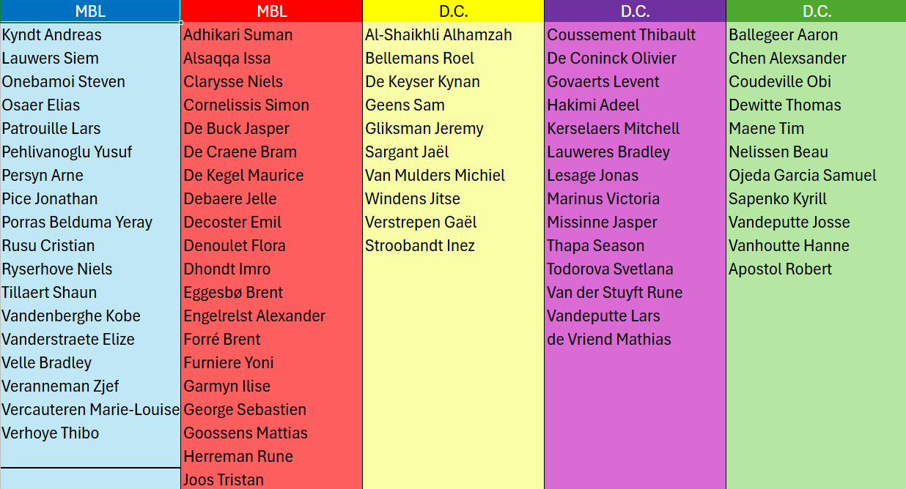
Build It Yourself. Learn Together.
This project is individual, but that doesn’t mean you can’t help each other. Your code is your responsibility, and your learning accelerates when you challenge and support your peers.
Collaboration
- It is an individual project.
Write your own code and be able to explain every important choice. - You are allowed to help each other. 🤝
Discuss ideas, compare approaches, and unblock one another without copying implementations. - Learn by teaching (most important). 💡
Explaining your solution to someone else is the fastest way to expose gaps, strengthen your reasoning, and build confidence. - Organize yourself online or offline. 💻🏫
Build a rhythm that works for you, and use the project classroom on campus whenever you need a focused place to work or to collaborate in person.
Technical coaching 🧑🏫
Technical coaching sessions are only on campus in the project classroom.
Teach to learn: Make it a routine
Students who actively teach peers usually perform better in technical discussions and oral exams. Teaching forces you to structure your thoughts, justify your choices, and convert “I think” into “I know why”.
- Explain one design decision.
- Ask your peer to challenge your explanation with why-questions.
- Switch roles and let them teach you their approach too.
- Remember, except for the messaging module, the shared code folders could be questioned.
Grading
Each module is graded separately, and your score is based on three components:
- Partial exam (30%)
- Process evaluation and Progress (10%)
- Seperate oral exam for each module (60%)
To pass a module, you must pass the oral exam for that module. The oral exam will focus on technical questions covering key topics from the module that are relevant to the project.
The process evaluation consists of two parts:
- Your performance during different sprints, assessed based on your activity on GitHub.
- Progress in the deliverables, assessed based on the deliverables you have completed and the quality of your work.
User Flows
This section outlines all the user flows within the Howestprime system.
Each user flow is described from both a UI perspective and a container perspective.
The user flows:
- Provide a high-level overview of the interactions between the various containers in the Howestprime system.
- Illustrate how users interact with the system through the UI.
- Offer a detailed, step-by-step guide on the implementation of each user flow.
Note that the user flows will be fully functional once the following components are completed:
- The microservice movies is implemented.
- The microservice ticketing is implemented.
- The client web app is implemented.
- The client backoffice is implemented.
- The client mobile app is implemented.
Understanding the user flows beforehand is beneficial for the system’s implementation.
User flow: Register a movie
Goal
The Howestprime manager wants to register a new movie.
Description
Registering a movie signifies that Howestprime has obtained the rights to screen the movie and that it is now available within the Howestprime system.
Only after a movie is registered can it be scheduled through a movie event.
When is this user flow usable?
This user flow will be fully usable after the following is completed:
- The microservice movies is implemented.
- The client backoffice is implemented.
UI Flow
Only a single page form is involved.

Container flow
The register a movie user flow involves the following containers:
(Scroll left/right on the user flow diagram to see all containers)
Steps:
- The Howestprime manager opens the client backoffice GUI and registers a new movie.
- The client backoffice sends a webapi request to the microservice movies to register the movie.
- This microservice validates the movie data, stores the movie in the database, and emits the MovieRegistered domain event.
- The client backoffice recieves the movie id in the location header of the http response.
- Nothing needs to happen with this movie id.
- At some point the microservice ticketing recieves the domain event MovieRegistered from the messagebroker because it is subscribed to this event.
- The microservice ticketing updates its internal database to reflect the new movie.
Schedule a Movie Event
Goal
The HowestPrime manager wants to schedule a movie event for a registered movie.
Description
Scheduling a movie event allows the HowestPrime manager to organize a movie showing by associating a registered movie with a specific time, date, and room. This ensures the movie event is available for bookings and ticket sales.
The scheduling process includes selecting a specific month, room and movie. Movies can only be scheduled for future dates and at specific times (15:00 or 19:00).
When is this user flow usable?
This user flow will be fully usable after the following is completed:
- The microservice movies is implemented.
- The client backoffice is implemented.
Extra
The following feature is optional and not necessary for this user flow, it is a nice-to-have feature. Do not implement this feature if you are short on time or have not completed other deliverables.
Prevent the HowestPrime manager from scheduling a movie event on a date that is already booked.
UI Flow
Start: monthly overview

Plan movie: choose a day, month, time and room

Container Flow
The schedule a Movie Event user flow involves the following steps:
- The HowestPrime manager opens the client backoffice GUI and selects the option to schedule a new movie event.
- The HowestPrime manager selects the desired month and room.
- The client backoffice sends a request to the microservice movies to retrieve the list of scheduled movie events and saves this response for later use.
- The client backoffice sends a request to the microservice movies to retrieve the list of registered movies for later use.
- The client backoffice sends the scheduling request with the movie ID, date, time, and room ID to the microservice movies.
- The microservice validates the request to ensure the following:
- The movie ID corresponds to a registered movie.
- The date is in the future.
- The time is either 15:00 or 19:00.
- If the request is valid, the microservice movies saves the scheduled event in the database and generates an event ID.
- The microservice sends the event ID back to the client backoffice in the response.
- The HowestPrime manager receives a confirmation of the successfully scheduled event, including the event ID and details.
- Any exceptions from the microservice or backoffice is displayed in a user-friendly manner to the HowestPrime manager.
User flow: Browse through a movie catalog
Goal
The Howestprime:
- customer wants to browse the available movie catalog to select a movie to watch.
- manager wants to browse the available movie catalog to manage the registered movies.
Description
Client web app Browsing the movie catalog allows the HowestPrime customer to view the list of registered movies and select one to watch. The customer can filter the list based on various criteria, such as genres, release date, and rating.
Client backoffice The HowestPrime manager can browse the movie catalog to manage the movies. Like the customer, the manager can filter the list based on various criteria, such as genres, release date, and rating.
When is this user flow usable?
This user flow will be fully usable after the following is completed:
- The microservice movies is implemented.
- The client web app is implemented.
- The client backoffice is implemented.
UI Flow
The HowestPrime customer interacts with the client web app to browse available movies, apply filters, view movie details, and select a movie to watch.
The HowestPrime manager interacts with the client backoffice to browse available movies, apply filters, view movie details, and manage the movie events.
Container Flow
The Browse Through Movie Catalog user flow involves the following containers:
- The HowestPrime customer opens the client web app and browses the list of available movies.
- The client web app sends a request to the microservice movies to fetch the list of available movies, possibly applying filters. See the openapi specification for the microservice movies for more details on filtering.
- The microservice movies responds to the client web app with the list of available movies, based on the applied filters. This list contains only movie information.
The same flow applies to the HowestPrime manager in the client backoffice, but through the client backoffice instead of the client web app.
User flow: Book a movie event
Goal
The HowestPrime customer wants to book a movie event.
Description
Booking a movie event allows the HowestPrime customer to reserve their desired movie screening. This process includes browsing available movies, selecting the movie event, specifying the number of seats, enriching the generated order with customer details, paying for tickets, and receiving confirmation of the booking. The released tickets are published to the mobile app after a successful payment.
A booking represents a reservation for a movie showing. It captures the intent of the user to attend the movie and secures seats for them.
An order represents a confirmation and completion of the booking process, including ticket issuance and payment.
When is this user flow usable?
This user flow will be fully usable after the following is completed:
- The microservice movies is implemented.
- The microservice ticketing is implemented.
- The client web app is implemented.
UI Flow
The HowestPrime customer interacts with the user interface to browse available movies, choose a movie event, date and time, specify the number of seats, add user information, proceed to payment, and finally receive the ticket confirmation.
Wizard step 1: Select a movie

Wizard step 2: Select a date

Wizard step 3: Select a time

Wizard step 4: Select a number of seats

Wizard step 5: Add user information

Wizard step 6: Add payment information

Wizard step 7: Order summary and call to action to Pay

Wizard step 8: Order confirmation after payment successful

Container flow
The book a movie event user flow involves the following containers:
- The customer selects a specific movie from the list in the client web app.
- The web app sends the selected movie Id as a request to the microservice movies to fetch all the necessary details for the selected movie through the RetrieveMovieEventById endpoint.
- This microservice responds to the web app with the movie details, including the available dates and times for the selected movie.
- The customer starts the booking wizard and selects a specific date, time, and number of seats for the movie event.
- The client web app sends the booking request with the selected date, time, and seat information to the microservice movies.
- This microservice validates the seat availability for the selected date and time and saves the created booking in the database.
- This microservice responds to the client web app with the bookingId, through the location header of the HTTP response.
- The microservice movies emits a BookingOpened domain event to the message broker.
- The microservice ticketing reacts to the BookingOpened domain event by creating an open order, generating the tickets, and calculating the total price.
- The client web app requests
GET /api/orders/{bookingId}from the microservice ticketing to retrieve the generated order summary. - The microservice ticketing responds with the orderId, bookingId, status, customer information, tickets, and total price.
- The customer provides personal details and accepts the terms and conditions through the client web app.
- The client web app sends
POST /api/orders/{orderId}/customerto the microservice ticketing. - The microservice ticketing validates the request, updates the order with customer information, stores the accepted terms flag, and responds with
201 Created. - The client web app requests the order summary again through
GET /api/orders/{bookingId}and displays the updated order information to the customer. - The customer provides payment details through the client web app.
- The client web app sends
POST /api/orders/{orderId}/paymentsto the microservice ticketing with the payment details, bookingId, and amount. - The microservice ticketing creates the payment, calls the payment service, stores the final payment status, and publishes either PaymentSuccess or PaymentFailed.
- If the payment is successful, the microservice ticketing application layer uses a policy to mark the order as paid.
- The microservice ticketing application layer reacts to the internal OrderPaid event with a second policy, releases the tickets, and publishes TicketsReleased.
- The microservice movies reacts to PaymentSuccess by closing the booking.
- The client mobile receives the TicketsReleased event through the message broker and stores the tickets for the customer.
- The client web app shows the confirmation screen after the successful payment flow is completed.
- If the payment fails, the microservice ticketing publishes PaymentFailed and a policy cancels the order.
- The microservice movies reacts to PaymentFailed by closing the booking and releasing the seats.
Howestprime Technical Overview
This document provides a high-level technical overview of the Howestprime solution. It complements the user flows by offering an understanding of the underlying operations of Howestprime.
Below is a textual description followed by a diagram.
1. Howestprime Manager
- Goal: Manage the scheduling of movie events and register new movies.
- Type: Person
- Utilizes: Client Backoffice to achieve its objectives.
2. Howestprime Customer
- Goal: Book a Howestprime movie event.
- Type: Person
- Utilizes:
- Client Web App to purchase tickets.
- Client Mobile to receive and display ordered tickets within the mobile application.
3. Client Backoffice
- Goal: Schedule movie events and register new movies.
- Type: Web application
- Used by: Howestprime Manager
- Utilizes: microservice movies to manage events and register new movies.
- Technology: .NET, server-side rendering
4. Client Web App
- Goal: Enable Howestprime Customers to book movie events.
- Type: Web application
- Used by: Howestprime Customers
- Utilizes:
- Microservice Movies to populate the website with movies, events, and movie details.
- Microservice Ticketing to retrieve orders by booking id, add customer information, and handle payments.
- Technology: Vue.js, HTML, JavaScript
5. Client Mobile
- Goal: Receive tickets and allow customers to display them to Howestprime employees.
- Type: Mobile application
- Used by: Howestprime Customers
- Utilizes:
- Message Broker to receive TicketsReleased events.
- Technology: Android Native Development
6. Microservice Movies
- Goal: Manage the movie catalog, schedule movie events, and maintain bookings to reserve and release cinema seats. Bookings are passed to microservice ticketing through the BookingOpened event so the ticketing flow can continue.
- Type: Microservice
- Used by: Client Backoffice, Client Web App
- Utilizes:
- Message Broker to publish MovieRegistered and BookingOpened events, and to react to payment outcome events.
- Technology: .NET
7. Microservice Ticketing
- Goal: Manage movie snapshots, orders, customer enrichment, payments, and ticket release.
- Type: Microservice
- Used by: Client Web App
- Utilizes:
- Message Broker
- Listens for MovieRegistered and BookingOpened events.
- Publishes PaymentSuccess, PaymentFailed, and TicketsReleased.
- Uses application-layer policies to react to payment results and continue the internal order flow.
- Message Broker
- Technology: Deno, TypeScript
8. Messagebroker
- Goal: asynchronious communication channel for events.
- Type: 3th party software.
- Used by:
- the microservices to send and receive events.
- the client mobile to recieve cinema tickets.
- Technology: LavinMQ as messagebroker, AMQP as transport protocol.
Github classrooms
Below are the classroom assignments for the Howestprime project.
Available classrooms 📚
The classrooms below are available to join, so you can start working on the deliverables for each classroom.
- Microservice Movies
- Client Backoffice
- Environment Test
- Microservice Ticketing
- Client Mobile
- Environment Prod
Deliverables
| Deliverable | Description | Key Components | Modules |
|---|---|---|---|
| Environment Dev | A test environment setup using containerization for isolating and replicating movie and ticketing microservices. This ensures consistent and reliable testing that mimics production environments. | Docker, Containerization, Automated Testing | System architecture & Deployment |
| Microservice Movies | The movie microservice is responsible for managing the movie catalog such as creation, updating, and scheduling. It integrates with the ticketing microservice to provide seamless booking experiences. | .NET C#, Clean Architecture, Domain-Driven Design | .NET Technology, Framework design & client technologies, Applied AI |
| Client Backoffice | This GUI is designed for cinema administrators to manage movie listings, and schedule showtimes. It offers a user-friendly, intuitive, and responsive interface that simplifies movie management tasks. | .NET Blazor, Server side rendering | .NET Technology |
| Environment Test | A test environment setup using containerization for isolating and replicating movie and ticketing microservices. This ensures consistent and reliable testing that mimics production environments. | Docker, Containerization, Automated Testing | System architecture & Deployment |
| Microservice Ticketing | The ticketing microservice manages the ticket ordering process, handling orders, payments, and cancellations. It integrates tightly with the movie microservice for real-time booking and payment updates. | Deno, TypeScript, Clean Architecture, Domain-Driven Design | Framework design & client technologies, Applied AI |
| Client Web App (implemented) | A user-friendly GUI that guides customers through the ticket booking process with a step-by-step wizard, simplifying the process of selecting movies, seats, and making payments. | Vue.js, JavaScript, HTML, CSS | Framework design & client technologies |
| Client Mobile | A mobile application designed for customers to browse movies, book tickets, and manage digital tickets, with features like GPS-based room navigation and push notifications for movie start times. | Native development, Message broker | Device Development |
| Environment Prod | The production environment hosted on Azure, designed to ensure the availability, scalability, and security of the microservices and GUIs, capable of handling high user loads and peak traffic. | Github actions, Azure, Terraform | System architecture & Deployment |
| Build pipelines | The CI/CD setup automates the building, testing, and deployment of the movie and ticketing microservices along with their GUIs, ensuring efficient and reliable delivery into production. | GitHub Actions, Azure Pipelines, Docker, Automated CI/CD | System architecture & Deployment |
D01: Development Environment
Description
Each component requires its own local development environment. In this deliverable, we will establish development environments for the two microservices and the client backoffice.
There is no need for a client webapp development environment, as it is already fully implemented and belongs to a third party. We will only use the client webapp in the test environment as a docker container.
Prerequisites
- Bookmark this documentation website for easy reference.
- Docker installed (preferably with WSL2 integration).
- Docker Compose installed.
- Start with a clean Docker environment by pruning the system:
docker system prune -a - Create a dedicated directory for this build and deploy project where you’ll clone all component repositories.
- Accept the GitHub Classroom assignments and clone the repositories into your project directory.
Background
Review the background information about environments in the appendix:
Requirements
- Successfully configure a functional development environment for each component.
Best Practices
- Maintain a comprehensive cheatsheet of frequently used commands to increase your efficiency.
- Include commands for all relevant tools when you encounter them during the next weeks: Docker, dotnet, deno, azure, terraform, etc.
Bookmarks
Since we’ll run multiple instances of the same software on different ports, create these browser bookmarks for convenient access:
- Browser bookmarks (TEST environment bookmarks will be used later):
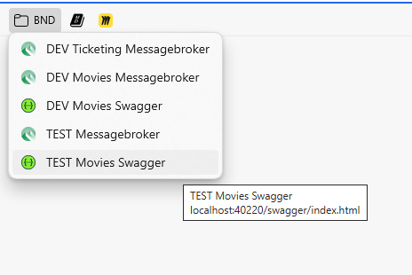
Note: DEV Movies Swagger links to the OpenAPI specification generated by the movies microservice.
- DataGrip bookmarks (TEST environment bookmarks will be used later):
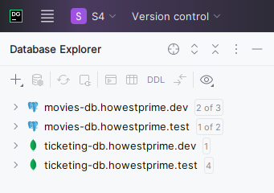
Example Development Environment
When properly configured, your Docker containers should look similar to these:
Docker Desktop view:
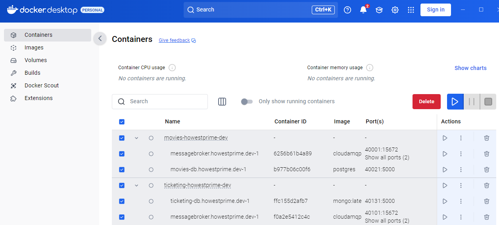
Docker CLI view:
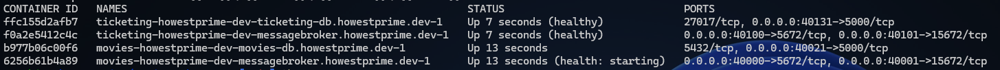
Technical Reference
-
Creating a network in Docker Compose with a unique subnet:
networks: howestprime-movies: ipam: config: - subnet: 10.13.0.0/16 -
Creating and mounting a volume:
# In the docker-compose.yml file define the volume volumes: my-volume-name # In the container configuration, mount the volume volumes: - my-volume-name:/where/to/mount -
Passing environment variables to a container:
# Reference an .env file in the container configuration env_file: - .name-of-the-env-file -
Starting containers with Docker Compose:
docker compose -f path/to/docker-compose.yml up -d --remove-orphans -
Stopping containers with Docker Compose:
docker compose -f path/to/docker-compose.yml down
Component: Microservice Movies
The microservice movies itself runs in the IDE.
The required dependencies (PostgreSQL and LavinMQ) run in Docker containers.
Open the repository for this component in your favorite IDE.
Steps
-
Make sure you can run the microservice movies in your IDE.
The following commands should work in order.- dotnet clean
- dotnet build
- dotnet run –project src/Howestprime.Movies.Main
- dotnet tool restore
-
Create a docker-compose.yml file in config/movies-howestprime-dev and add the following services:
!Carefully read the settings table in the appendix environments for names and ports!-
Network: create a separate Docker network for this component.
- name: movies-howestprime-dev
-
Database container: PostgreSQL
- image: postgres
- create a volume for the PostgreSQL data
- assign the previously created network to this container
- all settings for the container should be passed through an environment file.
-
Messagebroker container: LavinMQ
- image: cloudamqp/lavinmq
- assign the previously created network to this container
-
-
Complete the appsettings.json file and appsettings.Development.json.
- Use a secrets file to store the database password and username.
- In windows 11, the sercrets file is located in the following folder:
- ~\AppData\Roaming\Microsoft\UserSecrets
Test
-
Boot the movies-howestprime-dev environment with docker compose.
-
Create a database connection with a clear and meaningful name.
- Use the test connection button to test the connection.
-
Check the messagebroker connection by using the lavinmq web interface:
- Can you login with the default credentials?
- Can you create a new queue?
- Create a simple exchange with a name of your choice.
- remove it after testing.
-
Shut down the containers through the docker compose command:
Config folder
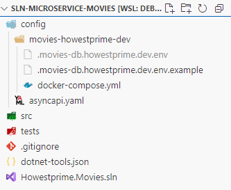
Definition of Done
- The docker-compose.yml file is created.
- An environment file is created for the database connection.
- The test is successful.
- Commit and push the changes to your repository.
Component: Microservice Ticketing
The microservice ticketing itself runs in the IDE.
The required dependencies (MongoDB and LavinMQ) run in Docker containers.
Open the repository for this component in your favorite IDE.
Steps
-
Create a docker-compose.yml file in config/ticketing-howestprime-dev and add the following services:
!Carefully read the settings table in the appendix environments for names and ports!-
Network: create a separate Docker network for this component.
- name: ticketing-howestprime-dev
-
Database container: MongoDB
- image: mongo:latest
- leave username and password empty in the env file
- assign the previously created network to this container
- create a volume (in the container service) for the MongoDB data
- This create a volume on the root of this repository.
volumes: - ../../data:/data/db- Database transactions in MongoDB don’t work out of the box. Add the following command section.
command: > bash -c " mongod --port 5000 --replSet rs0 --bind_ip_all & until mongosh --port 5000 --eval 'print(\"waited for connection\")' do sleep 1 done mongosh --port 5000 --eval 'rs.initiate({ _id: \"rs0\", members: [{ _id: 0, host: \"ticketing-db.howestprime.dev:5000\" }] })' wait "- Because setting up mongoDB for transactions takes a while, we need to add a healthcheck to the container.
In this way other containers can wait for the database to be ready before they start.
healthcheck: test: ["CMD-SHELL", "mongosh --port 5000 --eval 'db.adminCommand(\"ping\")'"] interval: 10s timeout: 3s retries: 5 start_period: 40s- all settings for the container should be passed through an environment file.
- Just like in the postgres container, create an environment specific file for this container.
-
Messagebroker container: LavinMQ
- image: cloudamqp/lavinmq
- assign the previously created network to this container
- helthcheck:
healthcheck: test: ["CMD-SHELL", "lavinmqctl status | grep -q 'Uptime: ' || exit 1"] interval: 10s timeout: 3s retries: 5 start_period: 40s
-
-
Rename the .env-example file to .env and complete it’s content.
-
Make sure you can run the microservice ticketing in your IDE.
- deno task run
- deno task qa
Test
-
Boot the movies-howestprime-dev environment with docker compose.
-
Create a database connection with a clear and meaningful name.
- Use the test connection button to test the connection.
-
Check the messagebroker connection by using the lavinmq web interface:
- Can you login with the default credentials?
- Can you create a new queue?
- Create a simple exchange with a name of your choice.
- remove it after testing.
-
Shut down the containers through the docker compose command:
Config folder
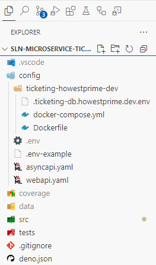
Definition of Done
- The docker-compose.yml file is created.
- An environment file is created for the database connection.
- The test is successful.
- Commit and push the changes to your repository.
Component: Client Backoffice
This project emphasizes specifications and contracts between components, resulting in a unique development environment for the web applications.
You will develop the client backoffice using the OpenAPI specifications of the microservices.
The client web application is a third-party application that is already fully implemented. You will not need to develop this application, but you will use it in the test environment as a docker container.
This approach allows you to develop the web application without needing the microservices to be running.
To achieve this, the client backoffice makes use of a mock server that simulates the behavior of the microservices. This mock server is pre-configured to return appropriate responses for the user flows you need to implement in the client backoffice.
Running the client backoffice
- Start the mock server by running the following command in your terminal:
dotnet run --project Howestprime.Movies.MockServer
- Run the client backoffice application:
dotnet run --project Howestprime.Backoffice
# This won't do much, because it's not implemented yet, but it will allow you to verify that the application starts without errors.
Definition of Done
- You are able to run the movies mock server without errors.
- You are able to run the client backoffice application without errors.
Component: Client Mobile Application
Don’t implement this in sprint 1.
We will come back to this in the sprint of the mobile application!
This development environment is a Docker environment containing a messagebroker.
Open the folder for this component in your IDE.
Create a docker-compose.yml file in config/dev and add the following services:
-
Network: create a separate Docker network for this component.
-
Messagebroker container: LavinMQ
- image: cloudamqp/lavinmq
- assign the previously created network to this container
Test
-
Boot the containers through the docker compose command:
docker compose -f config/dev/docker-compose.yml up -
Check the message broker connection by using the web interface:
- Can you login with the default credentials?
- Can you create a new queue?
-
Shut down the containers through the docker compose command:
docker compose -f config/dev/docker-compose.yml down &
Definition of Done
- The docker-compose.yml file is created.
- The test is successful.
- Commit and push the changes to your repository.
D02: Movies Microservice
Description:
The movies microservice is responsible for movie management and booking. This includes creating, updating, and retrieving movie information, as well as managing the scheduling and booking of movie events and booking of movie events.
The microservice integrates with the ticketing microservice to ensure a seamless experience when users book movie events. As soon as the movie microservice is done booking a movie event, the ticketing microservice will be notified to create a ticket for the user.
The application Howestprime backoffice and Howestprime client webapp will respectivly interact with the movies microservice through a webapi to manage movie events and buy tickets.
Details
| Key | Description |
|---|---|
| Summary | Management of the movie catalog and movie events. Enabling users to book movie events. |
| Modules involved | .NET Technology, Framework design & client technologies |
| Sprint | 01 |
| Concepts | Clean Architecture, Domain-Driven Design, Testing, Microservices, Events |
| Technologies | .NET 10, Docker, LavinMQ, OpenAPI, AsyncAPI, PostgreSQL |
Starting point
The starting point for this deliverable is building the first functional requirement [FR01];
Used concepts
- Ports & Adapters Ensures separation of concerns and maintainability by structuring the system into well-defined layers (infrastructure, application, domain).
- Domain-Driven Design (DDD): Focuses on creating a rich domain model in the domain layer that encapsulates all business logic for managing movies and their events.
- Testing: Comprehensive unit testing using xunit for .NET will be implemented to ensure code reliability and robustness.
- Async communication / Events: The Howestprime microservices communicate with each other using events through a message broker.
Prerequisites
- .NET 10 SDK is installed.
- Git is installed.
- The repository for this deliverable is cloned from GitHub classroom.
Functional requirements (FR)
- [FR01]: be able to register a movie.
- [FR02]: be able to search movies by filters.
- [FR03]: be able to find a movie by id.
- [FR04]: be able to schedule a movie event.
- [FR05]: be able to get the howestprime schedule
- [FR06]: be able to retrieve the movie events by month
- [FR07]: be able to book a movie event.
- [FR08]: be able to close a booking (optional).
- [FR09]: be able to change movie details (optional).
Non functional requirements (NFR)
- [NFR01]: A basic CI/CD pipeline is set up for the microservice.
- [NFR02]: The microservice is built using Clean Architecture.
- [NFR03]: The domain layer and application layer are 97% covered by unit tests.
- [NFR04]: Migrations are implemented for the database and run automatically on startup.
Technical reference
Some of the following commands are not ready to be blindly used.
Make sure to check the command before executing it.
- Restoring the tools in the dotnet-tools.json file:
dotnet tool restore
- When the IDE is out of sync or the project is not loading, run the following command:
dotnet clean
dotnet build
- Running the application:
dotnet run --project src/Howestprime.Movies.Main
- Running the tests:
dotnet test
# Test with extra verbosity
dotnet test --logger "console;verbosity=detailed"
- Creating a new migration:
dotnet ef migrations add Initial \
-o Persistence/EntityFramework/Migrations/PostgreSQL \
--context DomainContextPostgres \
--project src/Howestprime.Movies.Infrastructure \
--startup-project src/Howestprime.Movies.Main \
--verbose
- Building and publishing a new docker container for the test environment:
dotnet publish --os linux /t:PublishContainer /p:PublishProfile=test src/Simplifyme.Taskly.Main
- Managing dotnet secrets:
In windows 11, the sercrets file is located in the following folder:
- ~\AppData\Roaming\Microsoft\UserSecrets
# Initialize secrets for a project
dotnet user-secrets init --project src/Howestprime.Movies.Main
# Set database credentials
dotnet user-secrets set "Database:Username" "devuser" --project src/Howestprime.Movies.Main
dotnet user-secrets set "Database:Password" "password" --project src/Howestprime.Movies.Main
FR01: Register a movie
Hint: In all FRXX deliverables, you will need DDD objects like entities, value objects, aggregates and repositories.
You can find the required DDD objects for this deliverable in the Entities and objects section.
Don’t implement all the DDD objects at once, but only the ones you need for this functional requirement. This way you can focus on the most important parts and avoid overengineering.
Watch out
The openapi specification of the microservice movies is only an example of how it should look like.
In this way you have an idea on how to name your routes, bodies and response.
Remember, in .NET the openapi specification is generated from the code each time you run the code. So it’s perfectly possible that the example openapi specification is not up to date with the code.
TL;DR
Create a post webapi endpoint in the microservice movies that allows the Howestprime backoffice to register a new movie in the movies database.
Description
One of the responsibilities of the movies microservice is to manage the movie catalog. This includes registering new movies. Registering a movie means that Howestprime has bought the rights to show a movie in the cinema rooms.
To support this feature the microservice movies must provide a web API endpoint that allows the Howestprime backoffice to create a new movie or modify a movie in the movies database. The movie information that needs to be provided includes the movie title, description, duration (minutes), genres, actors, release year and poster url.
The movie is stored in the database for future scheduling of movie events and booking purposes. Because registering a movie is an important event, the microservice movies will publish an event called MovieRegistered to inform other interested parties that a new movie has been added to the catalog.
Consumers
The consumer of this FR is the client backoffice.
The client uses this FR to register a new movie in the movies catalog.
Building blocks:
The following building blocks are involved in this functional requirement:
- Use case: RegisterMovie
- Aggregate: Movie
- Repository: MoviesRepository
- Triggers events: MovieRegistered
- Webapi endpoint: POST /api/movie-catalog
- MessageBroker:
- Exchange: howestprime
- Routing key: howestprime.movies.movie.movieregistered
Details
- Implement the use case Register a movie.
- See the openapi specification for the required input and output data.
- Implement the webapi endpoint and trigger the usecase.
- The MovieRegistered event must be published on the topic exchange howestprime with the routing key howestprime.movies.movie.movieregistered.
- See the AsyncAPI specification from the microservice movies for more details.
Note: You will notice that creating an ORM mapping for the value objects in the Movie aggregate just works. This is because there is global ValueObject convention in the project. If you want to know more about this convention, check out the SinglePropertyValueObjectConverter.cs in
Infrastructure/Persistence/EntityFramework/Configuration/Converters.You must be able to explain the high level idea behind this convention and how it works, not the implementation details.
Diagrams & user flows
The following diagrams are relevant for this functional requirement:
Use case
| Use case | Register a movie |
|---|---|
| Input | Title Description Duration Genres ReleaseYear Actors AgeRating PosterUrl |
| Output | Movie id (string) |
| Description | Register a new movie in the movie catalog. |
| Primary Actor | Web API endpoint |
| Secondary Actors | Howestprime movies database MessageBroker |
| Steps | 1. Create a new movie aggregate with the provided data The entity publishes a MovieRegistered event on succesful creation. 2. Persist the new movie through the moviesRepository. 3. Output the movie id. 5. The unit of work commits the transaction and emits the events. |
| Pre-conditions | Title, description, genres, actors are non-empty strings. Duration is a positive integer. ReleaseYear is the current year or in the past |
| Post-conditions | The new movie is successfully persisted in the database. A MovieRegistered event is published. |
Genre and Actor mapping
Genres (List<Genre>) and actors (List<Actor>) are stored as value objects in the domain model. We need to create an ORM mapping for these value objects to persist them in the database as json.
This allows us to store lists of genres and actors without needing to create separate tables for them, which simplifies our database schema.
Below is an overview of how we handle this in our application, using EF Core’s owned entity types and JSON mapping capabilities.
1) Domain model (Movie) mapping
The domain entity stores genres and actors as value objects:
IReadOnlyList<Genre> GenresIReadOnlyList<Actor> Actors
EF configuration is done in:
src/Howestprime.Movies.Infrastructure/Persistence/EntityFramework/Configuration/Domain/MovieConfiguration.cs
Key part:
builder.OwnsMany(m => m.Actors, actorBuilder =>
{
actorBuilder.ToJson();
actorBuilder.Property(a => a.Value);
});
builder.OwnsMany(m => m.Genres, genreBuilder =>
{
genreBuilder.ToJson();
genreBuilder.Property(g => g.Value);
});
What this means:
ActorsandGenresare owned collections.- Each item is stored as JSON (using
ToJson()). - EF persists the single
Valueproperty of each value object.
Integration test
- Bootstrap the application and the corresponding dev environment for this deliverable.
- Configure LavinMQ through the GUI to listen to the MovieRegistered event.
- This means creating and binding a queue to the exchange howestprime with the routing key howestprime.movies.movie.movieregistered.
- Use the openAPI UI to register a new movie.
- Verfiy that the endpoint returns the movie id.
- Verify that the movie is successfully persisted in the database.
- Verify that the MovieRegistered event is received by LavinMQ.
Definition of Done
- The application and domain layer are 100% covered by unit tests.
- The new endpoint is well documented in the OpenAPI specification.
- The endpoint is implemented and triggers the use case RegisterMovie.
- The integration test is successful.
CI/CD Pipeline for the Microservice Movies
Description
In this exercise, you will build a basic CI/CD pipeline for the movies microservice using GitHub Actions.
The pipeline should include the following steps:
- Unit-Tests: Run the unit tests, and fail if any tests fail
- Coverage: Ensure adequate test coverage of your code
In future deliverables, we will extend the pipeline with additional steps like build and deploy.
Hint: don’t wait for the build pipeline to check your code coverage. Make use of your IDE’s code coverage tools to ensure you meet the required threshold before pushing your code. This will save you time and prevent unnecessary build failures.
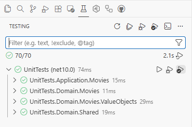
Prerequisites
- Ensure the domain and application layers are covered by unit tests
Requirements
Your CI pipeline should:
-
Quality Assurance:
- Trigger on pushes to the main branch and pull requests
- Run on the latest Ubuntu environment
- Configure the .NET 10 SDK
- Execute unit tests with appropriate reporting
-
Code Coverage:
- Generate code coverage reports
- Ensure coverage is above a minimum threshold (97%)
- Make the coverage report available as a downloadable artifact
Both steps should run in parallel.
Implementation Steps
- Create the GitHub workflow file according to the requirements outlined above.
- Ensure your test project path is correct (default is
tests/UnitTests/UnitTests.csproj) - Commit and push your workflow file to GitHub
Setting Up Your Workflow File
Create a file at .github/workflows/ci.yml with the following structure:
name: CI Pipeline
on:
push:
branches: [ main ]
pull_request:
branches: [ main ]
jobs:
unit-tests:
runs-on: ubuntu-latest
steps:
- name: Checkout code
uses: actions/checkout@v4
- name: Setup .NET SDK
uses: actions/setup-dotnet@v4
with:
dotnet-version: '10.0.x'
# Your unit-tests steps will go here
coverage:
runs-on: ubuntu-latest
steps:
- name: Checkout code
uses: actions/checkout@v4
- name: Setup .NET SDK
uses: actions/setup-dotnet@v4
with:
dotnet-version: '10.0.x'
# Your coverage steps will go here
Interesting Commands test commands in .NET
The following commands work in WSL/bash, adapt them for PowerShell if needed. Look up what they do and how to use them in your workflow file.
dotnet test --configuration Release \
/p:CollectCoverage=true \
/p:CoverletOutputFormat=opencover \
/p:Threshold=97 \
/p:ThresholdType=line \
'/p:Include="[Howestprime.Movies.Application]*,[Howestprime.Movies.Domain]*"'
dotnet test --configuration Release --verbosity normal
dotnet restore
Testing Your Pipeline
To verify your pipeline works correctly:
- Push your changes to the main branch
- Check the Actions tab in your GitHub repository
- Verify that all jobs complete successfully
- Download and review the coverage report
FR02: Search the movie catalog by filters
TL;DR
Implement a search functionality to filter movies based on title and genre.
This feature (/api/movie-catalog) is only available for Manager roles.
Extra challenge: There is an extra challenge for this functional requirement. You can find it at the end of this document.
Description
The microservice movies must support searching for movies based on title and genre filters. The results depend on the user’s role:
- Customer: Not allowed
- Manager: Access the complete movie catalog.
This functionality enables efficient movie discovery, ensuring that customers find upcoming movies and managers manage the entire collection.
The user role is determined by the web api endpoint using a custom header x-user-role.
As always many details are described in the openapi.yaml file, so make sure to check it out.
Consumers
The consumer of this functional requirement is the client backoffice.
The client backoffice uses this functionality to allow managers to search the entire movie catalog.
Building blocks:
- Use case: SearchMovieCatalog
- Data: List of MovieData
- QueryServices: SearchMovieCatalogQuery
- Make sure this query class accepts a filter object as parameter to filter the movies based on title and genre. (See simplifyme.taskly for an example of how to implement this filter object)
- Filter: MovieDataFilters.ByTitleAndGenres
- Web API endpoint: GET /api/movie-catalog
- Query parameters: title, genres
- Role-based access: Use a custom header like x-user-role set to Manager.
- Response: List of Movies (Use Web API response objects, not entities or data objects)
Details
- Implement the use case SearchMovieCatalog.
- Create a query model for the ORM.
- Allow filtering by:
- Title
- Genres
- Restrict customer access to this usecase.
- Return all found movies
- Implement the web API endpoint to trigger the use case.
First query assignment
This is your first query.
You need to create a query model for the ORM.
Start by creating a MovieData class. This class should contain the properties as described in the MovieData table.
Afterwards you’ll need to create a MovieDataConfiguration class to register this MovieData class with the ORM.
Warning: do not forget to turn off query tracking in the DbContext. This is important for performance reasons. The query model does not need to track changes to entities it only needs to read data.
Note: Genres and actors are stored as json in the database.
See the Genre and Actor mapping section below for more details on how to implement this.
Warning
Using a custom header like x-user-role is common to differentiate user roles. However, this approach is not secure and should not be used in production. Instead, use a proper authentication and authorization mechanism. This is out of scope for this project.
Diagrams & user flows
The following diagrams are relevant for this functional requirement:
Use case
| Use case | SearchMovieCatalog |
|---|---|
| Input | Title Genres |
| Output | List of movie data (MovieData classes) |
| Description | Filter movies based on title and genres. |
| Primary Actor | Web API endpoint |
| Secondary Actors | Movies database |
| Steps | 1. Validate the input filters. 2. If the user is a customer, throw an exception. 3. If the user is a manager, retrieve the complete movie list. 4. Return the filtered list of movies. |
| Pre-conditions | Valid title or genres filter provided (meaningful strings). |
| Post-conditions | The filtered list of movie data is returned. |
| Exceptions | If the filters are invalid, return an empty list. |
Integration test
- Bootstrap the application and the corresponding containers for this deliverable.
- Use the OpenAPI UI to send valid GET requests with title and genre filters.
- Provide a custom header x-user-role with the value manager and verify the filtered results.
- For managers, verify the filtered movie catalog is returned.
- Test invalid cases (e.g., missing filters) and confirm an empty list is returned.
Definition of Done
- The application and domain layer are 100% covered by unit tests.
- The use case SearchMovieCatalog is implemented.
- The integration test is successful.
Genre and Actor mapping
Mapping the list of genres and actors can be a bit tricky, especially when we want to store them as value objects in the domain model, but also need to query them efficiently in the read model.
Below is an overview of how we handle this in our application, using EF Core’s owned entity types and JSON mapping capabilities.
1) Query model (MovieData) mapping
The read model is represented by:
IReadOnlyList<GenreData> GenresIReadOnlyList<ActorData> Actors
EF configuration is done in:
src/Howestprime.Movies.Infrastructure/Persistence/EntityFramework/Configuration/Data/MovieDataConfiguration.cs
It uses the same mapping shape as the domain model:
builder.OwnsMany(m => m.Actors, actorBuilder =>
{
actorBuilder.ToJson();
actorBuilder.Property(a => a.Value);
});
builder.OwnsMany(m => m.Genres, genreBuilder =>
{
genreBuilder.ToJson();
genreBuilder.Property(g => g.Value);
});
So both Movie and MovieData map genres/actors consistently as JSON-owned collections.
Use case: SearchMovieCatalog
In the SearchMovieCatalog, use case string genres from input are converted to GenreData, then passed to the filter:
IReadOnlyList<GenreData> normalizedGenres = [
.. input.Genres.Select(genre => new GenreData(genre))
];
return searchMovieCatalogQuery.Fetch(
MovieDataFilters.ByTitleAndGenres(input.Title, normalizedGenres)
);
Extra challenge
The use case SearchMovieCatalog is only available for howestprime managers. So we need some kind of authorization mechanism to restrict access to this use case. Authorization (not authentication) is part of the application layer (use cases) because it is a business rule that only managers can access this use case.
The web API endpoint is just a way to trigger the use case, but the authorization logic should be implemented in the use case itself.
Example
public sealed class SearchMovieCatalog(
ISearchMovieCatalogQuery searchMovieCatalogQuery,
IAuthorizationService authorizationService
) : IUseCase<SearchMovieCatalogInput, IReadOnlyList<MovieData>>
{
public Task<IReadOnlyList<MovieData>> Execute(SearchMovieCatalogInput input)
{
authorizationService.Authorize(input.UserRole, nameof(SearchMovieCatalog));
return searchMovieCatalogQuery.Fetch(
MovieDataFilters.ByTitleAndGenres(input.Title, input.Genres)
);
}
}
Implement a simple authorization mechanism in the use case to check the user’s role before executing the main logic.
- The AuthorizationService is a Port in the application layer and is implemented as an Adapter in the infrastructure layer.
- Configure your own roles and permissions in a appsettings.json Example (not complete):
"Authorization": {
"PermissionsByRole": [
{
"Name": "Manager",
"Permissions": ["SearchMovieCatalog"]
},
{
"Name": "User",
"Permissions": []
}
]
}
- Create a new module in
Mainto read the configuration and register the AuthorizationService in the DI container.- Use the IOptions pattern (an example is available in simplifyme.payments) to parse the configuration.
Note: This implementation is still naive, but at least you have an own authorization port in place. The adapter is just choosing the library/framework to implement the authorization logic.
FR03: Find a movie by id
Description
This functional requirement involves providing a web API endpoint that allows users to retrieve a movie by its id.
This feature (/api/movie-catalog/{movieId:guid}) is only available for Manager roles.
Consumers
The consumer of this functional requirement is the client backoffice. The client uses this functional requirement to load a movie’s details by its id.
Building blocks:
The following components are involved in this functional requirement:
- Use case: FindMovieById
- Data: MovieData
- Query Service: SearchMovieCatalogQuery
- Filter: MovieDataFilters.ById
- Web API endpoint: GET /api/movie-catalog/{movieId:guid}
- Response: Movie
Details
- Implement the use case FindMovieById.
- Use the query model
- Use the same query as in FR02, but create another filter to find a movie by its id.
Example
IReadOnlyList<MovieData> movies = await searchMovieCatalogQuery.Fetch(
MovieDataFilters.ById(input.MovieId)
);
- Implement the web API endpoint and trigger the use case.
Use case
| Use case | Find a movie by id |
|---|---|
| Input | Movie id |
| Output | MovieData |
| Description | Retrieve a movie by its id. |
| Primary Actor | Web API endpoint |
| Secondary Actors | Howestprime movies database |
| Steps | 0. Only manager roles are allowed. 1. Fetch the movie data from a Query class 2. Return the movie data |
| Pre-conditions | The id is a valid UUID. |
| Post-conditions | The query returns movie data if the id is found. |
| Exceptions | If the movie id is not found, exit the use case with an exception. |
Integration test
- Bootstrap the application and the corresponding containers.
- Use the OpenAPI UI to register a new movie.
- Use the OpenAPI UI to find the previously registered movie by its id.
- Verify that the endpoint returns the correct movie data.
Definition of Done
- The application and domain layers are 100% covered by unit tests.
- The new endpoint is thoroughly documented in the OpenAPI specification.
- The endpoint is implemented and triggers the FindMovieById use case.
- The integration test passes successfully.
FR04: Schedule a movie event
TL;DR
Enable the scheduling of movie events in the microservice movies. Events can be scheduled twice a day at predefined showtimes (15:00 and 19:00) in one of two available rooms (seeded rooms). Scheduling is restricted to future dates and requires the movie to be registered beforehand.
Description
The microservice movies must support scheduling movie events to provide a structured way of organizing movie showings. Events can only be scheduled:
- At specific times: 15:00 or 19:00
- In the future (schedulig is not possible in the past).
- In one of two available rooms (Blue Room, Yellow Room).
- For any day of the week in the future.
- A showtime is a time + date combination.
The movie must be registered in the system before scheduling. This ensures consistency and prevents errors from attempting to schedule unregistered movies. Scheduling involves assigning a movie, a showtime, and a room.
This functionality is central to managing the movie schedule and integrating other services like ticketing and bookings.
Consumers
The consumer of this FR is the client backoffice. The client uses this FR to schedule a movie event.
Building blocks:
The following building blocks are involved in this functional requirement:
- Use case: ScheduleMovieEvent
- Entities:
- Movie (Aggregate)
- MovieEvent (Aggregate) (new)
- Room (Aggregate) (new)
- Repository: MovieRepository, MovieEventRepository, RoomRepository
- MovieEventRepository is a new repository that will need an extra function
ByShowtimeAndRoomIDto check if a movie event is already scheduled for a specific showtime and room.
- MovieEventRepository is a new repository that will need an extra function
- Web API endpoint: POST /api/movies-events
Hint: There are many asserts in this requirement, make use of the built-in
Assertsclass and create an extra assert classMovieEventAssertsif necessary.public static void EnsureShowtimeIsAt15hOr19h(DateTime time) { if (time.Hour != 15 && time.Hour != 19) throw new ArgumentException("Time must be at 15h or 19h.", nameof(time)); } public static void EnsureShowtimeIsInTheFuture(DateTime time) { if (time <= DateTime.Now) throw new ArgumentException($"Movie event {time} must be in the future."); }
Details
- Implement the use case ScheduleMovieEvent.
- Use a seeder to seed 2 rooms and some movies (> 1), this is useful for testing and development purposes. Use the fixed room IDs from the box at the top of this page and mirror those IDs in the backoffice.
- Because of the new entities and seeders, you will need new migrations.
- Do not yet implement the concept of bookings and visitors in the entity MovieEvent. You can ignore these properties for now.
- This will be done in the FR about booking.
- Enforce validation rules:
- The movie must be registered in the database.
- The
showtimemust be either 15:00 or 19:00 at a specific date in the future. - Meaningful capacity (> 0)
- If the room and showtime are already scheduled for a movie, overwrite the movieId.
- Persist the scheduled event in the MovieEventRepository.
- No need to check if this endpoint is executed by a Manager.
Important for this FR
- Do not build a rooms endpoint now to fetch all cinema rooms.
- Seed exactly 2 rooms in a seeder class and use the fixed IDs below.
- Hardcode these same room IDs in the client backoffice for room selection.
- If you have time left at the end of Test Environment Part I, you may optionally add a
GET /api/roomsendpoint.var rooms = new List<Room> { Room.Create("Blue Room", 100, EntityId.New<RoomId>(Guid.Parse("019d059e-d220-71db-8a1a-ec7569492999"))), Room.Create("Yellow Room", 80, EntityId.New<RoomId>(Guid.Parse("019d059e-d220-75fe-b936-0a97cd75216e"))) }; context.Rooms.AddRange(rooms);
Diagrams & user flows
The following diagrams are relevant for this functional requirement:
Use case
| Use case | Schedule a movie event |
|---|---|
| Input | Movie ID RequestedShowtime (15:00 or 19:00) Room ID |
| Output | Event ID |
| Description | Schedule a new movie event by associating a registered movie with a showtime, room, and future date. |
| Primary Actor | Web API endpoint |
| Secondary Actors | Movies database |
| Steps | 1. Validate the input data. 2. Use the movie event repository to check if a movie event already exists. 3. Assign a room for the MovieEvent. 4. Assign a movie to the MovieEvent. 5. Assign a showtime (date + time) to the MovieEvent. 6. Persist the MovieEvent in the database. 7. Return the Movie Event ID. |
| Pre-conditions | The movie is registered in the system. The showtime is either 15:00 or 19:00 and the date of the showtime is in the future. The capacity is > 0 |
| Post-conditions | A new movie event is successfully saved in the database. The created MovieEvent ID is returned. |
| Exceptions | If the movie is not found, throw an exception. If the showtime is invalid, throw an exception. If the date is in the past, throw an exception. |
Integration test
- Bootstrap the application and the dev environment for this deliverable.
- Use the OpenAPI UI to send a valid scheduling request with a registered Movie ID, showtime and room ID.
- Verify that the movie event is successfully created and persisted in the database.
- Test invalid cases (unregistered Movie ID, invalid showtimes) and confirm appropriate error responses.
- Ensure that a valid MovieEvent ID is returned for successful scheduling.
Definition of Done
- The application and domain layer are 100% covered by unit tests.
- The scheduling process is well documented in the OpenAPI specification.
- The use case ScheduleMovieEvent is implemented.
- The integration test is successful.
Extra (DO NOT IMPLEMENT UNLESS COMPLETED ALL OTHER DELIVERABLES)
The following features is optional and not necessary for this functional requirement, it is a nice-to-have feature. Do not implement this feature if you are short on time or have not completed other deliverables.
- Prevent the manager from scheduling a movie event on a date that is already booked.
FR05: Get the howestprime schedule.
TL;DR
Implement a Web API endpoint (api/howestprime-schedule) to retrieve the movie schedule for the next 14 deys.
Description
The microservice movies must support retrieving the planned movie schedudle for the next 14 days. This allows customers to view upcoming events for a specific movie and plan their visits accordingly.
- Customers can access movie and event details for movies scheduled within the next 14 days.
- Events outside the 14-day schedule are not included (the official schedule is only for the next 14 days).
Consumers
The consumer of this functional requirement is the client web app. The client uses this FR to display all the movie events scheduled for the next 14 days. This allows customers to see which movies are playing in which room and when, helping them plan their visits to the cinema.
Building blocks:
- Web API endpoint: GET /api/howestprime-schedule
- GetHowestprimeScheduleController
- The endpoint does not allow a
fromandtodate as query parameters, it always returns the schedule for the next 14 days. - Response type: HowestprimeSchedule (see page with entities and objects for details)
- Use case: SearchMovieEventsInTimerange
- This use case will be reused for other query web api endpoints, such as searching for movie events in a specific month (backoffice)
- Query Service: MovieEventQuery, returns list of
MovieEventDatabased on a filter.- Data: MovieEventData
- Filter: MovieEventDataFilters.ByTimeRange (new filter to be implemented)
Details
- Implement the use case SearchMovieEventsInTimeRange.
- Update the query model
- Extend the query model with RoomData and MovieEventData.
- No migrations needed for updating the query model, why?
- Implement the Web API endpoint
GET /api/howestprime-scheduleto retrieve the movie schedule for the next 14 days.- Pass a valid from and to date to the use case, where
fromis the currentdatetime, andtois the currentdatetime+ 14 days. - Ensure that only events scheduled within the next 14 days are retrieved.
- Convert the list of
MovieEventDatato aHowestprimeScheduleresponse before returning the response.
- Pass a valid from and to date to the use case, where
Diagrams
The following diagrams are relevant for this functional requirement:
Use case
| Use case | SearchMovieEventsInTimerange |
|---|---|
| Input | FromDate (DateTime), ToDate (DateTime) |
| Output | List of MovieEventData |
| Description | Retrieve the movie event with a specific time range |
| Primary Actor | Web API endpoint |
| Secondary Actors | Movies database |
| Steps | 1. Validate that the provided time range is valid. 2. Make sure the dates are converted to UniversalTime 3. When no dates are provides, choose Now. 4. Execute the MovieEventQuery with the filter MovieEventDataFilters.ByTimeRange. 5. return the list of MovieEventData |
| Post-conditions | A list of MovieEventData is returned (or an empty list) |
Integration test
- Bootstrap the application and dev environment for this deliverable.
- Use the OpenAPI UI to send a GET request to
/api/howestprime-schedule.- Verify that the API returns the correct movie event details scheduled within the next 14 days.
- Test with available movie events in the next 14 days.
- Verify that the API returns the correct movie event details.
- Test with no movie events in the next 14 days.
- Verify that the API returns an empty list.
Definition of Done
- The application and domain layer are 100% covered by unit tests.
- The use case SearchMovieEventsInTimeRange is implemented.
- The integration test is successful.
FR06: Retrieve movie events by month
TL;DR
Implement a Web API endpoint to retrieve details of all movie events for a specific month.
Description
The movies microservice must support providing details of all movie events for a specific month. This functionality ensures that:
- Howestprime managers can schedule and view events for a specific month.
- The client backoffice allows the manager to view and plan movie events for a specific month.
Consumers
The consumer of this functional requirement is the client backoffice.
Building Blocks:
- Use case: SearchMovieEventsInTimerange (reused from FR05)
- Data: List of MovieEvent
- Web API endpoint: GET /api/movie-events?year=&month=
Details
- Implement the controller action to handle the GET request to
/api/movie-eventswith query parameters foryearandmonth. - The controller makes use of the existing use case SearchMovieEventsInTimerange to retrieve movie events for the specified month.
- Return the list of movie events in the response, ensuring that only events scheduled within the specified month are included.
Diagrams
The following diagrams are relevant for this functional requirement:
Use Case
Already implemented in FR05, the use case SearchMovieEventsInTimerange can be reused for this functional requirement. The only difference is that the input parameters will be a specific month and year, which can be converted to a time range (from the first day of the month to the last day of the month) before executing the query.
Integration Test
- Bootstrap the application and dev environment for this deliverable.
- Use the OpenAPI UI to send a valid GET request with a valid year and month.
- Verify that the API returns the correct list of movie and event details for the specified month.
- Test with a month that has no scheduled events.
- Verify that the API returns an empty list.
- Test with an invalid year or month.
- Verify that the API returns an empty list.
- Ensure all edge cases are handled, such as multiple events in the same month, and only return events within the specified timeframe.
Definition of Done
- The integration test is successful.
FR07: Book a Movie Event
TL;DR
Enable the booking of movie events in the microservice movies. Customers can book a specific movie event, specifying the number of visitors.
Description
The microservice movies must support booking movie events. This functionality ensures that:
- Customers can book a specific movie event.
- Customers can specify the number of visitors (standard and discount).
- A booking is created with status Open and payment status Pending.
- Incomming events like PaymentSuccess or PaymentFailed will update the booking status. (See close booking FR)
- We do not care where these events come from, as long as the booking status is updated.
- A BookingOpened event is emitted when a booking is successfully added to a movie event.
A booking represents a reservation for a movie event by a number of visitors. It captures the intent of the user to attend the movie and secures seats for them. It has nothing to do with the payment, which is handled by the microservice ticketing.
Consumers
The consumer of this functional requirement is the client web app.
The client uses this functionality to book tickets for a specific movie event. The concept of a booking is used by the microservice ticketing to create an order.
Building Blocks
- Use Case: BookMovieEvent
- Entities:
- Booking (New)
- MovieEvent (Update)
- Repository: MovieEventRepository, (no BookingRepository needed, the booking is part of the movie event)
- Triggers events: MovieEvent.Book triggers domain event BookingOpened
- Message Broker:
- Exchange: howestprime
- Routing Key: howestprime.movies.movieevent.bookingopened
- Web API endpoint: POST /api/movie-events/{movieEventId}/bookings
Details
- Implement the use case BookMovieEvent.
- Update the domain model:
- Add a List of bookings to the MovieEvent entity, a new property visitors, …
- Check the details in the section Entities & object.
- Update the MovieEventConfiguration for the ORM to include the new properties and relationships.
- Check out the
OwnsManyrelationship in Entity Framework for the list of bookings (you don’t want any trace from the booking entity back to the movie event, because a booking is only relevant in the context of a movie event, and it doesn’t have any meaning on its own).
- Check out the
- Validate the input data:
- The movie event ID must be valid.
- The visitor count must be greater than 0.
- The new visitors cannot exceed the room capacity.
- Create a web API endpoint to book a movie event.
- Emit a BookingOpened event when a booking is successfully added to a movie event.
Diagrams & User Flows
The following diagrams are relevant for this functional requirement:
Use Case
| Use Case | Book a Movie Event |
|---|---|
| Input | Movie event ID Standard visitors Discount visitors |
| Output | Booking ID |
| Description | Book tickets for a specific movie event. |
| Primary Actor | Web API Endpoint |
| Secondary Actors | Movies Database Message Broker |
| Steps | 1. Validate the input data. 2. Retrieve the MovieEvent entity from the repository by BookingId* and let it handle these booking parameters (see pre & post conditions). 3. The MovieEvent entity emits the BookingOpened event after the booking is handled successfully. It’s ok to pass along the roomName to the book method of the MovieEvent entity. 4. Persist the updated movie event through the MovieEventRepository. 5. The unit of work commits the transaction. 6. Return the booking ID. |
| Pre-conditions | The movieId is correct and the movie event is found in the repository. The total visitor count is greater than 0. The total visitors do not exceed the room capacity. The movie event is within 14 days |
| Post-conditions | The new booking is successfully persisted in the database with status Open. A BookingOpened event is published. The status of the booking is Openend. The payment status of the booking is Pending. The number of visitors on the movie event is increased. The list of seat numbers is correctly filled with sequential number (2, 3, 4,…) |
Integration Test
- Bootstrap the application and the corresponding dev environment for this deliverable.
- Configure LavinMQ through the GUI to listen to the BookingOpened event.
- This means creating and binding a queue to the exchange howestprime with the routing key howestprime.movies.movieevent.bookingopened.
- Use the OpenAPI UI to book a movie event.
- Verify that the endpoint returns the booking ID.
- Verify that the booking is successfully persisted in the database.
- Check the test queue for the BookingOpened event.
Definition of Done
- The application and domain layer are 100% covered by unit tests.
- The endpoint is implemented and triggers the use case BookMovieEvent.
- The integration test is successful.
FR08: Close a booking
Optional
This FR is optional.
Only implement this requirement if you have time left AND all other FRs are implemented. This will not be graded for extra points if not all other FRs are implemented.dd
TL;DR
Close a booking for a specific movie event. Update the booking status to closed.
Description
The microservice movies must support closing a booking for a specific movie event. This functionality ensures that:
- The booking status is updated to closed.
- The booking is no longer available for modifications.
- The booking should close when:
- A PaymentSuccess event is received.
- A PaymentFailed event is received.
Closing the booking on payment failure is essential to release the seats for other customers.
Consumers
The consumer of this requirement is the microservice movies. It listens to PaymentSuccess and PaymentFailed events to close the booking and release the seats if necessary. Both events trigger the CloseBooking use case. Based on the name of the event you can pass a CloseBookingReason (string) to the use case.
Building Blocks
- Use Case: CloseBooking
- Entities:
- MovieEvent
- Booking
- Repository: MovieEventRepository
- Listen to events: PaymentSuccess, PaymentFailed
- Subscribers: CloseBookingSubscriber
- Message Broker:
- Exchange: howestprime
- Routing Key: howestprime.ticketing.payment.paymentsuccess, howestprime.ticketing.payment.paymentfailed
- Controllers: WhenPaymentFailedCloseBookingController, WhenPaymentSuccessCloseBookingController
Details
- Validate the event input data:
- The booking ID must be valid.
- Create a new CloseBookingReason based on the event.
- E.g. If the event is PaymentSuccess, set the reason to PaymentSuccess.
- Possible reasons are PaymentSuccess and PaymentFailed.
- Implement the CloseBooking use case.
- The use case expects a bookingId and a CloseBookingReason as input parameters.
- Update the booking status to closed.
- Empty the seats and adapt the Visitors property accordingly if the booking was closed due to a PaymentFailed reason.
Diagrams & User Flows
The following diagrams are relevant for this requirement:
Use Case
| Use Case | Close a booking |
|---|---|
| Input | Booking ID CloseBookingReason |
| Output | None |
| Description | Close a booking for a specific movie event. |
| Primary Actor | Messaging Subscribers |
| Secondary Actors | Movies Database |
| Steps | 1. Validate the input data. 2. Find the movie event by bookingId. 3. Update the booking status to closed through the MovieEvent entity. 4. If the CloseBookingReason is PaymentFailed, release the seats, change the visitors, change the payment status to Failed. Otherwise only update status and payment status. 5. Persist the updated MovieEvent through the MovieEventRepository. |
| Pre-conditions | The booking ID is valid. The CloseBookingReason is PaymentSuccess or PaymentFailed. A movie event by bookingId could be found. |
| Post-conditions | The booking is successfully closed and updated in the database. The payment status of the booking is updated. The seats are released and the visitors decreased if the CloseBookingReason is PaymentFailed. |
| Exceptions | Throw an illegal argument exception if the booking ID is invalid. Throw an illegal argument exception if the CloseBookingReason is invalid. |
Integration Test
- Bootstrap the application and the corresponding dev environment for this deliverable.
- Configure LavinMQ through the GUI to send PaymentSuccess and PaymentFailed events.
- Send a PaymentSuccess event with a valid booking ID.
- Verify that the booking status is updated to closed.
- Send a PaymentFailed event with a valid booking ID.
- Verify that the booking status is updated to closed.
- Verify that the seats are released.
Definition of Done
- The application and domain layer are 100% covered by unit tests.
- The CloseBooking use case is implemented.
- The integration test is successful.
FR09: Change movie details
Optional
This FR is optional.
Only implement this requirement if you have time left AND all other FRs are implemented. This will not be graded for extra points if not all other FRs are implemented.dd
TL;DR
Change the details of a movie. Update the movie details in the database.
Description
The microservice movies must support changing the details of a movie.
This functionality ensures that:
- The movie details are updated in the database.
- Mistakes by the HowestPrime managers can be corrected.
- The movie details are consistent across the system by emitting a MovieDetailsChanged event.
This FR requires that a change always includes all the movie details. Even if only one detail is changed, all details must be provided. This ensures that the movie details are consistent and complete.
Consumers
The consumer of this functional requirement is the client backoffice. The client uses this functionality to update the details of a movie.
Building blocks:
- Use case: ChangeMovieDetails
- Entities: Movie
- Repository: MovieRepository
- Web API endpoint: PUT /api/movie-catalog/{id}
- Triggers events: MovieDetailsChanged
- Message Broker:
- Exchange: howestprime
- Routing Key: howestprime.movies.movie.moviedetailschanged
Details
- Implement the use case ChangeMovieDetails.
- Validate the input data:
- The movie ID must be valid.
- The movie details must be valid.
- The same rules apply as when creating a new movie.
- Update the movie details in the database.
- Emit a MovieDetailsChanged event after the movie details are successfully updated.
- Optional: only allow movie updates for movies that are not involved in any movie events.
Diagrams & User Flows
The following diagrams are relevant for this functional requirement:
Use Case
| Use Case | Change movie details |
|---|---|
| Input | Movie ID Movie details (All the movie entity properties) |
| Output | None |
| Description | Change the details of a movie. |
| Primary Actor | Web API Endpoint |
| Secondary Actors | Movies Database Message Broker |
| Steps | 1. Validate the input data. 2. Update the movie details in the database. 3. The Movie entity emits a MovieDetailsChanged event after it changes it’s details. 4. The unit of work publishes the events and commits the transaction. |
| Pre-conditions | The movie ID is valid. The movie details are valid. |
| Post-conditions | The movie details are successfully updated in the database. A MovieDetailsChanged event is published. |
Integration Test
- Bootstrap the application and the corresponding dev environment for this deliverable.
- Configure LavinMQ through the GUI to listen to the MovieDetailsChanged event.
- Use the openAPI UI to change the details of a movie.
- Verify that the endpoint returns no output.
- Verify that the movie details are successfully updated in the database.
- Verify that the MovieDetailsChanged event is published.
Definition of Done
- The application and domain layer are 100% covered by unit tests.
- The endpoint is implemented and triggers the use case ChangeMovieDetails.
- The integration test is successful.
Entities, Value Objects, Enums, and Events
Aggregates Entities and Value Objects
The following describes the properties of the entities in the microservice movies.
The behavior of the entities is not described here, only their properties. Refer to the use cases and functional requirements to understand the behavior of the entities.
For example, the MovieEvent should at least have a book method, but this is not described here.
Warning: Do not create all the enities at once. You will encounter them during the FRXX requirements. The list below is only a reference to the entities that you will encounter during the implementation of howestprime.
Movie (Aggregate Root)
Represents a registered movie.
| Property | Description |
|---|---|
| Id (MovieId) | Unique identifier |
| Title (string) | Title of the movie |
| Description (string) | Description of the movie |
| ReleaseYear (ValueObject) (int) | Release year |
| Duration (ValueObject) (int) | Duration in minutes |
| Genres (List of ValueObjects) (List<Genre>) | List of genres (e.g., “Action, Adventure, Sci-Fi”) |
| Actors (List of ValueObjects) (List<Actor>) | List of actors (e.g., “Keanu Reeves, Laurence Fishburne, Carrie-Anne Moss”) |
| AgeRating (ValueObject) (int) | Age rating of the movie |
| PosterUrl (ValueObject) (string) | URL to the movie poster |
MovieEvent (Aggregate Root)
Represents a scheduled movie event.
| Property | Description |
|---|---|
| Id (MovieEventId) | Unique identifier |
| MovieId (uuid) | Id of the movie |
| RoomId (uuid) | Id of the room |
| Showtime (datetime) | Date and time of the event |
| Capacity (int) | Room capacity |
| Bookings (List<Booking>) | List of bookings for this event |
| Visitors (int) | Number of visitors |
Room (Aggregate Root)
Represents a room where a movie event can take place.
| Property | Description |
|---|---|
| Id (RoomId) | Unique identifier |
| Name (string) | Name of the room |
| Capacity (int) | Room capacity |
Booking
Represents a booking for a movie event. A booking is created when a customer reserves a seat for a movie event. This booking is used by the Order concept in the microservice ticketing.
| Property | Description |
|---|---|
| Id (BookingId) | Unique identifier |
| BookingStatus (BookingStatus) | Status of the booking |
| PaymentStatus (PaymentStatus) | Status of the payment |
| StandardVisitors (int) | Number of standard visitors |
| DiscountVisitors (int) | Number of discount visitors |
| SeatNumbers (List<string>) | List of reserved seat numbers |
Data
Data objects are only used to support queries. They are not entities and should not be used to modify the state of the system. Data object are only used to read data.
MovieData
Represents a movie in a simplified form for the search functionality.
| Property | Description |
|---|---|
| Id (uuid) | Unique identifier |
| PosterUrl (string) | URL to the movie poster |
| Title (string) | Title of the movie |
| Genres (List<GenreData>) | List of genres (e.g., “Action, Adventure, Sci-Fi”) |
| Actors (List<ActorData>) | List of actors (e.g., “Keanu Reeves, Laurence Fishburne, Carrie-Anne Moss”) |
| AgeRating (int) | Age rating of the movie |
| ReleaseYear (int) | Release year |
| Duration (int) | Duration in minutes |
| Description (string) | Description of the movie |
GenreData, ActorData
Represents a genre or actor in a simplified form for the search functionality.
| Property | Description |
|---|---|
| Value (string) | Name of the genre or actor |
MovieEventData
Represents a movie event in a simplified form for the search functionality.
| Property | Description |
|---|---|
| Id (uuid) | Unique identifier |
| Showtime (datetime) | Date and time of the event |
| Capacity (int) | Room capacity |
| Room (RoomData) | Room data |
| Movie (MovieData) | Movie data |
RoomData
Represents a room in a simplified form for the search functionality.
| Property | Description |
|---|---|
| Id (uuid) | Unique identifier |
| Name (string) | Name of the room |
| Capacity (int) | Room capacity |
API Responses
Do not pass entities or data objects directly to the API response. Instead, create a response object that contains only the necessary information. Give this object a meaningful name.
E.g. if you want to return a movie, create a Movie object that contains only the necessary information. This is not the same as the Movie entity.
Room
Represents a room returned by the API.
| Property | Description |
|---|---|
| Id (uuid) | Unique identifier |
| Name (string) | Name of the room |
| Capacity (int) | Room capacity |
MovieEvent
Represents a movie event returned by the API.
| Property | Description |
|---|---|
| Id (uuid) | Unique identifier |
| Movie (Movie) | Movie details |
| Room (Room) | Room details |
| Showtime (datetime) | Date and time of the event |
| Capacity (int) | Capacity for this event |
MovieCollection
Represents a collection response for movies.
| Property | Description |
|---|---|
| Data (List<Movie>) | List of movies |
Movie
Represents a movie returned by the API.
| Property | Description |
|---|---|
| Id (uuid) | Unique identifier |
| Title (string) | Title of the movie |
| Description (string) | Description of the movie |
| ReleaseYear (int) | Release year |
| Duration (int) | Duration in minutes |
| Genres (List<string>) | List of genre names |
| Actors (List<string>) | List of actor names |
| AgeRating (int) | Age rating of the movie |
| PosterUrl (string) | URL to the movie poster |
HowestprimeSchedule
Represents the schedule response containing movie references and planned events.
| Property | Description |
|---|---|
| MovieIds (List<uuid>) | List of movie identifiers included in the schedule |
| MovieEvents (List<MovieEvent>) | List of scheduled movie events |
Enums
Booking Status
-
BookingStatus:
- Open: A new booking is created.
- Closed: The booking is closed.
-
PaymentStatus:
- Pending: The payment is pending.
- Success: The payment is completed.
- Failed: The payment failed.
-
CloseBookingReason:
- PaymentFailed: The payment failed.
- PaymentSuccess: The payment was successful.
Events
-
MovieRegistered:
- MovieId: Id of the movie.
- Title: Title of the movie.
- ReleaseYear: Release year.
- Duration: Duration in minutes.
- Genres: List of genres separated by commas.
- Actors: List of actors separated by commas.
- AgeRating: Age rating of the movie.
- PosterUrl: URL to the movie poster.
-
BookingOpened:
- BookingId: Id of the booking.
- MovieId: Id of the movie.
- Room: Name of the room.
- Showtime: Date and time of the event.
- StandardVisitors: Number of standard visitors.
- DiscountedVisitors: Number of discounted visitors.
- SeatNumbers: List of reserved seat numbers.
-
MovieDetailsChanges:
- MovieId: Id of the movie.
- Title: Title of the movie.
- Poster: URL to the movie poster.
- ReleaseYear: Release year.
- Duration: Duration in minutes.
- Genres: List of genres separated by commas.
- Actors: List of actors separated by commas.
- AgeRating: Age rating of the movie.
D03: Howestprime Backoffice (GUI)
Description:
The client backoffice enables Howestprime staff to schedule movie screenings and manage the movie catalog. All communication is facilitated through the microservice movies web API.
The primary objective is to delegate the majority of business logic to the microservice movies. The client backoffice should primarily handle the presentation layer and communication with the microservice movies.
Implementation:
- .NET 10 Blazor with Server-Side Rendering
Start
Use the respository from assignment client backoffice.
This boilerplate includes:
- an ApiClient project containing a generated client for the microservice movies api. This client is used for interacting with the microservice movies.
- a Microservice Movies mock server that mimics the behavior of the microservice movies. This allows you to develop the client backoffice without having the microservice movies up and running. The mock server is pre-configured to return appropriate responses for the register a movie user flow.
As outlined in the Environment DEV deliverable, you will develop this client against the mock movies service. No microservices need to be running.
Note: The mock server is a simplified version of the actual microservice movies. It is designed to support the development of the client backoffice, but it does not implement all the features and behaviors of the real microservice movies.
Warning: If you have deviated from the provided openapi specification, you will need to adapt or regenerate the api client and mock server to accommodate the changes.
Definition of Done:
- The client backoffice is implemented using Blazor with Server-Side Rendering.
- [FR01] The page Planning is implemented.
- [FR02] The page Register is implemented.
- I can execute the UI flow Register a movie.
- I can execute the UI flow Schedule a movie event.
Pages
- Planning: Schedule movies for specific dates and times.
- Register: Add new movies to the movie catalog.
- Movie Catalog (optional): Manage the movie catalog.
Example folder structure
To give you an idea of how to structure your project, here is an example folder structure.
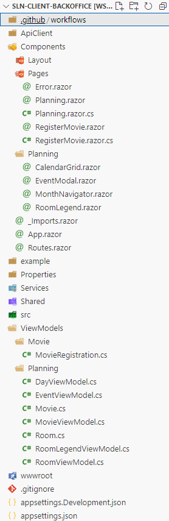
FR01 - Schedule a Movie
Description:
This functional requirement (FR) involves implementing a Planning page that enables Howestprime staff to schedule movie events.
Requirements:
- Schedule a movie event for a specific date and time.
- Assign the movie event to a designated room.
- The Howestprime manager requires planning capabilities on a monthly basis.
- The Howestprime manager needs to plan for the current year and the following year.
- Scheduling is limited to two available rooms.
- Each room offers two time slots: 15:00 and 19:00.
- Assigning a new movie event to an existing time slot will overwrite the existing event.
Technical Requirements:
- The Planning page must be implemented using Blazor with Server-Side Rendering.
- Incorporate at least three distinct Blazor components (e.g., timeslot, calendarDay, calendarEntry).
- Utilize separate code-behind pages.
- Responsiveness is not required.
- Adhere to the best practices demonstrated in the .NET Technology module.
- Include a suitable placeholder for error messages (not visible in the screenshot).
- Use the error messages provided by the web API.
- Employ view models.
Useful endpoints:
Look up the following endpoints in the openapi specification of the microservice movies:
- Loading all planned movies event per month:
- GET /api/movie-events/monthly?month={month}&year={year}
- Creating new movie event
- POST /api/movie-events
Start:
- A boilerplate is provided as a starting point.
- Example CSS files are provided; however, you are free to modify them as needed.
To avoid creating an extra endpoint, you are allowed to hard code the rooms.
- This is already done in the boilerplate, so you can start using the rooms right away.
Example Page:
The following image illustrates a possible design for the Planning page. You are more than welcome to modify the design, but the core functionality should remain consistent.

See the UI Flow section for more details on the page’s functionality.
Planning UI Flow
Definition of Done:
- The page is implemented using Blazor with Server-Side Rendering.
- The page incorporates at least three distinct Blazor components.
- The page is implemented with a code-behind page.
- The page includes a placeholder for error messages.
- The page adheres to the best practices demonstrated in the .NET Technology module.
- It is possible to schedule a movie event for a specific date and time in a specific room.
- It is possible to overwrite an existing movie event.
FR02 - Register a Movie
Description:
This functional requirement (FR) involves implementing a Register page that enables Howestprime staff to add new movies to the movie catalog.
Requirements:
- Add a new movie to the movie catalog with necessary details.
- Required movie information includes:
- Title
- Description
- Duration (in minutes)
- Release Year
- Genres(e.g., Action, Comedy, Drama)
- Age Rating (e.g., 16)
- Actors (e.g., Brad Pitt, Tom Cruise)
- Movie poster url
- Form validation for all required fields.
- Submit functionality to add the movie to the database.
- Confirmation message upon successful addition.
Technical Requirements:
- The Register page must be implemented using Blazor with Server-Side Rendering.
- Utilize separate code-behind pages.
- Responsiveness is not required.
- Adhere to the best practices demonstrated in the .NET Technology module.
- Include proper validation messages for form inputs.
- Include a suitable placeholder for error messages.
- Employ view models.
Useful endpoints:
Look up the following endpoints in the openapi specification of the microservice movies:
- Registering a new movie:
- POST /api/movie-catalog
Example Page:
The following image illustrates a possible design for the Register page. You are welcome to modify the design, but the core functionality should remain consistent.
See the UI Flow section for more details on the page’s functionality.
Register UI Flow
Definition of Done:
- The page is implemented using Blazor with Server-Side Rendering.
- The page incorporates at least three distinct Blazor components.
- The page is implemented with a code-behind page.
- Form validation is properly implemented for all required fields.
- The page includes appropriate error messages and confirmations.
- The page adheres to the best practices demonstrated in the .NET Technology module.
- It is possible to add a new movie with all required information to the catalog.
- The movie poster image can be displayed.
D04: Test Environment
Description:
The test environment simulates the production environment as closely as possible. The goal is to have a test version of all components (microservices, clients, infrastructure) running in a controlled environment. To build this environment, we will use Docker to containerize the components.
Goal:
Enable the execution of all user flows in the test environment to verify that components work together as expected before deploying to production.
Prerequisites:
- Docker installed
- Acceptance of the Test Environment assignment
Requirements:
- All components must be running in a containerized test environment.
- All user flows must be executable in the test environment.
- All environment variables must be passed through a .env file.
Start:
Begin with Part I of the test environment.
We will proceed to Part II after the microservice ticketing deliverable is completed.
Diagrams:
Folder structure:
By the end of the complete test environment implementation, the folder structure should look like this:
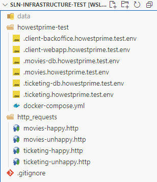
Details:
The test environment will be built incrementally rather than all at once.
You will start by incorporating the microservice movies and the client backoffice into the test environment. This is a logical first step because together they form the first complete user flow (register a movie).
The remaining components will be added after the microservice ticketing is completed.
- Part I: Build the test environment for the microservice movies and the client backoffice.
- Part II: Add the microservice ticketing and the client web application to the test environment.
Technical Reference:
Commands
Dockerize a dotnet solution and publish it to your local Docker registry:
dotnet publish --os linux /t:PublishContainer /p:PublishProfile=test
Build and publish a container to your local Docker registry:
#docker build -t <container_name>:latest -f <path_to_dockerfile> .
docker build -t howestprime-ticketing:latest -f config/ticketing-howestprime-dev/Dockerfile .
Start the test environment:
docker compose -f howestprime-test/docker-compose.yml up -d --remove-orphans
Shut down the test environment:
docker compose -f howestprime-test/docker-compose.yml down &
Check the logs of a specific container:
docker logs -f <container_name>
Useful Configuration Snippets
Health check configuration for PostgreSQL:
healthcheck:
test: pg_isready -U $$POSTGRES_USER -d $$POSTGRES_DB || exit 1
interval: 10s
timeout: 3s
retries: 5
start_period: 40s
Health check configuration for LavinMQ:
healthcheck:
test: ["CMD-SHELL", "lavinmqctl status | grep -q 'Uptime: ' || exit 1"]
interval: 10s
timeout: 3s
retries: 5
start_period: 40s
Health check configuration for MongoDB:
healthcheck:
test: ["CMD-SHELL", "mongosh --port 5000 --eval 'db.adminCommand(\"ping\")'"]
interval: 10s
timeout: 3s
retries: 5
start_period: 40s
Boot command used in MongoDB Docker sevice (this enables transactions):
command: >
bash -c "
mongod --port 5000 --replSet rs0 --bind_ip_all &
until mongosh --port 5000 --eval 'print(\"waited for connection\")'
do
sleep 1
done
mongosh --port 5000 --eval 'rs.initiate({
_id: \"rs0\",
members: [{ _id: 0, host: \"ticketing-db.howestprime.test:5000\" }]
})'
wait
"
Part I
In this part, you will construct a test environment for the microservice movies and the client backoffice applications. This environment will include not only the applications themselves but also essential infrastructure components such as the database, message broker, Docker network, and other dependencies required for proper operation.
Goal
The objective is to establish a fully functional test version of the microservice movies and the client backoffice operating in a controlled environment.
Prerequisites
- Docker installed and configured
- Completion of the microservice movies and client backoffice deliverables
- Note: Complete functionality is not required; implementing basic features such as movie registration is sufficient for testing purposes
Steps
Follow these sequential steps to construct the test environment for Part I:
Reference Resources:
- Refer to relevant labs from the following modules:
- Web Frameworks & Client Technologies
- System Architecture & Deployment
- Consult the environment dev deliverable for Docker Compose implementation examples
- Utilize the help documentation provided in the parent page of this deliverable
- Ensure accurate port mapping according to the specifications in the environment background information section
Step: Create a Docker Network for the Test Environment
Establish a Docker network with a unique subnet that avoids conflicts with existing Docker networks. Reference the port mapping details in the environment background information section.
Step: Implement the PostgreSQL Database in Docker Compose
- Configure the PostgreSQL database service in your Docker Compose file
- Implement an appropriate health check mechanism for the PostgreSQL service
- Create a comprehensive .env file containing all necessary PostgreSQL environment variables
- Define appropriate values for these environment variables
- Verification Steps:
- Launch the database using Docker Compose
- Connect to the database using a database client to confirm accessibility
- Assign a descriptive and meaningful name to the database
- Properly terminate all Docker containers after testing
Step: Implement the Message Broker in Docker Compose
- Configure the message broker service in your Docker Compose file
- Implement an effective health check mechanism for the message broker service
- Verification Steps:
- Launch the message broker using Docker Compose
- Access and verify functionality through the web interface
- Save the web interface URL as a browser bookmark for future reference
- Properly terminate all Docker containers after testing
Step: Containerize the Microservice Movies Application
- Enhance your .NET solution to support multiple environments (development, test, production)
- Utilize the .NET publish functionality to containerize the microservice application
- Add the howestprime movies container to your Docker Compose configuration
- Assign the precise service name: movies.howestprime.test
- Ensure the microservice depends on the PostgreSQL database and the message broker
- Verification Steps:
- Deploy the container using Docker Compose
- Use a Swagger UI or web API client to trigger the register a movie user flow
- Confirm that the data is stored in the PostgreSQL database
- Verify that the message broker has received the message
- Properly terminate all Docker containers after testing
Note: If everything went well, you should now have two rooms in the movies database. Use the guid values of these rooms in the client backoffice RoomService.
Step: Containerize the Client Backoffice Application
- Enhance your client backoffice to support multiple environments (development, test, production)
- Properties/PublishProfiles
- Utilize the .NET publish functionality to containerize the client backoffice application
- Push the container image to your local Docker registry
- Add the client backoffice container to your Docker Compose configuration
- Assign the precise service name: backoffice.howestprime.test
- Verification Steps:
- Deploy the container using Docker Compose
- Register a movie through the client backoffice
- Confirm that the data is stored in the PostgreSQL database
- Verify that the message broker has received the message
- Properly terminate all Docker containers after testing
Integration Test
- Run the test environment using Docker Compose
- Trigger the register a movie user flow
- Confirm that the data is stored in the PostgreSQL database
- Verify that the message broker has received the message
- Trigger the schedule a movie event user flow
- Confirm that the data is stored in the PostgreSQL database
- Properly terminate all Docker containers after testing
Definition of Done
- The test environment for the microservice movies and the client backoffice is built.
- The integration test has been executed successfully.
- The results are committed and pushed to your repository.
Part II
In this part, you will integrate the Microservice Ticketing and the Client Web Application into the test environment. Additionally, you will configure the MongoDB database required for the ticketing service.
Goal
The objective is to establish a comprehensive test environment for the complete Howestprime infrastructure by implementing the remaining components into the test environment repository.
Prerequisites
- Docker installed and configured
- Part I of the test environment successfully implemented
Implementation Steps
Follow these sequential steps to complete the test environment setup.
Step 1: Configure MongoDB Database in Docker Compose
- Integrate the MongoDB database service into your Docker Compose file.
- Include the required technical command parameters for the MongoDB service (refer to the technical reference on the parent page).
- Implement an appropriate health check configuration for the MongoDB service.
- Validation:
- Launch the containerized environment.
- Verify database functionality by connecting to MongoDB using a client application.
- Gracefully terminate the Docker containers.
Step 2: Containerize the Ticketing Microservice
- Develop a Dockerfile optimized for the ticketing microservice with Deno runtime support.
FROM denoland/deno:2.2.4 WORKDIR /app COPY . . RUN rm -rf node_modules && rm -rf data && deno cache src/Main/Main.ts CMD ["run", "--allow-env", "--allow-net", "--allow-read", "--allow-write", "--allow-run", "--allow-sys", "src/Main/Main.ts"] - Build the container image for the ticketing microservice.
- Register the image in your local Docker registry.
- Add the Ticketing Microservice configuration to the Docker Compose file.
- Configure service dependencies on both MongoDB and the message broker.
- Configure the test environment variables through a dedicated .env file referenced in the Docker Compose configuration.
- Validation:
- Deploy the updated environment using Docker Compose.
- Note: Comprehensive testing will occur during the final integration test.
Step 3: Integrate the Client Web Application
The client web application is a third-party application that is already fully implemented. You only need to integrate it into the test environment.
- Incorporate the Client Web Application into the Docker Compose configuration.
- Location of the docker image:
hcr.technet.howest.be/howestprime-client-webapp:latest
- Location of the docker image:
- Needed environment variables (use a .env file, replace PORT_NUMBER with the actual port number):
- VITE_APP_TICKETING_API_URL=http://localhost:PORT_NUMBER
- VITE_APP_MOVIES_BASE_API_URL=http://localhost:PORT_NUMBER
- Validation:
- Proceed to the integration test described below.
Integration Testing Procedure
- Initialize the complete test environment using Docker Compose.
- Execute the movie event booking workflow through the client web application:
- Confirm data persistence in the PostgreSQL database.
- Verify ticket information storage in the MongoDB database.
- Validate that the message broker processes the ticket released message correctly.
- Complete the entire order wizard process.
- Shut down the containerized environment.
Definition of Done
- A fully functional test environment for the Howestprime infrastructure has been established.
- The integration test has been successfully executed with all validations passing.
- All changes have been committed and pushed to the repository.
D05: Ticketing Microservice
Description:
The ticketing microservice manages the ticket ordering flow after a booking is opened in the movies microservice. It stores movie snapshots, creates open orders from incoming bookings, enriches orders with customer information, processes payments, and uses application-layer policies to move orders to the paid, released, or cancelled state. The microservice also publishes payment and ticket events so the rest of the Howestprime system stays in sync.
Details
| Key | Description |
|---|---|
| Summary | Ticketing order process, including customer enrichment, payments, and policy-driven follow-up actions. |
| Modules involved | Framework design & client technologies, System architecture & Deployment |
| Sprint | 03 |
| Concepts | Clean Architecture, Domain-Driven Design, Policies, Testing, Microservices, Events |
| Technologies | Deno, Typescript , Docker, LavinMQ, OpenAPI, AsyncAPI, MongoDb, Documentstores |
| Repository | githublocation//howestprime-ticketing |
Starting point
The starting point for this deliverable is building the first functional requirement [FR01];
Used concepts
- Clean Architecture: Ensures separation of concerns and maintainability by structuring the system into well-defined layers (infrastructure, application, domain).
- Domain-Driven Design (DDD): Focuses on creating a rich domain model in the domain layer that encapsulates the rules for movies, orders, tickets, and payments.
- Application Policies: The application layer contains policy classes that react to domain events and trigger follow-up use cases. In ticketing, policies are used to mark orders as paid, release tickets, and cancel orders.
- Testing: Comprehensive unit testing, using Deno’s built-in test runner, is used to verify the domain layer, application layer, and the policy chain.
- Async communication / Events: The Howestprime Ticketing microservices communicate with each other using events through a message broker.
Prerequisites
- Deliverable D01 is completed.
- Deno is installed.
- Git is installed.
- The repository for this deliverable is cloned.
Functional requirements (FR)
- [FR01]: be able to save a registered movie through the event MovieRegistered.
- [FR02]: be able to create an open order through the event BookingOpened.
- [FR03]: be able to add customer information and accept the terms for an order through a web api endpoint.
- [FR04]: be able to retrieve an order by booking id through a web api endpoint.
- [FR05]: be able to pay an order through a web api endpoint and publish a payment success or payment failed event.
- [FR06]: be able to mark an order as paid after a successful payment by using an application-layer policy.
- [FR07]: be able to release the tickets after an order is paid, publish a TicketsReleased event, and move the order to the ticketReleased state.
- [FR08]: (optional) be able to cancel an order after a payment failed event by using an application-layer policy.
Non functional requirements (NFR)
- [NFR01]: A basic CI/CD pipeline is set up for the microservice.
- [NFR02]: The microservice is built using Clean Architecture.
- [NFR03]: The domain layer and application layer, including policies, are 100% covered by unit tests.
- [NFR04]: You filled in the form at the end of this document.
Entities and objects
Aggregates
The following describes the aggregate roots, child entities, and important value objects in the microservice ticketing.
The behavior of the entities is not described here, only their properties. Refer to the use cases and functional requirements to understand the behavior of the entities.
Movie
Represents the movie snapshot stored inside the ticketing context.
| Property | Description |
|---|---|
| Id (MovieId) | Unique identifier received from the movies microservice |
| Title (MovieTitle) | Title of the movie |
| Duration (MovieDuration) | Duration of the movie in minutes |
| Genres (List<Genre>) | List of genres for the movie |
| AgeRating (AgeRating) | Age rating used in the ticketing context |
| PosterUrl (PosterUrl) | URL to the poster image |
| Price (Money) | Calculated ticket base price derived from the movie duration |
Order
Represents a customer order.
| Property | Description |
|---|---|
| Id (OrderId) | Unique identifier |
| BookingId (BookingId) | Id of the booking received from the movies microservice |
| Customer (Optional<Customer>) | Customer details, optional until the order is enriched |
| Tickets (List<Ticket>) | List of tickets in the order |
| Price (Money) | Total price of the order |
| Status (OrderStatus) | open, paid, ticketReleased, cancelled |
| AgreeToTerms (boolean) | Indicates whether the customer accepted the terms and conditions |
Ticket
Represents a generated ticket inside an order.
| Property | Description |
|---|---|
| Id (TicketId) | Unique identifier |
| MovieInfo (MovieInfo) | Immutable movie snapshot associated with the ticket |
| Seat (Seat) | Seat assignment including seat number and visitor type |
| Room (string) | Room where the screening takes place |
| Price (Money) | Price of the ticket |
| Showtime (Date) | Date and time of the screening |
MovieInfo
Represents the immutable movie snapshot stored inside a ticket.
| Property | Description |
|---|---|
| Id (MovieId) | Movie id associated with the ticket |
| Title (MovieTitle) | Title of the movie |
| Duration (MovieDuration) | Duration of the movie in minutes |
| Genres (List<Genre>) | Genres stored in the ticket snapshot |
| PosterUrl (PosterUrl) | URL to the movie poster |
| AgeRating (AgeRating) | Age rating stored in the ticket snapshot |
| Price (Money) | Base movie price used during ticket pricing |
Seat
Represents the seat assignment stored inside a ticket.
| Property | Description |
|---|---|
| SeatNumber (int) | Number of the reserved seat |
| VisitorType (‘standard’ | ‘discounted’) | standard or discounted |
Customer
Represents the customer attached to an order.
| Property | Description |
|---|---|
| Salutation (CustomerSalutation) | Salutation of the customer (e.g. “Mr.”, “Ms.”, “Mx.”) |
| Firstname (CustomerFirstName) | First name of the customer |
| Lastname (CustomerLastName) | Last name of the customer |
| Email (CustomerEmail) | Email address of the customer |
Payment
Represents a payment associated with an order.
| Property | Description |
|---|---|
| Id (PaymentId) | Unique identifier |
| ExternalId (ExternalId) | The external id of the payment provider |
| PaymentMethod (PaymentMethod) | The payment method (e.g. “Credit Card”) |
| CardNumber (CardNumber) | The card number used for the payment |
| ExpiryDate (ExpiryDate) | The expiry date of the card |
| CVV (CVV) | The CVV code of the card |
| OrderId (OrderId) | The id of the associated order |
| BookingId (BookingId) | The id of the associated booking |
| Amount (PaymentAmount) | The total amount of the payment |
| Status (PaymentStatus) | pending, success, failed |
The failure reason is not stored as a property on the payment aggregate. It is published as part of the PaymentFailed event payload.
Business rules
Movies
| Object | Business Rules |
|---|---|
| Movie |
|
| MovieDuration |
|
| MovieTitle |
|
| Genre |
|
| PosterUrl |
|
| AgeRating |
|
Orders
| Object | Business Rules |
|---|---|
| Order |
|
| Ticket |
|
| OrderStatus |
|
| Seat |
|
| CustomerSalutation |
|
| CustomerFirstName |
|
| CustomerLastName |
|
| CustomerEmail |
|
| BookingId |
|
Payments
| Object | Business Rules |
|---|---|
| Payment |
|
| PaymentStatus |
|
| ExternalId |
|
| PaymentMethod |
|
| CardNumber |
|
| ExpiryDate |
|
| CVV |
|
| PaymentAmount |
|
| FailureReason |
|
Shared
| Object | Business Rules |
|---|---|
| Money |
|
Data
OrderData
Represents an order in a simplified form for the query functionality.
| Property | Description |
|---|---|
| Id (uuid) | Unique identifier |
| BookingId (uuid) | Id of the booking |
| Status (string) | open, paid, ticketReleased, cancelled |
| Price (number) | Total price of the order |
| AgreeToTerms (boolean) | Indicates whether the terms were accepted |
| Customer (CustomerData or null) | Customer details |
| Tickets (List<TicketData>) | List of tickets in the order |
TicketData
Represents a ticket in a simplified form for the query functionality.
| Property | Description |
|---|---|
| TicketId (uuid) | Unique identifier |
| SeatNumber (number) | Reserved seat number |
| VisitorType (string) | standard or discounted |
| Price (number) | Price of the ticket |
| MovieId (uuid) | Movie id associated with the ticket |
| Room (string) | Room where the ticket is valid |
| Showtime (datetime) | Date and time of the screening |
CustomerData
Represents customer information returned by the order query.
| Property | Description |
|---|---|
| Salutation (string) | Salutation of the customer |
| Firstname (string) | First name of the customer |
| Lastname (string) | Last name of the customer |
| Email (string) | Email of the customer |
Application layer objects
Policy
Represents an application-layer reaction to a domain event.
| Object | Description |
|---|---|
| domainEventPolicies | Mapping from event FQDN to the policy classes that must react to that event |
| WhenPaymentSucceededThenMarkOrderAsPaid | Reacts to a successful payment event and executes the MarkOrderAsPaid use case |
| WhenOrderPaidThenReleaseTickets | Reacts to the internal OrderPaid event and executes the ReleaseTickets use case |
| WhenPaymentFailedThenCancelOrder | Reacts to a failed payment event and executes the CancelOrder use case |
Policies live in the application layer and are wired at startup through the domain event registry and the policy domain event listener.
Enums
Order Status
- OrderStatus:
- Open: A new order is created from a booking.
- Paid: The order is successfully marked as paid.
- ticketReleased: The tickets have been released and published.
- Cancelled: The order has been cancelled after a failed payment.
Payment Status
- PaymentStatus:
- Pending: The payment was created and is being processed.
- Success: The payment completed successfully.
- Failed: The payment failed.
Visitor Type
- VisitorType:
- Standard: Standard ticket price.
- Discounted: Discounted ticket price.
Payment Method
- PaymentMethod:
- Credit Card
- Bank Transfer
Events
Incoming events
-
MovieRegistered:
- MovieId: Id of the movie.
- Title: Title of the movie.
- ReleaseYear: Release year of the movie.
- Duration: Duration in minutes.
- Genres: List of genres.
- Actors: List of actors.
- AgeRating: Age rating.
- PosterUrl: URL to the poster image.
-
BookingOpened:
- BookingId: Id of the booking.
- MovieId: Id of the movie.
- Room: Room where the screening takes place.
- Showtime: Date and time of the screening.
- StandardVisitors: Number of standard visitors.
- DiscountedVisitors: Number of discounted visitors.
- SeatNumbers: List of reserved seat numbers.
Outgoing events
-
PaymentSuccess:
- PaymentId: Id of the payment.
- OrderId: Id of the order.
- BookingId: Id of the booking.
-
PaymentFailed:
- PaymentId: Id of the payment.
- OrderId: Id of the order.
- BookingId: Id of the booking.
- Reason: Reason why the payment failed.
-
TicketsReleased:
- OrderId: Id of the order.
- Customer:
- Salutation: Salutation of the customer.
- Firstname: First name of the customer.
- Lastname: Last name of the customer.
- Email: Email address of the customer.
The customer object can be
nullwhen no customer information is attached.
- Tickets: List of released tickets.
- TicketId: Id of the ticket.
- MovieId: Id of the movie.
- Room: Room of the screening.
- SeatNumber: Reserved seat number.
- VisitorType: standard or discounted.
- Price: Price of the ticket.
- Showtime: Date and time of the screening.
Internal ticketing event
- OrderPaid:
- OrderId: Id of the order.
- BookingId: Id of the booking.
- Used by the application layer to trigger the ticket release policy.
FR01: Save a registered movie
TL;DR
Implement a listener in the Ticketing Microservice to process the MovieRegistered event from the Movies Microservice and save the movie snapshot in the Ticketing database for pricing and ticket generation.
Description
When a new movie is registered in the Movies Microservice, the Ticketing Microservice must listen for the MovieRegistered event and store the movie details it needs in its own database. This ensures the ticketing system has the movie information required to create orders, calculate ticket prices, and publish released ticket information later in the flow.
The event contract contains more data than the ticketing domain stores. The current ticketing implementation maps the relevant fields to the Movie aggregate and its supporting value objects: MovieTitle, MovieDuration, Genre, PosterUrl, and AgeRating. The movie price is not received from the event payload. It is derived inside the aggregate as Money based on the movie duration.
Consumers
The consumer of this FR is the Ticketing Microservice. It listens to the MovieRegistered event and saves the movie snapshot in the ticketing database.
Building blocks:
The following building blocks are involved in this functional requirement:
- Use case: SaveMovie
- Aggregate: Movie
- Value objects: MovieTitle, MovieDuration, Genre, PosterUrl, AgeRating, Money
- Repository: MovieRepository
- Listen to events: MovieRegistered
- Subscriber: SaveMovieController
- Message Broker:
- Exchange: howestprime
- Routing Key: howestprime.movies.movie.movieregistered
Details
- Implement the use case SaveMovie.
- Document the listener in the AsyncAPI specification.
- Refer to the use case for the required input and output data.
- Implement the listener and trigger the use case to store the movie snapshot in the database.
Diagrams & user flows
The following diagrams are relevant for this functional requirement:
Use case
| Use case | Save a registered movie |
|---|---|
| Input | Movie ID Title Duration Genres Age Rating Poster Url |
| Output | N/A |
| Description | Save the movie snapshot received from the MovieRegistered event as a Movie aggregate in the ticketing database. |
| Primary Actor | MovieRegisteredListener |
| Secondary Actors | Ticketing database |
| Steps | 1. Receive the MovieRegistered event. 2. Validate the payload. 3. Map the event payload to the SaveMovie input. 4. Create the Movie aggregate with validated MovieTitle, MovieDuration, Genre, PosterUrl, and AgeRating value objects. 5. Derive the movie Price (Money) from the duration. 6. Persist the movie through the MovieRepository. |
| Pre-conditions | - Movie id, title, duration, genres, age rating, and poster url must be valid according to the aggregate and value object rules. - The genres list must not be empty. |
| Post-conditions | - The movie aggregate is successfully saved in the database. - The derived movie price is available for later order and ticket pricing. - The Ticketing Microservice can use the movie snapshot when a booking is opened. |
Integration test
- Bootstrap the application and configure it to listen for the MovieRegistered event.
- Use the AsyncAPI UI to send a MovieRegistered event with valid movie details.
- Verify that the movie is successfully persisted in the database.
- Confirm that the stored movie details match the data the ticketing service uses in its own bounded context.
CI/CD Pipeline for the Microservice Ticketing
Description
In this exercise, you will build a basic CI/CD pipeline for the ticketing microservice using GitHub Actions.
The pipeline should include the following steps:
- QA: Run the unit tests, and fail if any tests fail
- Code Coverage: Ensure adequate test coverage of your code
In future deliverables, we will extend the pipeline with additional steps like build and deploy.
Prerequisites
- Ensure the domain and application layers, including the policy classes, are covered by unit tests
Requirements
Your CI pipeline should:
-
Quality Assurance:
- Trigger on pushes to the main branch and pull requests
- Run on the latest Ubuntu environment
- Configure Deno runtime
- Execute unit tests with appropriate reporting, including policy tests
-
Code Coverage:
- Generate code coverage reports
- Ensure coverage is above a minimum threshold (95%)
- Check coverage threshold and fail if it’s below requirement
Both steps should run in parallel.
Implementation Steps
- Create the GitHub workflow file using the structure and commands provided above
- Ensure your test files are properly structured
- Commit and push your workflow file to GitHub
Command-Line Tools and Scripts
Here are all the key commands and scripts you’ll need:
Setting Up Your Workflow File
Create a file at .github/workflows/ci.yml with the following structure:
name: CI
on:
push:
branches: [ main ]
pull_request:
branches: [ main ]
jobs:
testing:
name: Testing
runs-on: ubuntu-latest
permissions:
contents: read
steps:
# Your QA steps will go here
code-coverage:
name: Code Coverage
runs-on: ubuntu-latest
permissions:
contents: read
steps:
# Your coverage steps will go here
Some possible Testing Commands
- name: Checkout code
uses: actions/checkout@v4
- name: Set up Deno
uses: denoland/setup-deno@v2
with:
deno-version: v2.x
- name: Install dependencies
run: deno install
- name: Deno check
run: deno check src/
- name: Deno lint
run: deno lint src
- name: Run unit tests
run: deno test --allow-all
Some possible Coverage Commands
- name: Checkout code
uses: actions/checkout@v4
- name: Set up Deno
uses: denoland/setup-deno@v2
with:
deno-version: v2.x
- name: Install dependencies
run: deno install
- name: Run tests with coverage
run: deno test --coverage=coverage --allow-all
- name: Check coverage threshold
run: |
coverage_report="$(deno coverage --exclude=tests coverage)"
echo "$coverage_report"
COVERAGE="$(echo "$coverage_report" | grep "All files" | awk -F'|' '{print $3}' | sed 's/\x1B\[[0-9;]*m//g' | tr -d '[:space:]')"
COVERAGE_INT="${COVERAGE%.*}"
if [[ $COVERAGE_INT -lt 50 ]]; then
echo "Code coverage is below threshold of 50%"
exit 1
fi
echo "Code coverage meets threshold of 50%"
Testing Your Pipeline
To verify your pipeline works correctly:
- Push your changes to the main branch
- Check the Actions tab in your GitHub repository
- Verify that all jobs complete successfully
- Check the code coverage output in the job logs
FR02: Create an order from an opened booking
TL;DR
Implement a listener in the Ticketing Microservice to process the BookingOpened event from the Movies Microservice and create an open order with generated tickets in the Ticketing database.
Description
When a booking is opened in the Movies Microservice, the Ticketing Microservice must listen for the BookingOpened event and immediately create an open order. The order is built from the booking information and the stored Movie aggregate that was already saved through FR01.
This means the current ticketing service does not persist a separate booking aggregate. Instead, the BookingOpened event is the trigger that creates the Order aggregate, builds the immutable MovieInfo snapshot, generates the Ticket child entities with Seat value objects, and calculates the total price.
The incoming event contains:
- Booking ID: Unique identifier for the booking.
- Movie ID: The movie associated with the booking.
- Room: The room name where the movie will be shown.
- Showtime: The scheduled start time of the movie.
- Number of Standard Visitors: Count of standard ticket holders.
- Number of Discounted Visitors: Count of discounted ticket holders.
- List of Seat Numbers: Reserved seat numbers.
Consumers
The consumer of this functional requirement is the Ticketing Microservice. It listens to the BookingOpened event from the Movies Microservice to create an order in the ticketing database.
Building blocks:
The following building blocks are involved in this functional requirement:
- Use case: CreateOrderFromBooking
- Aggregate: Order
- Child entity: Ticket
- Supporting aggregate / value objects: Movie, MovieInfo, Seat
- Repository: OrderRepository, MovieRepository
- Event: BookingOpened
- Event listener: CreateOrderFromBookingController
- Message Broker:
- Exchange: howestprime
- Routing Key: howestprime.movies.movieevent.bookingopened
Details
- Implement the use case CreateOrderFromBooking.
- Document the listener in the AsyncAPI specification.
- See the use case for the required input and output data.
- Implement the listener and trigger the use case.
Diagrams & user flows
The following diagrams are relevant for this functional requirement:
Use case
| Use case | Create an order from an opened booking |
|---|---|
| Input | Booking ID Movie ID Room Showtime Number of Standard Visitors Number of Discounted Visitors List of Seat Numbers |
| Output | Order ID |
| Description | Create a new open Order aggregate from the BookingOpened event, generate the tickets, and calculate the total price. |
| Primary Actor | BookingOpenedListener |
| Secondary Actors | Ticketing database |
| Steps | 1. Receive the BookingOpened event. 2. Validate the input data. 3. Retrieve the stored Movie aggregate by movie id. 4. Build the immutable MovieInfo value object for the order. 5. Create Seat value objects for the reserved seats. 6. Create a new Order aggregate and generate the Ticket child entities. 7. Persist the order through the OrderRepository. 8. Output the order id. |
| Pre-conditions | - Booking ID, Movie ID, Room, Showtime, and Seat Numbers must be valid. - The number of seat numbers must match the total amount of visitors. - The movie aggregate must already exist in the ticketing database. |
| Post-conditions | - The open order is successfully saved in the database. - The Ticketing Microservice is ready for customer enrichment and payment. |
Integration test
- Bootstrap the application and the corresponding containers.
- First send a MovieRegistered event so the required movie snapshot exists.
- Use the AsyncAPI UI to send a BookingOpened event.
- Verify that the order is successfully persisted in the database.
- Verify that the generated tickets and calculated total price match the booking data.
Definition of Done
- The application and domain layer are 100% covered by unit tests.
- The listener is well documented in the AsyncAPI specification.
- The listener is implemented and triggers the use case CreateOrderFromBooking.
- The integration test is successful.
FR03: Add customer information to an order
TL;DR
Implement the Web API endpoint to allow clients to enrich an existing order with customer information and accept the terms and conditions.
Description
Once an open order has been created from FR02, the client web app must be able to add the customer information to that order. The current ticketing implementation exposes this through POST /api/orders/{orderId}/customer.
The request contains:
- Salutation
- First name
- Last name
- AgreeToTerms
This step enriches the order with the customer details that are later used in the released ticket payload. It also records that the customer accepted the terms and conditions, which is required before the order can move to the paid state.
In the current domain model, the request data is mapped to the Customer value object and attached to the Order aggregate.
Consumers
The consumer of this functional requirement is the client web app. The client uses this functionality to enrich an existing order with customer details and accept the terms and conditions.
Building blocks:
The following building blocks are involved in this functional requirement:
- Use case: AddCustomerToOrder
- Aggregate: Order
- Value object: Customer
- Repository: OrderRepository
- Domain Event: CustomerInfoAdded
- Web API endpoint: POST /api/orders/{orderId}/customer
Details
- Implement the use case AddCustomerToOrder.
- Document the endpoint in the OpenAPI specification.
- See the use case for the required input and output data.
- Implement the Web API endpoint and trigger the use case.
Diagrams & user flows
The following diagrams are relevant for this functional requirement:
Use case
| Use case | Add customer information to an order |
|---|---|
| Input | Order ID Salutation First name Last name AgreeToTerms |
| Output | 201 Created with a Location header pointing to /api/orders/{orderId} |
| Description | Add customer information to an existing open order and persist the accepted terms flag. |
| Primary Actor | Web API endpoint |
| Secondary Actors | Ticketing database |
| Steps | 1. Validate the order id and request body. 2. Retrieve the associated Order aggregate using the order id. 3. Accept the terms when agreeToTerms is true.4. Create the Customer value object from the request data. 5. Add the customer information to the Order aggregate. 6. Persist the updated order. 7. Return 201 Created with a Location header pointing to /api/orders/{orderId}. |
| Pre-conditions | - Order ID corresponds to an existing open order. - Customer details must satisfy the Customer value object rules. - The terms must be accepted before customer information can be added. |
| Post-conditions | - The order contains the customer information. - The order is ready for payment processing. - The client receives 201 Created and the Location header for the updated order resource. |
Integration test
- Bootstrap the application and the corresponding containers.
- Use the OpenAPI UI to send a valid
POST /api/orders/{orderId}/customerrequest. - Verify that the endpoint returns
201 Created. - Verify that the response contains a
Locationheader pointing to/api/orders/{orderId}. - Verify that the order is updated with the customer information and
agreeToTerms = true. - Verify through
GET /api/orders/{bookingId}that the customer and agree-to-terms flag are visible in the response.
Definition of Done
- The application and domain layer are 100% covered by unit tests.
- The new endpoint is well documented in the OpenAPI specification.
- The endpoint is implemented and triggers the use case AddCustomerToOrder.
- The integration test is successful.
FR04: Get an order by booking id
TL;DR
Implement a Web API endpoint to retrieve the details of an existing order by its booking id. This allows clients to access the generated order, customer details, tickets, and total price throughout the booking flow.
Description
The Ticketing Microservice manages orders that are created from BookingOpened events. This feature enables clients to query the system for the details of an order by using the booking id that originated in the Movies Microservice.
The response includes:
- Order ID: Unique identifier of the order.
- Booking ID: Reference to the associated booking.
- Status: Current order status.
- Price: Total price of the order.
- AgreeToTerms: Whether the customer accepted the terms.
- Customer details: Name, email, and salutation of the customer, or
null. - Tickets: List of tickets included in the order.
This functionality is exposed through GET /api/orders/{bookingId}.
Consumers
The consumer of this functional requirement is the client web app. The client uses this functionality to retrieve the details of an existing order by its booking id during the booking and payment flow.
Building blocks:
The following building blocks are involved in this functional requirement:
- Use case: GetOrderByBookingId
- DTO: OrderData
- Query: MongoDbGetOrderByBookingIdQuery
- Web API endpoint: GET /api/orders/{bookingId}
Details
- Implement the use case GetOrderByBookingId.
- Document the endpoint in the OpenAPI specification.
- Refer to the use case for the expected input parameters and output structure.
- Implement the Web API endpoint and trigger the use case.
Diagrams & user flows
The following diagrams are relevant for this functional requirement:
Use case
| Use case | Get an order by booking id |
|---|---|
| Input | Booking ID |
| Output | Order details, including Order ID, Booking ID, Status, Customer details, Tickets, and Price |
| Description | Retrieve the details of an existing order using its booking id. |
| Primary Actor | Web API endpoint |
| Secondary Actors | Ticketing database |
| Steps | 1. Validate the booking id. 2. If the booking id format is invalid, return a 400 Bad Request response.3. Query the database for the order using the booking id. 4. If the order exists, return its details. 5. If the order does not exist, return a 404 Order not found response. |
| Pre-conditions | - The provided booking id must be a valid UUID. - The booking id corresponds to an existing order in the database. |
| Post-conditions | - The order details are retrieved and returned in JSON format. - The client is informed if the order does not exist. |
Integration test
- Bootstrap the application and the corresponding containers.
- Use the OpenAPI UI to send a valid
GET /api/orders/{bookingId}request with an existing booking id. - Verify that the endpoint returns the correct order details.
- Send a request with an invalid booking id format and verify that the response is a
400 Bad Requesterror. - Send a request with a valid but non-existent booking id and verify that the response is a
404 Order not founderror. - Ensure that all relevant fields in the order response are correctly retrieved and formatted.
Definition of Done
- The application and domain layer are 100% covered by unit tests.
- The new endpoint is well documented in the OpenAPI specification.
- The endpoint is implemented and triggers the use case GetOrderByBookingId.
- The integration test is successful.
FR05: Pay an order
TL;DR
Implement a Web API endpoint to process the payment for an order. The endpoint creates the payment, processes it through the payment gateway, stores the final payment status, and publishes a payment outcome event.
Description
The Ticketing Microservice is responsible for processing payments for orders. This feature enables clients to pay for an order by providing valid payment details through the POST /api/orders/{orderId}/payments endpoint.
The payment request includes:
- ExternalId: Identifier used by the payment provider.
- PaymentMethod: The payment method (e.g. Credit Card or Bank Transfer).
- Payment Details: Card number, expiry date, and CVV.
- BookingId: Reference to the booking that originated the order.
- Amount: The amount that should be charged.
During this step, the ticketing service creates a Payment aggregate, stores it with status pending, calls the PaymentService, and then updates the payment to success or failed. The payment result is published as an event. Follow-up order changes are not handled directly inside this use case; they are performed by application-layer policies in the next functional requirements.
Inside the ticketing domain, the payment flow raises internal domain events. A successful payment raises PaymentSucceeded and a failed payment raises PaymentFailed. For external integration through the message broker, the current ticketing service publishes the async messages PaymentSuccess and PaymentFailed.
The request data is mapped to the Payment aggregate through the value objects ExternalId, PaymentMethod, CardNumber, ExpiryDate, CVV, BookingId, OrderId, and PaymentAmount.
The outgoing messages contain:
- PaymentSuccess:
paymentId,orderId,bookingId - PaymentFailed:
paymentId,orderId,bookingId,reason
Consumers
The consumer of this functional requirement is the client web app. The client uses this functionality to process the payment for an order by providing payment details.
Building blocks:
The following building blocks are involved in this functional requirement:
- Use case: PayOrder
- Aggregate: Payment
- Value objects: ExternalId, PaymentMethod, CardNumber, ExpiryDate, CVV, BookingId, OrderId, PaymentAmount, PaymentStatus
- Repository: PaymentRepository
- Gateway: PaymentService
- Domain Events: PaymentSucceeded, PaymentFailed
- Async Messages: PaymentSuccess, PaymentFailed
- Message Broker:
- Exchange: howestprime
- Routing Key: howestprime.ticketing.payment.paymentsuccess (*)
- Routing Key: howestprime.ticketing.payment.paymentfailed
- Web API endpoint: POST /api/orders/{orderId}/payments
(*) The success routing key uses paymentsuccess instead of the more explicit paymentsucceeded. That naming was already consumed by another service, so it was kept unchanged to avoid breaking the existing integration. The domain event class is still named PaymentSucceeded, but its FQDN and the external routing key both use paymentsuccess.
Details
- Implement the use case PayOrder.
- Document the endpoint in the OpenAPI specification.
- Refer to the use case for the required input parameters and output structure.
- Implement the Web API endpoint and trigger the use case.
- Publish a PaymentSuccess or PaymentFailed async message based on the outcome of the payment.
- Return
201 Createdwith aLocationheader pointing to/api/orders/{orderId}/payments/{paymentId}and a JSON body containing the createdpaymentId. - Keep the order follow-up logic in application-layer policies.
Diagrams & user flows
The following diagrams are relevant for this functional requirement:
Use case
| Use case | Pay an order |
|---|---|
| Input | Order ID External ID Payment Method Card Number Expiry Date CVV Booking ID Amount |
| Output | 201 Created, Location header, and a JSON body containing the created paymentId |
| Description | Create and process a payment for a specific order, raise the internal payment domain event, and publish the payment outcome async message. |
| Primary Actor | Web API endpoint |
| Secondary Actors | Ticketing database, Payment gateway, Event Bus |
| Steps | 1. Validate the request body and order id. 2. Create the Payment aggregate using ExternalId, PaymentMethod, CardNumber, ExpiryDate, CVV, OrderId, BookingId, and PaymentAmount, with status pending.3. Persist the payment. 4. Call the PaymentService. 5. Mark the payment as success or failed.6. Persist the updated payment. 7. Raise the internal PaymentSucceeded or PaymentFailed domain event. 8. Publish the external PaymentSuccess or PaymentFailed async message. 9. Return 201 Created, a Location header pointing to /api/orders/{orderId}/payments/{paymentId}, and a JSON body containing paymentId. |
| Pre-conditions | - The provided ids and payment details must satisfy their aggregate and value object rules. - The amount must be greater than zero. - The order and booking ids must come from the existing ticketing flow. |
| Post-conditions | - The payment is stored with a final status of success or failed.- The internal PaymentSucceeded or PaymentFailed domain event is raised. - The external PaymentSuccess or PaymentFailed async message is published with the correct payload. - The client receives 201 Created, the Location header, and the created paymentId. |
Integration test
- Bootstrap the application and the corresponding containers.
- Use the OpenAPI UI to send a valid
POST /api/orders/{orderId}/paymentsrequest with payment details and amount. - Verify that the endpoint returns
201 Created, aLocationheader pointing to/api/orders/{orderId}/payments/{paymentId}, and a JSON body containingpaymentId. - Verify that the payment is persisted in the database with the expected status.
- Verify that the correct payment outcome message is published on exchange
howestprime. - Verify that the published routing key is
howestprime.ticketing.payment.paymentsuccessorhowestprime.ticketing.payment.paymentfailed, depending on the outcome. - Verify that the published payload contains the expected fields:
PaymentSuccess:paymentId,orderId,bookingIdPaymentFailed:paymentId,orderId,bookingId,reason
- Verify that the policy flow updates the related order state after the event is published.
Definition of Done
- The application and domain layer are 100% covered by unit tests.
- The new endpoint is well documented in the OpenAPI specification.
- The endpoint is implemented and triggers the use case PayOrder.
- The integration test is successful.
- The correct payment outcome event is published.
FR06: Mark the order as paid after a successful payment
TL;DR
Implement an application-layer policy that reacts to the internal PaymentSucceeded domain event and marks the related order as paid.
Description
This functional requirement introduces the new policy concept in the ticketing application layer.
A policy is an application-layer class that reacts to a domain event and executes follow-up use cases. Policies do not expose their own HTTP or AMQP endpoint. Instead, they are registered in the application layer through the domainEventPolicies mapping and are executed by the policy event listener with a fresh dependency scope.
In this functional requirement, the policy WhenPaymentSucceededThenMarkOrderAsPaid reacts to the internal PaymentSucceeded domain event and executes the MarkOrderAsPaid use case. This changes the Order aggregate status from open to paid and emits the internal OrderPaid event.
Consumers
The consumer of this functional requirement is the Ticketing Microservice itself. The application layer reacts to the internal PaymentSucceeded domain event and continues the internal order flow.
Building blocks:
The following building blocks are involved in this functional requirement:
- Policy: WhenPaymentSucceededThenMarkOrderAsPaid
- Use case: MarkOrderAsPaid
- Aggregate: Order
- Domain Events: PaymentSucceeded, OrderPaid
- Policy Mapping: domainEventPolicies
Details
- Implement the use case MarkOrderAsPaid.
- Implement the policy WhenPaymentSucceededThenMarkOrderAsPaid.
- Register the policy in the application-layer policy mapping.
- Document that the policy reacts to the internal PaymentSucceeded domain event and updates the order status to
paid.
Diagrams & user flows
The following diagrams are relevant for this functional requirement:
Use case
| Use case | Mark an order as paid |
|---|---|
| Input | Order ID |
| Output | None, followed by the internal OrderPaid event |
| Description | Mark an open Order aggregate as paid after the internal PaymentSucceeded domain event has been received. |
| Primary Actor | Application policy |
| Secondary Actors | Ticketing database |
| Steps | 1. The policy receives the internal PaymentSucceeded domain event. 2. The policy resolves the MarkOrderAsPaid use case. 3. The use case retrieves the related Order aggregate. 4. The order is marked as paid.5. The updated order is persisted. 6. The internal OrderPaid event is emitted. |
| Pre-conditions | - The internal PaymentSucceeded domain event is received. - The related order exists. - The order is still open.- The terms and conditions were accepted before the payment flow started. |
| Post-conditions | - The order status becomes paid.- The internal OrderPaid event is emitted for the next policy in the chain. |
Integration test
- Bootstrap the application and the corresponding containers.
- Create an open order and enrich it with customer information and accepted terms.
- Trigger a successful payment through the payment endpoint.
- Verify that the policy marks the order as
paid. - Verify that the internal OrderPaid event is produced and the next policy in the chain can continue.
Definition of Done
- The application and domain layer are 100% covered by unit tests.
- The policy is documented in the ticketing deliverable.
- The policy is implemented and registered in the application-layer policy mapping.
- The integration test is successful.
FR07: Release tickets when an order is paid
TL;DR
Implement an application-layer policy that reacts to the internal OrderPaid event, releases the tickets, and publishes the TicketsReleased event.
Description
The Ticketing Microservice is responsible for releasing tickets after an order is paid. In the current implementation this does not happen directly when the payment succeeds. Instead, the application layer first marks the order as paid, emits the internal OrderPaid event, and then a second policy handles the release step.
This functional requirement is implemented by the policy WhenOrderPaidThenReleaseTickets and the use case ReleaseTickets.
When the policy executes:
- The related Order aggregate is loaded.
- The order releases its Ticket child entities.
- The order status moves from
paidtoticketReleased. - A TicketsReleased event is published with the released ticket data and optional customer information.
Consumers
The consumer of this functional requirement is the customer’s mobile app. The app stores the released tickets after receiving the TicketsReleased event. The microservice ticketing handles the release process and publishes the event.
Building blocks:
The following building blocks are involved in this functional requirement:
- Policy: WhenOrderPaidThenReleaseTickets
- Use case: ReleaseTickets
- Aggregate: Order
- Child entity / value object data: Ticket, Customer
- Domain Events: OrderPaid, TicketsReleased
- Event Bus: For publishing the TicketsReleased event
Details
- Implement the use case ReleaseTickets.
- Implement the policy WhenOrderPaidThenReleaseTickets.
- Document the TicketsReleased event in the AsyncAPI specification.
- Ensure the policy is triggered after the order is successfully marked as paid.
- Publish the TicketsReleased event to notify downstream consumers.
Diagrams & user flows
The following diagrams are relevant for this functional requirement:
Use case
| Use case | Release tickets after an order is paid |
|---|---|
| Input | Order ID |
| Output | TicketsReleased domain event |
| Description | Release the tickets associated with a paid Order aggregate and notify external systems through TicketsReleased. |
| Primary Actor | Application policy |
| Secondary Actors | Ticketing database, Customer’s mobile app |
| Steps | 1. The policy receives the internal OrderPaid event. 2. The policy resolves the ReleaseTickets use case. 3. The use case retrieves the related Order aggregate. 4. The order releases its Ticket child entities and changes status to ticketReleased.5. The updated order is persisted. 6. A TicketsReleased event is published with ticket and customer information. |
| Pre-conditions | - A valid OrderPaid event is received. - The related order exists and is marked as paid. |
| Post-conditions | - The order status becomes ticketReleased.- A TicketsReleased event is published. - The mobile app can consume the released ticket data. |
Integration test
- Bootstrap the application and configure it to run the full successful payment flow.
- Trigger a successful payment for a valid order.
- Verify that the order status becomes
ticketReleased. - Verify that a TicketsReleased event is published with accurate ticket and customer information.
- Confirm that downstream consumers can receive the event.
Definition of Done
- The application and domain layer are 100% covered by unit tests.
- The policy and the outgoing event are documented.
- The policy is implemented and triggers the use case ReleaseTickets.
- The integration test is successful.
FR08 (OPTIONAL): Cancel the order when the payment fails
TL;DR
Implement an application-layer policy that reacts to the internal PaymentFailed domain event and cancels the related order.
Description
The Ticketing Microservice is responsible for keeping the order lifecycle consistent. When a payment fails, the current implementation uses the policy WhenPaymentFailedThenCancelOrder to react to the internal PaymentFailed domain event and execute the CancelOrder use case.
This means order cancellation is now part of the same policy-driven application flow as the successful payment path. The order status changes from open to cancelled.
Consumers
The consumer of this functional requirement is the Ticketing Microservice itself. The application layer reacts to the internal PaymentFailed domain event to cancel the related order.
Building blocks:
The following building blocks are involved in this functional requirement:
- Policy: WhenPaymentFailedThenCancelOrder
- Use case: CancelOrder
- Aggregate: Order
- Domain Event: PaymentFailed
Details
- Implement the use case CancelOrder.
- Implement the policy WhenPaymentFailedThenCancelOrder.
- Register the policy in the application-layer policy mapping.
- Update the order status in the database to
cancelledwhen a failed payment event is received.
Diagrams & user flows
The following diagrams are relevant for this functional requirement:
Use case
| Use case | Cancel the order |
|---|---|
| Input | Order ID |
| Output | None |
| Description | Cancel an open Order aggregate after the internal PaymentFailed domain event has been received. |
| Primary Actor | Application policy |
| Secondary Actors | Ticketing database |
| Steps | 1. The policy receives the internal PaymentFailed domain event. 2. The policy resolves the CancelOrder use case. 3. The use case retrieves the related Order aggregate. 4. The order is marked as cancelled.5. The updated order is persisted. |
| Pre-conditions | - A valid internal PaymentFailed domain event is received. - The related order exists and is still open. |
| Post-conditions | - The order is marked as cancelled in the database. |
Integration test
- Bootstrap the application and configure it to trigger the failed payment path.
- Execute a payment scenario that results in PaymentFailed.
- Verify that the order status is updated to
cancelledin the database.
Definition of Done
- The application and domain layer are 100% covered by unit tests.
- The policy is documented in the ticketing deliverable.
- The policy is implemented and registered in the application-layer policy mapping.
- The integration test is successful.
D06: Howestprime client webapp (GUI)
Description:
The ticketing GUI offers a streamlined and user-friendly interface designed to guide customers through the ticket booking process. This step-by-step wizard simplifies the interaction with the ticketing microservice, allowing users to quickly and easily book their movie tickets. The intuitive design ensures a seamless experience for users, making the process of selecting a movie, choosing seats, and completing payment effortless.
Start:
Students will receive access to a fully implemented web client code. No development or modification of the Vue.js application code is required. The focus is solely on:
- Configuring the web client to work with your microservices in the test environment
- Creating appropriate Docker configuration to deploy the web application
- Ensuring proper API connectivity between the web client and your microservices
The provided code is already designed to follow all the specifications in this document. If your microservices have been implemented according to the API specifications, the web client should function correctly with minimal configuration.
Booking Steps:
Visual UI flow:
Concept UI flow:
-
Choose Movie for Date and Time:
Users start by selecting the movie they want to watch, along with their preferred date and time, from the available showings. -
Choose Number of Seats:
Once the movie is selected, users can choose how many seats they need for the booking, ensuring the right amount of availability for their group. -
Choose Ticket Type:
The system allows users to divide the selected seats across the supported visitor types: standard and discounted. -
Payment:
Finally, users are guided to the payment step where they can complete their order securely through the integrated payment gateway.
Programming Language:
- JavaScript, HTML, CSS
Framework:
- Vue.js
Concepts:
- Step-by-Step Wizard: The interface leverages a step-by-step wizard flow, which simplifies the process of booking tickets by breaking it down into clear, manageable stages.
- Simplicity and Usability: The GUI is designed with a focus on minimalism and ease of use, making the booking process accessible to all users, even those with minimal technical expertise.
Definition of Done:
- The web client is successfully dockerized and deployed in the test environment
- The application can communicate with the Movies microservices
- The application can communicate with the Ticketing microservices
- The booking wizard progresses through all steps without errors
- API connectivity is properly configured with the correct endpoint URLs
- The client displays appropriate error messages when API requests fail
D07: Howestprime Mobile App
The mobile app is responsible for retrieving Howestprime tickets and notifying the user with interesting events such as and not limited to payment reminders and movie start reminders.
When a user enters the Howestprime cinema, the app will notify the user that they are in the cinema and show the corresponding tickets.
Prerequisites
- A working LavinMQ docker container is available (see D1: Environment Dev).
- Android Studio is installed.
- The repository for this deliverable is cloned.
- Knowledge of Kotlin and Android development.
Details
| Key | Description |
|---|---|
| Summary | The mobile app is responsible for retrieving Howestprime tickets and notifying the user with interesting events such as and not limited to payment reminders and movie start reminders. The app contains some extra features that will enhance the experience of the user entering the cinema building. |
| Modules involved | Device Development |
| Sprint | 05 |
| Concepts | Native Android Development, Mobile Development, Message Brokers, Notifications |
| Technologies | Android, Kotlin, LavinMQ, AMQP |
| Repository | Howestprime Mobile App |
Starting point
Start by looking at the Buy a cinema ticket user flow.
This will give you a good idea when and where the mobile app is involved.
If everyting is clear, start by implementing the functional requirements in the order they are listed.
Functional requirements (FR)
- [FR01]: build the UI and the UI behavior for the HowestPrime mobile application.
- [FR02]: be able to receive interesting Howestprime events.
- [FR03]: showing the users location on a customized map when entering the Howestprime cinema.
- [FR04]: be able to explore and order some drinks/snacks when entering the Howestprime cinema
- [FR05]: be able to detect the light intensity in the room and when the user leaves his seet, give the possibility to activate your camera flash
Non functional requirements (NFR)
- [NFR01]: The mobile app is built according to the best practices seen in the course.
- [NFR02]: The app is free of bugs, vulnerabilities, and code smells.
- Unless approved by a Lecturer.
- [NFR03]: You filled in the form at the end of this document.
Used concepts
- Native Android Development: The mobile app is built using the Android SDK and Kotlin with Jetpack Compose (no XML layouts!).
- Mobile Development: The mobile app is built for Android devices according to the best practices seen in the course.
- Message Brokers: The mobile app receives ticket events through the AMQP protocol and can send snack orders to the message broker. The message broker is LavinMQ.
- Notifications: The mobile app notifies the user when the movie starts. Use the same notification system as taught in the course Device Development.
Interesting diagrams
- User flow diagram: order a movie.
- Component diagram: notice the async communication with the ticketing microservice.
- List of all events
Functional Requirements Mobile App
Home screen
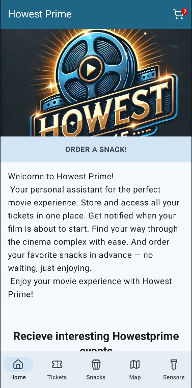
The first screen welcomes the user. There is a button to start ordering snacks. If the user wants, he can subscribe to recieve information on the latest events. Once he has subscribed, the form doesn’t appear anymore. This is implemented by storing the choice in DataStore.
In code, this is represented by the HomeScreen composable in HomeScreen.kt.
Tickets screen
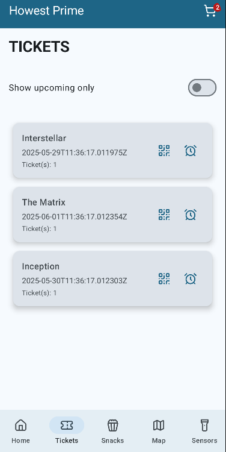
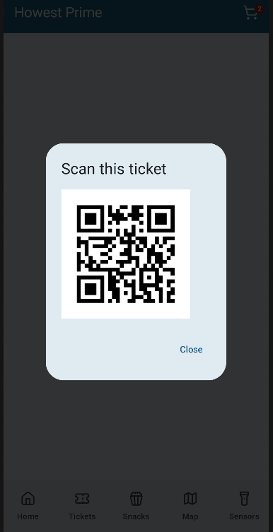
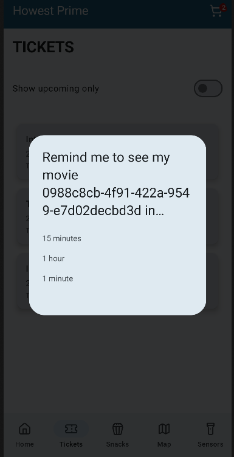
In this screen the user can see his tickets that he ordered (from the MessageBroker). The user can filter to only see the upcoming tickets. For each upcoming ticket a reminder can be set (1 day, 2 hours, 30 minutes before the start of the movie) and the QR code can be shown for scanning. By clicking on a ticket, the user will navigate to a detail screen. On the detail screen the user can see extra information about the ticket.
In code, this is represented by the TicketListScreen composable in TicketListScreen.kt. The detail screen is represented by the TicketScreen composable.
Snacks screen
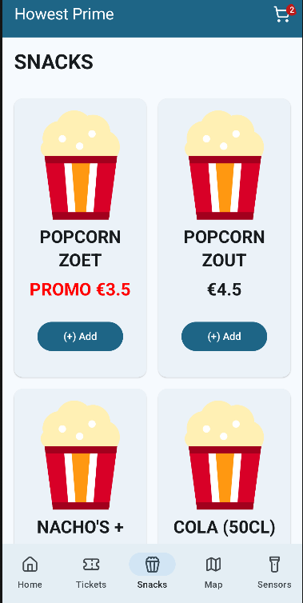

In this screen the user can explore the snacks he can order during his visit to the cinema (from the Web API). Bij clicking on one, the snack is added to the cart. If items are in the cart, an icon will appear in the top bar. Clicking on the icon, the user will see on overview of the snacks that he ordered and he can place his order (order will be send to the MessageBroker) or cancel it. If the order is ready, a notification will be sent.
In code, this is represented by the SnackListScreen composable in SnackListScreen.kt and the CartScreen composable in CartScreen.kt. The detail screen is represented by the ProductScreen composable.
Location Screen
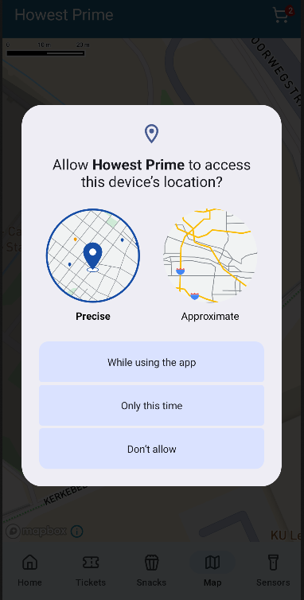
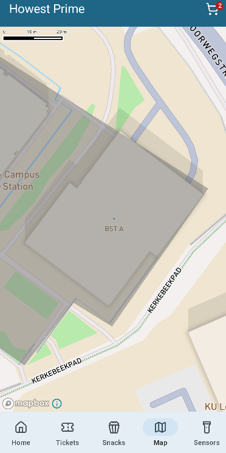
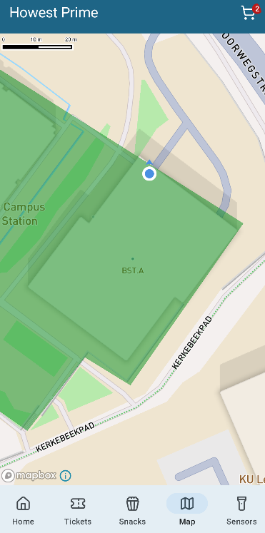
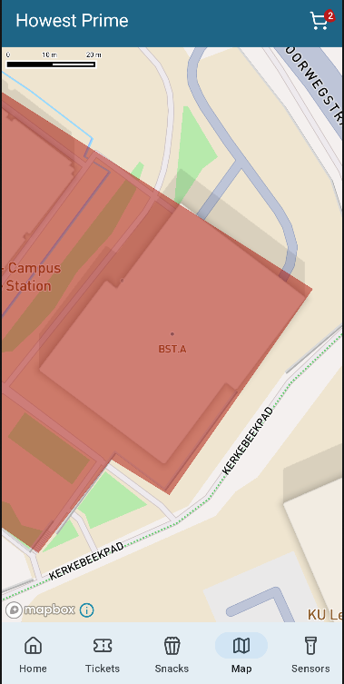
This screen shows the users location and the Howest Prime Movie Cinema complex on a customized map with Mapbox. With geofencing, entering the cinema complex will trigger a customized event. The same happens when leaving the building. Once the user enters the building, navigation to the room where the movie is going will be possible.
In code, this is represented by the LocationScreen composable in LocationScreen.kt.
Sensors Screen
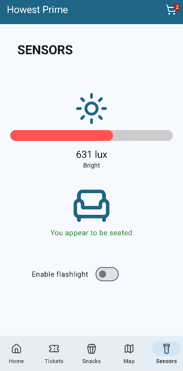
This screen helps the user when he needs to go out of the room during the movie. The light intensity is measured as well if the user is seated or standing up. The flash of his phone can be activated manually or based on the light intensity and moving.
In code, this is represented by the SensorsScreen composable in SensorsScreen.kt.
Technical requirements Mobile App
The purpose is to develop an application that has to be sufficiently large to show you have the knowledge of creating a native app with Jetpack Compose in Kotlin using the techniques seen during the course. (minimum SDK: API32)
The app must be designed and developed professionally (Kotlin style guide, Android App architecture, testing, security).
Must have: for a grade of 12/20
- Tickets
- Receive tickets from the MessageBroker
- Save them in a local Room database
- Display upcoming tickets in a TicketListScreen
- Show QR code when clicking on a ticket
- Set a reminder notification when retrieving the ticket from the MessageBroker, 1 hour before the movie starts
- Snacks
- Retrieve snack data via Retrofit (Snacks url endpoint)
- Save them in a local Room database
- Display snacks in a SnackListScreen
- Add snacks to a cart
- Show overview of the cart in the CartScreen
- Share the order via message (e.g. text or intent) when clicking on an Order-button on the CartScreen
- Location
- Show a Mapbox map with the location of the Howest Prime Studio. The data of the building is provided by GeoJSON (in the assets folder).
- Display your own location as a marker
- tutorial
- Sensors
- Detect light intensity and movement and show it in the SensorsScreen
- Allow flashlight activation via a toggle button
- Sufficient testing (minimum 3 unit tests and 3 instrumented tests)
Intermediate: for a grade of 14+/20
- Tickets
- Show detailed info when clicking a ticket
- Support multiple notification options for upcoming tickets (30 min, 2 hours, 1 day before movie start)
- Snacks
- Send snack orders to the MessageBroker
- Location
- Detect when the user enters or exits the building
- tutorial
- Sensors
- Automatically activate flashlight only when the following constraints are done:
- You are inside the building
- The light intensity is low
- Movement is detected
- Automatically activate flashlight only when the following constraints are done:
- Sufficient unit and instrumented testing
Experienced: for a grade of 16+/20
- Tickets
- Save tickets securely in a key vault
- Add filtering for upcoming/all tickets
- Allow rating of expired tickets and send the rating via the MessageBroker
- Snacks
- Once an order is ready, you receive a notification.
- Your order is placed in the Howest Movie Snack’s locker system, provided with a QR-code containing the orderId.
- Use the device’s camera to detect and scan matching QR codes
- Only after a successful scan, the user can pick up the order (door is opened containing your snacks in the locker system)
- Location
- Navigate to the correct room once inside the building
- See friends’ locations in the building via markers
- Additional features are allowed with approval from the supervising lecturers
Going for the extra mile: For a grade of 18+/20
- Deploy the app via CI/CD to Firebase App Distribution
Programming code
All programming code has to be maintained on Git. Work with issues. Make frequent commits, so we can follow your progress.
Coding guidelines: Use all good practices from previous and current other courses.
Clean code guidelines
- Create readable code
- No redundant code
- Small functions
- Functions do 1 thing
- No duplication
- Refactor code!
D08: Production Environment
Description:
In this deliverable we will deploy the howestprime solution to Azure. This will be done using GitHub Actions and Terraform. Terraform will be used to create the infrastructure on Azure and GitHub Actions will be used to deploy the solution to the created infrastructure.
Prerequisites
- You have an Azure student account with your own tenant.
- This should already be done in the labs of System Architecture & Deployment.
- Remove all the resources to start with a clean slate.
- Make sure that your own tenant is the default tenant in the Azure portal.
- You’ve cloned the repository of the deliverable through GitHub Classroom.
Warning
- This is not a 100% follow along tutorial. You will need to understand the code you are writing and the resources you are deploying. Sometimes the tutorial is not complete or will be different from what you are doing. This is normal. You will need to adapt the code to your own project.
- Make sure you understand the impact of the properties you set.
- Watch out with tier and sku properties. They can have a big impact on the cost of your resources.
- Not all properties are provided in the provided components. You might need to look up the documentation of the resources you are deploying.
Note: Applying the Terraform configuration will deploy the solution to Azure. This can take a while, so be patient and double check your configuration before applying it, you will thank yourself later.
Definition of done
- The whole solution is deployed to Azure and other providers through Terraform.
- The whole solution can be destroyed through Terraform.
How to start
You will need the following information often during the deployment of the solution. Start by collecting this information and keep it handy. You will need it to deploy the solution.
- Tenant name
- Tenant ID
- Subscription id: a0a11e37-00fb-4743-b7e7-5f8573c079cc
- Admin email:e.g. howestprimestudent01_admin@howestprimestudent01.onmicrosoft.com
- User email: e.g.: azuretestti01@howestprimestudent01.onmicrosoft.com
Hint
Always keeps in mind the container diagram (see appendix). This will help you to understand the solution and the resources you are deploying. If you are stuck, look at the container diagram and think about the end goal of the solution. This will help you to understand what you are doing and why you are doing it.
Repository structure
This is an example screen of the repository structure.
You can use this as a reference to create your own file structure.
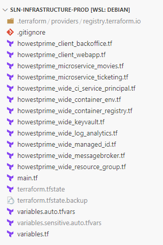
Howestprime Wide
Let’s start with the Howestprime-wide resources. These resources are shared across the entire project and are used by all microservices and applications. The following sections will guide you through the process of creating these resources using Terraform.
READING GUIDE:
- Required settings are explicitly called out in each section.
- Test sections indicate where to validate your progress.
- Notes / hints / reminders highlight common pitfalls.
High-Level Overview
- Scaffolding and creating the resource group
- Initial file creation and configuration
- Creating the key vault
- Used to securely store secrets and other sensitive information for Howestprime.
- Creating the container registry
- Stores Docker images for the applications to be containerized.
- Creating the message broker
- Facilitates event communication between the different microservices.
- Log Analytics
- The workspace for storing logs and metrics from various project resources.
- Container environment
- The environment where microservices will run. Azure provides a serverless container environment called Azure Container Apps, which is used to host these microservices.
- GitHub build pipeline service principal
- GitHub Actions will be configured to deploy microservices to the container environment. This requires a service principal to allow the pipeline to access the container registry and deploy to Azure.
- Managed identity for reading the key vault
- A managed identity in Azure enables Azure services to authenticate to other Azure services without managing credentials. This identity will be used by the microservices to securely access the key vault and other resources.
Scaffolding and Creating the Resource Group
Create the following files:
main.tf: Main file, contains the entry point for the Terraform code.variables.tf: Contains the variables used in the Terraform code.variables.auto.tfvars: Populates the variables with concrete values..gitignore: Ignore the sensitive file and other unnecessary files.variables.sensitive.auto.tfvars: Contains values for variables that are sensitive and should not be exposed in the code. This file is ignored by git and should not be shared with anyone.
Create the terraform config block with azurerm provider in the main.tf file.
-
Create a terraform block to specify the required version of Terraform and the required providers. In this case, we will use the
azurermprovider to manage Azure resources.- Terraform required version: 1.14.5
- AzureRM provider version: 4.61.0
-
Now create both provider blocks in the
main.tffile. Configure both providers inmain.tf.- Leave the values for the provider configuration empty for now. We will fill them in later when we create the variables and populate them with values.
Use these requirements:
REQUIRED provider configuration checklist:
- Add an
azurermprovider block. - Read
subscription_id,tenant_id,client_id, andclient_secret. - Add a
featuresblock. - Inside
features, enable the key vault destroy purge settings (purge_soft_delete_on_destroyandpurge_soft_deleted_secrets_on_destroy).
The subscription_id value can stay unset until the next steps where you define and populate the variables.
Initialize the Terraform project
terraform init
This will download the necessary providers and set up the backend for state management.
NOTE: All generated files should be in the
.gitignore.
Create subscription and tenant ID variables
- Create variables in
variables.tfto hold the subscription ID and tenant ID.- Example name for subscription ID:
howestprime_subscription_id.
- Example name for subscription ID:
HINT: Think very carefully about the names of your variables. A good variable name should be descriptive and indicate what the variable is used for. This will make it easier to understand the code and maintain it in the future. There will be a lot of variables in this project, so it’s important to have a clear naming convention.
-
variables.tfonly contains the variable definitions. The values for these variables should be provided in thevariables.auto.tfvarsorvariables.sensitive.auto.tfvarsfile. Thevariables.auto.tfvarsfile is used for non-sensitive variables, while thevariables.sensitive.auto.tfvarsfile is used for sensitive variables. Thevariables.sensitive.auto.tfvarsfile should be ignored by git to prevent sensitive information from being exposed.- Provide values for the following variables:
howestprime_subscription_idhowestprime_tenant_id
- Provide values for the following variables:
-
Assign these variables to the azurerm provider in the
main.tffile. -
Make sure the sensitive file is ignored by git
Create a service principal for Terraform
Because Terraform needs to authenticate to Azure to manage resources, we need to create a service principal that Terraform can use for authentication. This service principal will be used in the provider configuration to allow Terraform to manage resources in Azure.
- First, create
service_principal_terraform_client_id,service_principal_terraform_secretandservice_principal_terraform_sp_id (this is the objectID)variables invariables.tf. - Next, create a service principal in Azure Portal that will be used to authenticate Terraform. This service principal should have the following permissions:
- Owner role on the subscription
- Role Based Access Control Administrator
- In Entra ID assign the role application administrator to the service principal. By the end of this tutorial, you should know why this is needed.
- Through Entra ID > Roles and administrators > search for “application administrator” > click on the role > click on “Add assignments” > search for the service principal > select the service principal > click on “Add”.
- Assing values to the new variables in the
variables.sensitive.auto.tfvarsfile.
Create a resource group
In this project, we will create a resource group that will be used to hold all the resources for the Howestprime project.
- First, create a variable in
variables.tfto hold the location of all future resources. - Provide a value for this variable in the
variables.auto.tfvars(not sensitive) file - Create another variable (dictionary) in
variables.tfto hold the names of all resources- This will make it easier to manage the names of the resources and ensure consistency across the project. It also allows you to easily change the name of a resource in one place if needed.
- This a map or dictionary variable.
variable "resource_names" {
description = "Map of resource names to assign to the resources."
type = map(string)
}
- Add an entry to this map variable in the
variables.auto.tfvarsfile.
# Example
# mapKey = the identifier of the resource in the Terraform code
# mapValue = the name of the resource in Azure
resource_names = {
mapKey = mapValue
azurerm_resource_group_howestprime = "howestprime-wide-p-arg"
}
- Now, create the resource group in a new file called with example name
howestprime_wide_resource_group.tf.- Use clear and meaningful names for all files. In this case, the word wide indicates that this resource is used across all resources in the project.
Test the resource group creation
- Run the following command to validate the resource group configuration:
terraform plan
- If the configuration looks correct, execute the following command to provision the resource group:
terraform apply
- Verify the resource group was created successfully through az CLI or the Azure portal
az group list
REMINDER: Do not edit Azure resource properties through the Azure portal. This can cause issues with Terraform state management. Always make changes to resources through Terraform to ensure the state file is up to date and consistent with the actual resources in Azure.
Creating the Key Vault
Another resource used across the whole project is the key vault. This resource is used to store secrets and other sensitive information for Howestprime.
The Key Vault
- Add an entry in the
resource_namesvariable invariables.auto.tfvarsfor the key vault name. - Create a new terraform file for the keyvault.
- Add a Key Vault resource with at least the following properties configured:
- Required properties:
- Remember: many properties like
resource_group_name,locationcan be fetched from the resource itself by using the resource reference, e.g.,azurerm_resource_group.howestprime.name. - name, resource group, location, tenant ID
- standard SKU
- soft delete retention set to 7 days
- purge protection disabled
- disk encryption enabled
- deployment and template deployment enabled
NOTE: Make sure you understand the impact of the properties you set.
Terraform needs an extra Key Vault role
- Extend
howestprime_wide_keyvault.tfwith another role assignment for the Terraform service principal.- Purpose: allow Terraform to manage the key vault itself (e.g., update access policies, delete the key vault).
- Role:
Key Vault Administrator. - Scope: the Howestprime key vault.
- Principal: Terraform service principal ID (object ID).
- Add an explicit dependency on the key vault resource.
- This ensures that the role assignment is created only after the key vault is created, preventing potential issues with resource creation order.
The principal ID is the Object ID of the service principal NOT the Object ID of the App Registration.
WARNING: Do not use the App Registration Object ID here.
- Subscriptions > IAccess control (IAM) > Role assignments > search for the service principal > click on the service principal > copy the Object ID.
Test the key vault creation
Plan and apply the Terraform configuration to create the key vault. Verify the key vault was created successfully through az CLI or the Azure portal.
Creating the Container Registry
The container registry is used to store Docker images for the applications we will containerize. The container registry is a private registry for storing and managing Docker images.
- Add an entry in the
resource_namesvariable invariables.auto.tfvarsfor the container registry name.- No spaces or special characters are allowed in the name of the container registry. The name must be unique across all Azure container registries.
- Create a new terraform file for the container registry.
- Add the container registry resource to this file.
- Required settings for the container registry resource:
- Name (this name is unique across Azure, so choose a name that is unlikely to be taken)
- Resource group and location from your existing setup
- SKU set to
Basic - Admin user disabled
- Know why we do this.
Test the container registry creation
Plan and apply the Terraform configuration to create the container registry. Verify the container registry was created successfully through az CLI or the Azure portal.
Creating the Message Broker
The message broker is used to send events between the movies and ticketing services. This project uses a LavinMQ message broker from the cloud provider CloudAMQP.
- Create an account on CloudAMQP and create an API token with full access so the Terraform code can manage the message broker.
- Add a new provider to the required providers in the
main.tffile. The provider is calledcloudamqpand is used to manage the message broker in the cloud.- Use version “~>1.42” of the provider.
- Add the provider configuration to the
main.tffile. The provider requires an API token for authentication, which should be read from a sensitive variable. - Add an entry in the
resource_namesmap variable for the message broker name. - Create a new terraform file and create the message broker resource.
- Required settings for the message broker resource:
- Name from
resource_names - Plan set to
lemming - Region set to
amazon-web-services::eu-west-1- Or choose another region if you prefer.
- Name from
- Later, you will need information about this newly created message broker. This information can always be retrieved by adding a data block to the messagebroker terraform file.
# Example: data block to retrieve the credentials of the message broker
data "cloudamqp_credentials" "local-admin" {
instance_id = cloudamqp_instance.howestprime.id
}
- Add the messagebroker password to the key vault. This way, other resources can access the message broker password securely. This way, the service principal has access to the key vault and can add the secret.
- Terrafrom resource ID: “azurerm_key_vault_secret”
- Required settings for the Key Vault secret resource:
- Secret name that clearly identifies the message broker credential
- Secret value from the CloudAMQP credentials data source
- Key Vault ID referencing your Howestprime key vault
- Explicit
depends_onon the Terraform service principal Key Vault role assignment- The role
Key Vault Administratormust be assigned to the Terraform service principal before it can add secrets to the key vault. By adding an explicit dependency, you ensure that the secret is only created after the role assignment is in place, preventing potential issues with resource creation order.
- The role
- Because the provider was updated, reinitialize the Terraform project. This will download the new provider and update the state file.
# Reinitialize the Terraform project
terraform init -upgrade
Test the message broker creation
Plan and apply the Terraform configuration to create the message broker. Verify the message broker was created successfully (cloud amqp dashboard) and check in the Azure portal that the secret with the message broker credentials was added to the key vault.
NOTE: If you cannot view the secrets in the key vault, add the role
Key Vault Secrets Officerto your user account for the key vault. This will allow you to view the secrets in the key vault through the Azure portal. This is needed for testing purposes, but in a production environment, you would not give this role to a user account. Instead, you would use a managed identity or service principal with the appropriate permissions to access the secrets.
Log Analytics
The Log Analytics workspace is used to store logs and metrics for the different resources in the project. This resource is used to monitor the various resources and troubleshoot issues.
- Add an entry in the
resource_namesmap for the log analytics workspace name. - Create a new terraform file called
howestprime_wide_log_analytics.tfand create the workspace resource.- Only the name, resource group and location are required to create the workspace. You can use the existing variables for the resource group and location.
Test the log analytics workspace creation
Plan and apply the Terraform configuration to create the log analytics workspace. Verify the workspace was created successfully through az CLI or the Azure portal.
az monitor log-analytics workspace list
Container Environment
The container environment will be used to run the different container services (movies and ticketing). Azure provides its own container environment called Azure Container Apps, a serverless container environment for running distributed services.
-
Add an entry in the
resource_namesmap for the container environment name. -
Create a new terraform file and create the container environment resource.
-
Required settings for the container environment resource:
- Name from
resource_names - Resource group and location from your existing setup
- Log Analytics workspace ID from the workspace resource
- Name from
-
The Azure Container Apps environment requires an extra resource provider to be registered. Update the azurerm provider in the
main.tffile by adding the following property:
resource_providers_to_register = [ "Microsoft.App" ]
- This property is needed because the Azure Container Apps resource provider is not registered by default in Azure. By adding this property, you ensure that the provider is registered when you run Terraform, allowing you to create Azure Container Apps resources without manual intervention.
NOTE: If you get a region not allowed error when creating the container environment, check your allowed region through Policies > Assignments > Allowed locations. Choose another one of the allowed regions and try again.
Test the container environment creation
Plan and apply the Terraform configuration to create the container environment. Verify the container environment was created successfully through az CLI or the Azure portal.
Create a GitHub Build Pipeline Service Principal
The GitHub build pipeline service principal is used to authenticate GitHub Actions against Azure.
-
Create a terreform file and create the service principal:
-
Start by creating a new Azure Entra application for the GitHub CI/CD integration.
- Terrafrom resource ID:
azuread_application - Give the application a clear and recognizable display name.
- Terrafrom resource ID:
-
Create a time rotating resource
- Terraform resource ID:
time_rotating - Setting: rotating_days set to 180 days
- Terraform resource ID:
-
Create a client secret for that application so automated deployments can authenticate.
- Terrafrom resource ID:
azuread_application_password - Link the secret to a rotation trigger from above so Terraform can replace it automatically.
- Configure the rotation interval to 180 days.
- Terrafrom resource ID:
-
Create a new service principal linked to the GitHub CI/CD application.
- Terrafrom resource ID:
azuread_service_principal - Use the application’s client ID to associate both identities.
- azuread_application.NAME_OF_YOUR_RESOURCE.application_id
- Set the Terraform service principal as owner so Terraform can fully manage this identity lifecycle.
- Terrafrom resource ID:
Test the GitHub build pipeline service principal creation
Plan and apply the Terraform configuration to create the service principal. Verify the service principal was created successfully
In the portal, navigate to Entra ID > App registrations > search for the application name
Create a Managed Identity for Reading the Key Vault
A managed identity in Azure allows Azure services to securely authenticate to other Azure services without the need to manage credentials. In this project, a managed identity will be created for the services (movies & ticketing) to access the key vault and other resources securely.
Be sure you understand the distinction between a managed identity and a service principal.
IMPORTANT: A managed identity and a service principal are related concepts, but they are not interchangeable.
-
Add an entry to the
resource_namesmap for the managed identity’s name. -
Create a new Terraform file for the managed identity and define a user-assigned identity.
- Terraform resource ID:
azurerm_user_assigned_identity - Set the location to your shared project region.
- Use the managed identity name from the
resource_namesmap. - Reference the existing Howestprime resource group.
- Terraform resource ID:
-
Assign the “Key Vault Secrets Officer” role to the managed identity on the Howestprime key vault by creating a role-assignment resource.
- Terraform resource ID:
azurerm_role_assignment - Scope: the Howestprime key vault resource.
- Role definition:
Key Vault Secrets Officer. - Principal ID: the managed identity principal ID (not the application ID).
- azurerm_user_assigned_identity.NAME_OF_YOUR_RESOURCE.principal_id
- Add an explicit dependency on the key vault so role assignment happens after key vault creation.
- Terraform resource ID:
Test the managed identity creation
Plan and apply the Terraform configuration to create the managed identity. Verify the managed identity was created successfully
Test
It should be possible to completely destroy the resources and recreate them without any issues.
SUCCESS CRITERION:
terraform destroyfollowed byterraform applyshould complete without manual fixes.
WARNING: Don’t forget to clean up the resources after testing to avoid unnecessary costs.
Resource screenshot
Your resource group should look something like this in the Azure portal:

Microservice Movies
In this section we will create the necessary resources for the movies microservice.
Getting started: Create a new terraform file for this service.
Create postgres username and password
Username
This is the first time we need to create a username. Create a new map variable just like the resource_names map variable to hold all the usernames. This way we have a single source of truth for all the usernames in the project and we can easily reference them in the code.
Task: Add a new entry for the movies microservice database username.
Password
For the password we will use the random_password resource to generate a random password. This way we don’t have to hardcode the password in the code and we can easily reference it in the code.
Create a new random_password resource for the movies microservice database password with the following parameters:
- length: 16
- special: true
- override_characters:
_%@
Note: Using this resource requires the
randomprovider. Make sure to add the provider to yourmain.tffile if you haven’t already, then run:terraform init -upgrade
Create a postgres server
Create an azurerm_postgresql_flexible_server resource for the movies microservice. The flexible server is a managed database service that provides the database infrastructure.
Configuration requirements:
| Property | Value | Description |
|---|---|---|
| Name | Use your naming convention | Unique server identifier |
| Location | Reference existing resources | Azure region |
| Resource Group | Reference existing resources | Resource group name |
| Admin Login | From username variable | Administrator username |
| Admin Password | From random password | Generated password |
| Version | 13 | PostgreSQL version |
| SKU | B_Standard_B1ms | Basic tier for development |
| Storage | 32768 MB (32 GB) | Database storage size |
| Backup Retention | 7 days | Backup retention period |
| Public Access | enabled | Allow external connections |
| Lifecycle | Ignore zone changes | Prevent zone recreation |
Create a database on the database server
Create an azurerm_postgresql_flexible_server_database resource to provision a database within the PostgreSQL flexible server you created in the previous step.
Configuration requirements:
- Name: Logical name for the database (e.g.,
"movies") - Server ID: Reference to your flexible server resource
- Charset:
UTF8 - Dependencies: Ensure the flexible server is created first
Allow external ip’s
We need to connect to this database from multiple locations. Because we don’t know all the Howest ip ranges we will allow all ip’s.
⚠️ Security Warning: This is not a good practice but for this project it is acceptable. In a production environment you should only allow the ip’s that need access to the database.
Define the variable
Create a variable in variables.tf to hold the allowed ip ranges. This resource also depends on the flexible server.
# example in variables.tf
variable "howestprime_allowed_ip_ranges" {
description = "List allowed IP addresses for documentDB firewall rule"
type = list(object({
name = string
start_ip_address = string
end_ip_address = string
}))
}
# example in the auto.tfvars file
# In real life, this would be a list of IP ranges for the Azure services that need access to the database.
# But for the sake of simplicy and to easily connect from multiple locations, we will allow all IP ranges.
howestprime_allowed_ip_ranges = [
{
name = "allow_all"
start_ip_address = "0.0.0.0"
end_ip_address = "255.255.255.255"
}
]
Create the firewall rules
Add the firewall rules using a for_each loop:
resource "azurerm_postgresql_flexible_server_firewall_rule" "allow_ranges" {
for_each = { for rule in var.howestprime_allowed_ip_ranges : rule.name => rule }
name = each.value.name
server_id =
start_ip_address = each.value.start_ip_address
end_ip_address = each.value.end_ip_address
depends_on = []
}
Add the generated password to the key vault
Create an azurerm_key_vault_secret resource to store the database password in the key vault. Other resources like the container apps will need secure access to this password.
Configuration requirements:
- Name: Appropriate name for the secret
- Value: The generated random password from your
random_passwordresource - Key Vault ID: Reference to the key vault ID
- Dependencies: Ensure the secret is created after the flexible server and database are ready
Test
Verification steps:
- Run Terraform to create the database resources
- Look up the connection string in the Azure portal
- Retrieve the password from the key vault
- Try to connect to the database from your favorite database GUI (e.g., DataGrip)
Populate the microservice movies github repository with secrets and variables
Overview
The microservice movies build pipeline requires access to various secrets and variables, such as:
- 🔑 Database password
- 📨 Message broker password
- 🔐 Key vault URL
- 📦 Container registry URL
- And many more…
By managing GitHub secrets and variables through Terraform, we maintain a single source of truth for all infrastructure configuration.
Configure the GitHub Provider
Add the github provider to your main.tf file to enable Terraform to manage GitHub repository settings.
Implementation steps:
-
Create variables:
- GitHub personal access token
- GitHub organization/owner name
-
Create sensitive values for these variables
-
Create a personal access token in GitHub:
- Navigate to: GitHub Profile → Settings → Developer settings → Personal access tokens
- Grant permissions to:
- Manage repository secrets
- Manage repository variables
-
Add the GitHub provider configuration referencing your variables
Populate Repository Secrets and Variables
In the howestprime_microservice_movies.tf file we will add the code below. Because writing this code is a bit tedious, we will provide a template solution.
⚠️ Important: This template solution is not meant to be copied and pasted. You should understand what each property means and how to use it. The template solution is provided as a reference—you will need to adapt the names and values to your own project.
What the code does:
- ✅ Creates GitHub Actions variables for all the necessary configuration values that the build pipeline needs
- ✅ Creates GitHub Actions secrets for sensitive values like the service principal credentials
How it works:
- Defines two local maps:
local.howestprime-movies-gh-action-variablesandlocal.howestprime-movies-gh-action-secrets - These maps hold the configuration for all the variables and secrets that need to be created in the GitHub repository
- Iterates over these maps to create the corresponding GitHub Actions variables and secrets using the
github_actions_variableandgithub_actions_secretresources
locals {
howestprime_repo_movies = "st-microservice-movies-matthias-blomme"
dotnet_connection_string = format(
"Server=%s;Database=movies;Port=%s;User Id={username};Password={password};Ssl Mode=Require;",
azurerm_postgresql_flexible_server.movies.fqdn,
5432
)
messagebroker_password_uri = regex("(https://[^/]+/secrets/[^/]+)",
azurerm_key_vault_secret.howestprime_wide_p_messagebroker.id)[0]
psql_password_uri = regex("(https://[^/]+/secrets/[^/]+)",
azurerm_key_vault_secret.howestprime_microservice_movies_db.id)[0]
howestprime-movies-gh-action-variables = {
howestprime_movies_p_plsql_login = {
variable_name = "howestprime_movies_p_psql_login"
value = var.resource_login_names.howestprime_microservice_movies_db
}
howestprime_movies_p_plslq_connection_string = {
variable_name = "howestprime_movies_p_psql_connection_string"
value = local.dotnet_connection_string
}
howestprime_wide_messagebroker_login = {
variable_name = "howestprime_wide_p_messagebroker_login"
value = data.cloudamqp_credentials.local-admin.username
}
howestprime_wide_keyvault_uri = {
variable_name = "howestprime_wide_p_keyvault_uri"
value = azurerm_key_vault.howestprime.vault_uri
}
howestprime_wide_mi_keyvaultreader_uri = {
variable_name = "howestprime_wide_mi_keyvaultreader_uri"
value = azurerm_user_assigned_identity.keyvaultreader.id
}
az_tenant_id = {
variable_name = "az_tenant_id"
value = var.azure_tenant_id
}
az_subscription_id = {
variable_name = "az_subscription_id"
value = var.azure_subscription_id
}
az_resource_group = {
variable_name = "az_resource_group"
value = azurerm_resource_group.howestprime.name
}
az_container_registry = {
variable_name = "az_container_registry"
value = azurerm_container_registry.howestprime.login_server
}
az_container_environment = {
variable_name = "az_container_environment"
value = azurerm_container_app_environment.howestprime.name
}
howestprime_movies_p_sqlsrv_password_uri = {
variable_name = "howestprime_movies_p_sqlsrv_password_uri"
value = local.psql_password_uri
}
howestprime_wide_p_messagebroker_password_uri = {
variable_name = "howestprime_wide_p_messagebroker_password_uri"
value = local.messagebroker_password_uri
}
howestprime_wide_p_messagebroker_uri = {
variable_name = "howestprime_wide_p_messagebroker_hostname"
value = cloudamqp_instance.howestprime.host
}
howestprime_wide_p_messagebroker_vhost = {
variable_name = "howestprime_wide_p_messagebroker_vhost"
value = cloudamqp_instance.howestprime.vhost
}
}
howestprime-movies-gh-action-secrets = {
howestprime_wide_ci_service_principal = {
secret_name = "howestprime_wide_ci_service_principal"
value = azuread_application.github-ci-app.client_id
}
howestprime_wide_ci_service_principal_password = {
secret_name = "howestprime_wide_ci_service_principal_password"
value = azuread_application_password.github-ci-app-password.value
}
}
}
resource "github_actions_variable" "howestprime_movies" {
for_each = local.howestprime-movies-gh-action-variables
repository = local.howestprime_repo_movies
variable_name = each.value.variable_name
value = each.value.value
}
resource "github_actions_secret" "howestprime_movies" {
for_each = local.howestprime-movies-gh-action-secrets
repository = local.howestprime_repo_movies
secret_name = each.value.secret_name
plaintext_value = each.value.value
}
Give the github service principal roles to manage the container and other resources
Update the CI service principal terraform file to grant the service principal the necessary permissions to manage the container registry and resource group. These permissions enable the build pipeline to push container images and manage container environments.
Required Role Assignments
Create two azurerm_role_assignment resources:
1. Container Registry Push Access
| Property | Value | Description |
|---|---|---|
| Role | AcrPush | Allows pushing Docker images |
| Scope | Container registry resource | The ACR to push images to |
| Principal | GitHub CI service principal | The identity performing the action |
| Dependencies | e.g., key vault | Ensure proper creation order |
Purpose: Allows the pipeline to push Docker images to the container registry.
2. Resource Group Management
| Property | Value | Description |
|---|---|---|
| Role | Contributor | Full management access |
| Scope | Resource group | The resource group to manage |
| Principal | GitHub CI service principal | The identity performing the action |
| Dependencies | e.g., key vault | Ensure proper creation order |
Purpose: Enables the pipeline to manage container apps and related resources within the resource group.
Test
Verification:
- Navigate to your GitHub repository settings
- Check the Secrets and variables section under Actions
- Verify that all secrets and variables have been populated correctly
Client Backoffice
In this section we will create the infrastructure for the client backoffice application.
Getting started: Create a new terraform file for this service.
Create a service plan and application service
We will run the client backoffice in an Azure Web Application with a Linux environment. This requires two resources:
- Service Plan - Defines the hosting environment and compute resources
- Application Service - Runs the actual application
Both resources will be created in the same resource group as your other infrastructure.
Resource Configuration
Service Plan settings (azurerm_service_plan):
| Property | Value | Description |
|---|---|---|
| OS Type | Linux | Operating system |
| SKU Name | F1 | Free tier for development |
| Name | Use naming convention | Unique identifier |
| Location | Reference existing | Azure region |
| Resource Group | Reference existing | Resource group name |
Web App settings (azurerm_linux_web_app):
| Property | Value | Description |
|---|---|---|
| Service Plan | Reference above | Link to service plan |
| HTTPS Only | true | Force HTTPS connections |
| Always On | false | Required for F1 tier |
| TLS Version | 1.2 | Minimum TLS version |
| .NET Version | 10.0 | Application runtime |
Populate the client backoffice github repository with secrets and variables
Overview
The client backoffice build pipeline requires access to various secrets and variables, such as:
- 🌐 Microservice Movies API URL
- 🔑 Service principal credentials
- ☁️ Azure configuration (tenant, subscription, resource group)
- 📦 Web app name for deployment
By managing these through Terraform, we maintain infrastructure-as-code consistency.
Configuration Template
⚠️ Important: Do not just copy-paste the code below. You need to understand what each property means and how to use it. The template solution is provided as a reference—you will need to adapt the names and values to your own project.
What the code does:
- ✅ Creates GitHub Actions variables for deployment configuration
- ✅ Creates GitHub Actions secrets for sensitive credentials
- ✅ Uses local maps to organize all variables and secrets
- ✅ Iterates over maps to create resources dynamically
locals {
howestprime_repo_backoffice = "st-client-backoffice-matthias-blomme"
howestprime-backoffice-gh-action-variables = {
az_backoffice_webapp = {
variable_name = "az_backoffice_webapp"
value = azurerm_linux_web_app.client_backoffice.name
}
az_tenant_id = {
variable_name = "az_tenant_id"
value = var.azure_tenant_id
}
az_resource_group = {
variable_name = "az_resource_group"
value = azurerm_resource_group.howestprime.name
}
az_subscription_id = {
variable_name = "az_subscription_id"
value = var.azure_subscription_id
}
}
howestprime-backoffice-gh-action-secrets = {
howestprime_wide_ci_service_principal = {
secret_name = "howestprime_wide_ci_service_principal"
value = azuread_application.github-ci-app.client_id
}
howestprime_wide_ci_service_principal_password = {
secret_name = "howestprime_wide_ci_service_principal_password"
value = azuread_application_password.github-ci-app-password.value
}
}
}
resource "github_actions_variable" "howestprime_backoffice" {
for_each = local.howestprime-backoffice-gh-action-variables
repository = local.howestprime_repo_backoffice
variable_name = each.value.variable_name
value = each.value.value
depends_on = [ azurerm_container_app_environment.howestprime ]
}
resource "github_actions_secret" "howestprime_backoffice" {
for_each = local.howestprime-backoffice-gh-action-secrets
repository = local.howestprime_repo_backoffice
secret_name = each.value.secret_name
plaintext_value = each.value.value
depends_on = [ azurerm_container_app_environment.howestprime ]
}
Test
Verification steps:
-
Azure Resources:
- Check the Azure Portal or use the CLI
- Verify the service plan is created with the correct SKU
- Verify the web app is created and running
-
GitHub Configuration:
- Navigate to your GitHub repository settings
- Go to Secrets and variables → Actions
- Verify all secrets and variables are populated correctly
CLI verification:
# List service plans
az appservice plan list --resource-group <your-resource-group> --output table
# List web apps
az webapp list --resource-group <your-resource-group> --output table
Microservice Ticketing
In this section we will create the necessary resources for the ticketing microservice.
Getting started: Create a new Terraform file for this service.
Create the ticketing Cosmos DB account
The ticketing microservice uses Cosmos DB with the MongoDB API.
Before creating the account, add a login/resource name in your variables.auto.tfvars (or equivalent map variable) so naming stays consistent across your project.
Create an azurerm_cosmosdb_account resource for ticketing.
Configuration requirements:
| Property | Value | Description |
|---|---|---|
| Name | From var.resource_login_names | Cosmos DB account name |
| Location | Reference existing resource group location | Azure region |
| Resource Group | Reference existing resource group | Target resource group |
| Offer Type | Standard | Required offer type |
| Kind | MongoDB | MongoDB-compatible API |
| Capability | EnableMongo | Enables Mongo support |
| Mongo Server Version | 7.0 | Mongo API version |
| Consistency | Session | Consistency policy |
| Geo Location | Primary location with failover_priority = 0 | Single-region setup |
| Free Tier Enabled | true | Use free tier for development |
Create a Mongo database in the Cosmos account
Create an azurerm_cosmosdb_mongo_database resource for the ticketing microservice database.
Configuration requirements:
- Name: Logical database name for ticketing
- Resource Group: Same resource group as the Cosmos account
- Account Name: Reference your
azurerm_cosmosdb_account.ticketing.name
Add the generated database password to Key Vault
Once the Cosmos DB account is created, Azure provides a MongoDB connection string. We will extract the password from that string and store it as a Key Vault secret.
Create an azurerm_key_vault_secret resource and make sure it depends on both the Cosmos account and the Mongo database.
Getting the password from the connection string can be done by using the locals variable, see below.
Populate the microservice ticketing GitHub repository with secrets and variables
Overview
The ticketing build pipeline needs many infrastructure values, such as:
- DocumentDB password URI
- Message broker host, vhost, login, and password URI
- Key vault URI and managed identity URI
- Azure tenant, subscription, resource group, registry, and container environment
Because these values are infrastructure configuration, we manage them with Terraform to keep a single source of truth.
⚠️ Important: The template below is a reference. Do not blindly copy-paste it. Understand and adapt names and values to your own project.
locals {
mongo_pwd = regex("mongodb://[^:]+:([^@]+)@", azurerm_cosmosdb_account.ticketing.primary_mongodb_connection_string)[0]
mongo_host = regex("mongodb://[^:]+:[^@]+@([^:]+):",
azurerm_cosmosdb_account.ticketing.primary_mongodb_connection_string)[0]
mongo_port = regex("mongodb://[^:]+:[^@]+@[^:]+:(\\d+)",
azurerm_cosmosdb_account.ticketing.primary_mongodb_connection_string)[0]
mongo_options = regex("mongodb://[^:]+:[^@]+@[^:]+:\\d+/\\?([^#]+)",
azurerm_cosmosdb_account.ticketing.primary_mongodb_connection_string)[0]
ticketing_documentdb_password_uri = regex("(https://[^/]+/secrets/[^/]+)",
azurerm_key_vault_secret.howestprime_microservice_ticketing_db.id)[0]
ticketing_messagebroker_password_uri = regex("(https://[^/]+/secrets/[^/]+)",
azurerm_key_vault_secret.howestprime_wide_p_messagebroker.id)[0]
howestprime_repo_ticketing = "st-microservice-ticketing-matthias-blomme"
howestprime-ticketing-gh-action-variables = {
howestprime_wide_messagebroker_login = {
variable_name = "howestprime_wide_p_messagebroker_login"
value = data.cloudamqp_credentials.local-admin.username
}
howestprime_wide_p_messagebroker_password_uri = {
variable_name = "howestprime_wide_p_messagebroker_password_uri"
value = local.ticketing_messagebroker_password_uri
}
howestprime_wide_p_messagebroker_uri = {
variable_name = "howestprime_wide_p_messagebroker_hostname"
value = cloudamqp_instance.howestprime.host
}
howestprime_wide_p_messagebroker_vhost = {
variable_name = "howestprime_wide_p_messagebroker_vhost"
value = cloudamqp_instance.howestprime.vhost
}
howestprime_ticketing_p_asyncapi_uri = {
variable_name = "howestprime_ticketing_p_asyncapi_uri"
value = "config/asyncapi.yaml"
}
howestprime_ticketing_p_webapi_host = {
variable_name = "howestprime_ticketing_p_webapi_host"
value = "0.0.0.0"
}
howestprime_ticketing_p_webapi_port = {
variable_name = "howestprime_ticketing_p_webapi_port"
value = "8000"
}
howestprime_ticketing_p_documentdb_login = {
variable_name = "howestprime_ticketing_p_documentdb_login"
value = var.resource_login_names.howestprime_microservice_ticketing_db
}
howestprime_ticketing_p_documentdb_port = {
variable_name = "howestprime_ticketing_p_documentdb_port"
value = local.mongo_port
}
howestprime_ticketing_p_documentdb_host = {
variable_name = "howestprime_ticketing_p_documentdb_host"
value = local.mongo_host
}
howestprime_ticketing_p_documentdb_options = {
variable_name = "howestprime_ticketing_p_documentdb_options"
value = local.mongo_options
}
howestprime_ticketing_p_documentdb_protocol = {
variable_name = "howestprime_ticketing_p_documentdb_protocol"
value = "mongodb"
}
howestprime_ticketing_p_documentdb_password_uri = {
variable_name = "howestprime_ticketing_p_documentdb_password_uri"
value = local.ticketing_documentdb_password_uri
}
howestprime_ticketing_p_documentdb_db = {
variable_name = "howestprime_ticketing_p_documentdb_db"
value = azurerm_cosmosdb_mongo_database.ticketing.name
}
howestprime_wide_keyvault_uri = {
variable_name = "howestprime_wide_p_keyvault_uri"
value = azurerm_key_vault.howestprime.vault_uri
}
howestprime_wide_mi_keyvaultreader_uri = {
variable_name = "howestprime_wide_mi_keyvaultreader_uri"
value = azurerm_user_assigned_identity.keyvaultreader.id
}
az_tenant_id = {
variable_name = "az_tenant_id"
value = var.azure_tenant_id
}
az_subscription_id = {
variable_name = "az_subscription_id"
value = var.azure_subscription_id
}
az_resource_group = {
variable_name = "az_resource_group"
value = azurerm_resource_group.howestprime.name
}
az_container_registry = {
variable_name = "az_container_registry"
value = azurerm_container_registry.howestprime.login_server
}
az_container_environment = {
variable_name = "az_container_environment"
value = azurerm_container_app_environment.howestprime.name
}
}
howestprime-ticketing-gh-action-secrets = {
howestprime_wide_ci_service_principal = {
secret_name = "howestprime_wide_ci_service_principal"
value = azuread_application.github-ci-app.client_id
}
howestprime_wide_ci_service_principal_password = {
secret_name = "howestprime_wide_ci_service_principal_password"
value = azuread_application_password.github-ci-app-password.value
}
}
}
resource "github_actions_variable" "howestprime_ticketing" {
for_each = local.howestprime-ticketing-gh-action-variables
repository = local.howestprime_repo_ticketing
variable_name = each.value.variable_name
value = each.value.value
depends_on = [
azurerm_cosmosdb_account.ticketing,
azurerm_cosmosdb_mongo_database.ticketing
]
}
resource "github_actions_secret" "howestprime_ticketing" {
for_each = local.howestprime-ticketing-gh-action-secrets
repository = local.howestprime_repo_ticketing
secret_name = each.value.secret_name
plaintext_value = each.value.value
depends_on = [
azurerm_cosmosdb_account.ticketing,
azurerm_cosmosdb_mongo_database.ticketing
]
}
Test
Verification steps:
- Run Terraform to create the ticketing Cosmos DB resources
- Verify in Azure Portal (or CLI) that the Cosmos account and Mongo database exist
- Verify the Key Vault secret is created
- Check the ticketing GitHub repository settings to confirm Actions variables and secrets are populated
Client Web App
In this section we will create the infrastructure for the client web application.
Getting started: Create a new terraform file for this service
Create a service plan and web app
The client web app is provided as a Docker image. We deploy it to Azure using a Linux Web App.
This requires two resources:
- Service Plan - Defines the hosting environment and pricing tier
- Web App - Runs the containerized client web application
Both resources should be created in the same resource group as the rest of the Howestprime infrastructure.
Resource configuration
Service Plan settings (azurerm_service_plan):
| Property | Value | Description |
|---|---|---|
| OS Type | Linux | Required for Linux web app hosting |
| SKU Name | F1 | Free tier for development |
| Name | Use naming convention | Unique service plan name |
| Location | Reference existing resources | Azure region |
| Resource Group | Reference existing resources | Resource group name |
Web App settings (azurerm_linux_web_app):
| Property | Value | Description |
|---|---|---|
| Service Plan | Reference service plan | Attach app to hosting plan |
| Always On | false | Required for F1 tier |
| TLS Version | 1.2 | Minimum TLS version |
| Container Image | howestprime-client-webapp:latest | Docker image to run |
| Container Registry | https://hcr.technet.howest.be | ACR login server |
| CORS Origins | [*] | Allow requests from all origins (project setup) |
| Auth Settings | Disabled | No App Service auth in this setup |
App Setting DOCKER_REGISTRY_URL | https://hcr.technet.howest.be | Registry URL used by the web app container runtime |
App Setting WEBSITES_ENABLE_APP_SERVICE_STORAGE | false | Disable persistent App Service storage for container deployment |
App Setting VITE_APP_TICKETING_API_URL | Ticketing container app URL | Front-end base URL for the ticketing API |
App Setting VITE_APP_MOVIES_BASE_API_URL | Movies container app URL | Front-end base URL for the movies API |
Note: The
VITEAPI URLs inapp_settingscan be finalized after the microservice build pipelines are implemented in D9 and the container apps are deployed.
Test
Verification steps:
- Run Terraform
planandapply. - Verify the service plan is created with SKU
F1. - Verify the Linux web app is created and linked to the correct service plan.
- Check in Azure Portal that the container settings and app settings are applied.
CLI verification:
# List service plans
az appservice plan list --resource-group <your-resource-group> --output table
# List web apps
az webapp list --resource-group <your-resource-group> --output table
D09: Build Pipeline
Description:
We need to deploy the microservices and front-end applications to our production environment. This will be done using GitHub Actions. GitHub Actions will be used to build and deploy the microservices and front-end applications.
Components to deploy
- FR01 - Microservice Movies
- FR02 - Client Backoffice
- FR03 - Microservice Ticketing
D09: Build Pipeline: Microservice Movies
Having completed D2, you should already have a pipeline that executes unit tests and checks for code coverage. If you haven’t achieved the required 95% coverage, you may temporarily disable the coverage check in your pipeline.
In this section, we will enhance the pipeline by adding the following jobs:
- Building and pushing the Docker image to Azure Container Registry
- Deploying the Docker image to Azure Container Apps
Build and push the Docker image
Start by creating a production.pubxml rofile for the production environment.
<Project>
<PropertyGroup>
<ContainerRepository>microservice-movies</ContainerRepository>
</PropertyGroup>
</Project>
Create a appliction settings file called appsettings.Production.json folder.
Let’s make clear that almost all settings are passed through environment variables.
{
"Logging": {
"LogLevel": {
"Default": "Information",
"Microsoft.Hosting.Lifetime": "Information"
}
},
"Database": {
"Provider": "PostgreSQL",
"ConnectionString": "",
"Timeout": 60,
"Username": "Environment Variable of PRODUCTION through CI injection",
"Password": "Environment Variable of PRODUCTION through CI injection"
},
"MessageBroker": {
"AsyncApiPath": "asyncapi.yaml",
"Hostname": "Environment Variable of PRODUCTION through CI injection",
"Username": "Environment Variable of PRODUCTION through CI injection",
"Password": "Environment Variable of PRODUCTION through CI injection",
"VirtualHost": "Environment Variable of PRODUCTION through CI injection"
}
}
In the CI file add the following build job to the pipeline. Find the correct dotnet command to publish the app.
Don’t just copy paste the code. You need to understand what each property means and how to use it.
The template solution is provided as a reference, you will need to adapt the names and values to your own project. Be prepared to explain actions on the exam.
build:
runs-on: ubuntu-latest
steps:
- name: Checkout code
uses: actions/checkout@v2
- name: Set up Docker Buildx
uses: docker/setup-buildx-action@v1
- name: Log in to Azure Container Registry
run: echo ${{ secrets.HOWESTPRIME_WIDE_CI_SERVICE_PRINCIPAL_PASSWORD }} | docker login ${{ vars.AZ_CONTAINER_REGISTRY }} -u ${{ secrets.HOWESTPRIME_WIDE_CI_SERVICE_PRINCIPAL }} --password-stdin
- name: Set up .NET
uses: actions/setup-dotnet@v4
with:
dotnet-version: '10.0.x'
- name: Publish .NET app
run: FIND THE DOTNET COMMAND TO PUBLISH THE CONTAINER IMAGE
Deploy the Docker image to Azure Container Apps
The same for this job, adapt the code to your own project.
Don’t just copy paste the code. You need to understand what each property means and how to use it. The template solution is provided as a reference, you will need to adapt the names and values to your own project.
Some questions to consider:
- What is the purpose of the
az containerapp createcommand and its parameters? - What is a
managed identityand why is it used in this context? - How are secrets and environment variables configured for the container app?
- What is the purpose of
--env-varsand how does it relate to the application settings in the .NET app?
deploy:
runs-on: ubuntu-latest
needs: build
steps:
- name: Checkout code
uses: actions/checkout@v2
- name: Log in to Azure
run: COMMAND TO LOGIN TO AZURE
- name: Deploy to Azure Container Apps
run: |
az containerapp create \
--name microservice-movies \
--resource-group ${{ vars.AZ_RESOURCE_GROUP }} \
--environment ${{ vars.AZ_CONTAINER_ENVIRONMENT }} \
--image ${{ vars.AZ_CONTAINER_REGISTRY }}/microservice-movies:1.0.0 \
--registry-server ${{ vars.AZ_CONTAINER_REGISTRY }} \
--registry-username ${{ secrets.HOWESTPRIME_WIDE_CI_SERVICE_PRINCIPAL }} \
--registry-password ${{ secrets.HOWESTPRIME_WIDE_CI_SERVICE_PRINCIPAL_PASSWORD }} \
--user-assigned "${{ vars.HOWESTPRIME_WIDE_MI_KEYVAULTREADER_URI}}" \
\
--secrets \
"db-password=keyvaultref:${{vars.HOWESTPRIME_MOVIES_P_SQLSRV_PASSWORD_URI}},identityref:${{vars.HOWESTPRIME_WIDE_MI_KEYVAULTREADER_URI}}" \
"mb-password=keyvaultref:${{vars.HOWESTPRIME_WIDE_P_MESSAGEBROKER_PASSWORD_URI}},identityref:${{vars.HOWESTPRIME_WIDE_MI_KEYVAULTREADER_URI}}" \
\
--env-vars \
ASPNETCORE_ENVIRONMENT=Production \
"Database__Password=secretref:db-password" \
"Database__Username=${{vars.HOWESTPRIME_MOVIES_P_PSQL_LOGIN}}" \
"Database__ConnectionString=${{vars.HOWESTPRIME_MOVIES_P_PSQL_CONNECTION_STRING}}" \
"MessageBroker__Hostname=${{vars.HOWESTPRIME_WIDE_P_MESSAGEBROKER_HOSTNAME}}" \
"MessageBroker__VirtualHost=${{vars.HOWESTPRIME_WIDE_P_MESSAGEBROKER_VHOST}}" \
"MessageBroker__Password=secretref:mb-password" \
"MessageBroker__Username=${{vars.HOWESTPRIME_WIDE_P_MESSAGEBROKER_LOGIN}}"
az containerapp ingress enable \
--name microservice-movies \
--resource-group ${{ vars.AZ_RESOURCE_GROUP }} \
--type external \
--target-port 8000
Test
- Run the github action and check if it is deployed to Azure Container Apps.
- Use postman or create .http file to test the endpoints of the microservice.
D09: Build Pipeline: Client Backoffice
In this section, we will describe the build pipeline for the Client Backoffice.
Jobs
The build pipeline will consist of the following jobs:
- Build a zip file containing the release of the application
- Deploy the zip file to the Azure Web App
Configure the production settings
Create or update the settings file appsettings.Production.json and configure the movies api endpoint.
Build and push the Docker image
Azure Web Apps supports deploying applications from a zip file.
We will create a zip file containing the release of the application and deploy it to the Azure Web App.
build:
runs-on: ubuntu-latest
steps:
- name: Checkout code
uses: actions/checkout@v4
- name: Set up .NET
uses: actions/setup-dotnet@v4
with:
dotnet-version: '10.x'
- name: Make release
run: |
dotnet restore
dotnet publish -c Release -o build
- name: Zip the release
run: |
FIND THE COMMAND
- name: Upload artifact
uses: actions/upload-artifact@v4
with:
name: build
path: build.zip
Deploy the zip file to the Azure Web App
deploy:
needs: build
runs-on: ubuntu-latest
steps:
- name: Download build artifact
uses: actions/download-artifact@v4
with:
name: build
path: .
- name: Log in to Azure
# DO THIS YOURSELF
- name: Deploy to Azure Web App
uses: azure/webapps-deploy@v2
with:
app-name: ${{ vars.AZ_BACKOFFICE_WEBAPP }}
package: build.zip
Test
- Run the github action and check if the application is deployed to Azure Web App.
- Plan a movie event:
- Is the movie event persisted in the database?
- Register a new movie:
- Is the movie persisted in the database?
- Is a MovieRegistered event published to the message broker?
D09: Build Pipeline: Microservice Ticketing
In this section, we will describe the build pipeline for the Microservice Ticketing.
These are the high-level steps we will take:
- Refactor the code to beter support creating collections.
- Refactor the code to disable transactions.
- Extend the build pipeline with a job to build and push the Docker image to Azure Container Registry.
- Extend the build pipeline with a job to deploy the Docker image to Azure Container Apps.
Refactor the code to better support creating collections
serviceCollection.addScoped(
MongoDbMovieRepository.name,
async (serviceProvider: ServiceProvider) => {
const mongoClient =
(await serviceProvider.getService<MongoDbClient>('MongoDbClient')).getOrThrow();
const mapper = new MovieDocumentMapper();
// ADD THIS LINE TO EVERY REPOSITORY DI REGISTRATION
await mongoClient.createCollection(MongoDbMovieRepository.collectionName);
return new MongoDbMovieRepository(mongoClient, mapper);
},
);
Do this for all repositories that need a collection.
Refactor the code to disable transactions
Refactor the MongoDbUnitOfWork class to disable transactions. CosmosDB doens’t support the full MongoDB API yet. This means that transactions are not supported. We need to disable transactions in the MongoDbUnitOfWork class.
async do<Output>(action: () => Promise<Output>): Promise<Output> {
let attempts = 0;
while (true) {
attempts++;
try {
// Start transaction
// this._session.startTransaction(this._transactionOptions);
// Execute the business logic
const result = await action();
// Commit transaction - this may fail with WriteConflict
// await this._session.commitTransaction();
// Only execute post-transaction hooks after successful commit
// Interceptors may need access to tracked entities (e.g., for domain events)
await this.executePostInterceptors();
// Clear tracked entities after interceptors have processed them
this._trackedEntities = [];
return result;
} catch (error: unknown) {
// Ensure transaction is aborted if still active
if (this._session.inTransaction()) {
await this._session.abortTransaction();
}
// Clear tracked entities on failure
this._trackedEntities = [];
// Retry logic for transient errors
if (this.shouldRetry(error, attempts)) {
await this.delayRetry(attempts);
continue;
}
// Re-throw all other errors (including domain exceptions)
throw error;
}
}
}
Extend the build pipeline with a job to build and push the Docker image to Azure Container Registry
build:
name: Push Docker image to Azure Container Registry
runs-on: ubuntu-latest
needs: code-coverage
permissions:
packages: write
contents: read
attestations: write
id-token: write
steps:
- name: Check out the repo
uses: actions/checkout@v4
- name: Login to registry ${{ vars.AZ_CONTAINER_REGISTRY}}
uses: azure/docker-login@v1
with:
login-server:
username:
password:
- name: Build and push Docker image
id: push
uses: docker/build-push-action@v4
with:
file: ../../config/Dockerfile
push: true
tags: ${{ vars.AZ_CONTAINER_REGISTRY }}/${{ env.AZ_CONTAINER_NAME }}:${{ env.CONTAINER_VERSION_TAG }}
Extend the build pipeline with a job to deploy the Docker image to Azure Container Apps
This may vary depending on your Azure setup
deploy:
runs-on: ubuntu-latest
needs: build
steps:
- name: Checkout code
uses: actions/checkout@v2
- name: Log in to Azure
run: az login --service-principal --username ${{ secrets.HOWESTPRIME_WIDE_CI_SERVICE_PRINCIPAL }} --password ${{ secrets.HOWESTPRIME_WIDE_CI_SERVICE_PRINCIPAL_PASSWORD }} --tenant ${{ vars.AZ_TENANT_ID }}
- name: Deploy to Azure Container Apps
run: |
az containerapp create \
--name ${{ env.AZ_CONTAINER_NAME }} \
--resource-group ${{ vars.AZ_RESOURCE_GROUP }} \
--environment ${{ vars.AZ_CONTAINER_ENVIRONMENT }} \
--image ${{ vars.AZ_CONTAINER_REGISTRY }}/${{ env.AZ_CONTAINER_NAME }}:${{env.CONTAINER_VERSION_TAG}} \
--registry-server ${{ vars.AZ_CONTAINER_REGISTRY }} \
--registry-username ${{ secrets.HOWESTPRIME_WIDE_CI_SERVICE_PRINCIPAL }} \
--registry-password ${{ secrets.HOWESTPRIME_WIDE_CI_SERVICE_PRINCIPAL_PASSWORD }} \
--user-assigned "${{ vars.HOWESTPRIME_WIDE_MI_KEYVAULTREADER_URI}}" \
\
--secrets \
"db-password=keyvaultref:${{vars.HOWESTPRIME_TICKETING_P_DOCUMENTDB_PASSWORD_URI}},identityref:${{vars.HOWESTPRIME_WIDE_MI_KEYVAULTREADER_URI}}" \
"mb-password=keyvaultref:${{vars.HOWESTPRIME_WIDE_P_MESSAGEBROKER_PASSWORD_URI}},identityref:${{vars.HOWESTPRIME_WIDE_MI_KEYVAULTREADER_URI}}" \
\
--env-vars \
"PERSISTENCE_MONGO_DB_PROTOCOL=${{vars.HOWESTPRIME_TICKETING_P_DOCUMENTDB_PROTOCOL}}" \
"PERSISTENCE_MONGO_DB_USER=${{vars.HOWESTPRIME_TICKETING_P_DOCUMENTDB_LOGIN}}" \
"PERSISTENCE_MONGO_DB_PORT=${{vars.HOWESTPRIME_TICKETING_P_DOCUMENTDB_PORT}}" \
"PERSISTENCE_MONGO_DB_HOST=${{vars.HOWESTPRIME_TICKETING_P_DOCUMENTDB_HOST}}" \
"PERSISTENCE_MONGO_DB_NAME=${{vars.HOWESTPRIME_TICKETING_P_DOCUMENTDB_DB}}" \
"PERSISTENCE_MONGO_DB_OPTIONS=${{vars.HOWESTPRIME_TICKETING_P_DOCUMENTDB_OPTIONS}}" \
"PERSISTENCE_MONGO_DB_PASS=secretref:db-password" \
"MESSAGING_LAVINMQ_HOSTNAME=${{vars.HOWESTPRIME_WIDE_P_MESSAGEBROKER_HOSTNAME}}" \
"MESSAGING_LAVINMQ_VHOST=${{vars.HOWESTPRIME_WIDE_P_MESSAGEBROKER_VHOST}}" \
"MESSAGING_LAVINMQ_PASS=secretref:mb-password" \
"MESSAGING_LAVINMQ_USER=${{vars.HOWESTPRIME_WIDE_P_MESSAGEBROKER_LOGIN}}" \
"MESSAGING_LAVINMQ_ASYNCAPI_PATH=${{vars.HOWESTPRIME_TICKETING_P_ASYNCAPI_URI}}" \
"WEBAPI_PORT=${{vars.HOWESTPRIME_TICKETING_P_WEBAPI_PORT}}" \
"WEBAPI_HOST=${{vars.HOWESTPRIME_TICKETING_P_WEBAPI_HOST}}" \
az containerapp ingress enable \
--name ${{ env.AZ_CONTAINER_NAME }} \
--resource-group ${{ vars.AZ_RESOURCE_GROUP }} \
--type external \
--target-port 8000
Retrieve the API URLs for Integration
When this microservice and the movies microservice are deployed, they will be accessible via HTTPS endpoints. To ensure the client application can communicate with these microservices, you need to retrieve their URLs and update the client webapp configuration.
- Navigate to the Azure Portal and locate both the Movies API and Ticketing API container apps.
- Copy the HTTPS endpoint URLs for both services.
- Open the Terraform configuration file where you previously defined the client webapp.
- Add these URLs in the correct resource.
- Apply the updated Terraform configuration using the appropriate commands:
terraform plan terraform apply
This ensures the client application can properly communicate with both microservices.
Test
- Run the github actions.
- Surf to the production backoffice.
- When you register a new movie through the backoffice, a movie document should also be created in the ticketing database. This happens because the ticketing microservice is listening to the howestprime.movies.movie.movieregistered event.
Environments
Environments
In many software development life cycles, the software is deployed in different environments.
These environments are used to test the software in different stages of the development life cycle.
The most common environments are:
- Development: This is the environment where the software is developed.
This environment is used by developers to write and test their code. - Test: This is the environment where the software is tested.
This environment is used by testers to test the software and report bugs. - Production: This is the environment where the released software is deployed.
This environment is used by end-users to use the software.
The closer the environment is to the production environment, the more stable it should be.
In development, one mostly uses the latest version of the software.
In test, one uses a version that is close to the production version.
This way, one can test the software in an environment that is close to the production environment.
In production, one uses the stable version of the software.
Development Environment
In the context of this project, a development environment is running your component in an IDE and all it’s required dependencies in Docker (database, messagebroker, ..).
This way, you can use the IDE to develop your component.
The development environment should be isolated from the other components.
This way, the development of each component can be done independently.
Because we use a contract-first approach (openapi, asyncapi), the client and microservices do not need to be running in order to develop a component.
E.g.
- the microservice movies does not need any other microservice or client running.
- the client applications do not need any microservice running
We test these components in isolation based on the openapi and asyncapi specifications.
Types of Development Environments
Each component repository should contain all the required files to run the component in a development environment.
If docker containers are used, a docker-compose file should be present.
If the component needs an openapi specification, it should contain a link to the openapi specification.
-
movies-howestprime-dev
- IDE: Microservice Movies
- Docker Compose:
- PostgreSQL
- LavinMQ
-
ticketing-howestprime-dev
- IDE: Microservice Ticketing
- Docker Compose:
- MongoDB
- LavinMQ
-
client-webapp-howestprime-dev
- There is no need for a client webapp development environment, as it is already fully implemented and belongs to a third party.
-
client-backoffice-howestprime-dev
- IDE: Client Backoffice
- Docker Compose:
- Doesn’t need docker
- Development is done against the microservice movies openapi specification.
-
client-mobile-howestprime-dev
- IDE: Client Mobile
- Docker Compose:
- Doesn’t need docker
- Development is done against the microservice ticketing asyncapi specification.
Test Environment
In the context of this project, a test environment runs all the microservices and clients (except for mobile) in Docker on your host machine (laptop).
No IDE’s are used except for maybe the development of the test environment itself.
The test environment:
- is booted and destroyed at will by the developer using the docker-compose command.
- assumes that the software is first well tested in the development environment.
- otherwise you will lose a lot of time with trial and error developing and testing.
- always uses the latest version of the software.
- is developed in a separate repository.
- is used to test the software in an environment that is close to the production environment.
- is used when a stable version of the software is available.
- settings are stored in a .env files as much as possible.
Environment name: howestprime-test
- Docker Compose:
- Microservice Movies
- Microservice Movies Database
- Microservice Ticketing
- Microservice Ticketing Database
- LavinMQ
- Client Web Application
- Client Backoffice
Production
The components are deployed to a multicloud environment through automatic build pipelines.
The production environment is hosted on Azure and CloudAMPQ (messagebroker).
The infrastructure is deployed using Terraform.
To be continued…
Properties & Settings
There are many different environments with multiple components. This also means we will have to configure lot’s of properties.
Especially on development and test there is need for a strict network port and naming convention. This is because eventually all docker internal ports will be mapped to the same host port.
This means that if two components are using the same port, one of them will not work.
If two components are using the same name, one of them will not work.
That is why we will use a port mapping and other naming conventions.
Docker exposed port range:
- client app: 10XXX
- services: 40XXX
Well known ports:
Where possible, configure the internal ports to the well known ports below.
- web api’s: 8000
- database: 5000
- web ui’s: 8080 except client web app
| ENVIRONMENT | ID | PORT RANGE | PROCESS | NAME | TYPE | EXPOSED PORT | PORT |
|---|---|---|---|---|---|---|---|
| movies-howestprime-dev | 0 | 000 - 099 | postgres database | movies-db.howestprime.dev | database port | 40021 | 5000 |
| 10.20.0.0/16 | lavinmq messagebroker | messagebroker.howestprime.dev | amqp port | 40000 | 5672 | ||
| lavinmq gui | 40001 | 15672 | |||||
| — | |||||||
| ticketing-howestprime-dev | 1 | 100 - 199 | mongodb database | ticketing-db.howestprime.dev | database port | 40131 | 5000 |
| 10.21.0.0/16 | lavinmq messagebroker | messagebroker.howestprime.dev | amqp port | 40100 | 5672 | ||
| lavinmq gui | 40101 | 15672 | |||||
| — | |||||||
| howestprime-test | 2 | 200 - 299 | postgres database | movies-db.howestprime.test | database port | 40221 | 5000 |
| 10.22.0.0/16 | mongodb database | ticketing-db.howestprime.test | database port | 40231 | 5000 | ||
| microservice | movies.howestprime.test | web api | 40220 | 8000 | |||
| microservice | ticketing.howestprime.test | web api | 40230 | 8000 | |||
| client-webapp | client-webapp.howestprime.test | web server | 10200 | 80 | |||
| client-backoffice | client-backoffice.howestprime.test | web server | 10210 | 8080 | |||
| lavinmq messagebroker | messagebroker.howestprime.test | amqp port | 40200 | 5672 | |||
| lavinmq gui | 40201 | 15672 |
Domain events
This table gives an overview of the domain events that are used in the Howestprime system.
| Event name | Description | Role | Component | Goal |
|---|---|---|---|---|
| MovieRegistered | A new movie is registered in the movies database. | Publisher | Movies microservice | Inform that a movie can be used in the ticketing flow. |
| Subscriber | Ticketing microservice | Save the movie snapshot used to create orders and tickets. | ||
| BookingOpened | A booking is opened by the customer for a movie event. | Publisher | Movies microservice | Inform that a booking has reserved seats for a movie event. |
| Subscriber | Ticketing microservice | Create an open order with generated tickets and a calculated price. | ||
| PaymentSucceeded / PaymentSuccess | Successful payment event in the ticketing flow. In the domain code this event is called PaymentSucceeded, and its FQDN in the domain event class is howestprime.ticketing.payment.paymentsuccess. In the broker contract the same event is exposed as PaymentSuccess with routing key howestprime.ticketing.payment.paymentsuccess. | Publisher | Ticketing microservice | Inform other services that payment succeeded for an order and continue the internal ticketing policy flow. |
| Subscriber | Movies microservice | Close the booking after a successful payment. | ||
| Subscriber | Ticketing microservice (application policy) | Execute the policy that marks the order as paid. | ||
| OrderPaid | Internal ticketing domain event raised when an order becomes paid. | Publisher | Ticketing microservice | Trigger the next policy in the ticketing flow. |
| Subscriber | Ticketing microservice (application policy) | Release the tickets and publish TicketsReleased. | ||
| PaymentFailed | Payment failure in the ticketing flow. The same name is used for the outgoing message and the internal ticketing domain event. | Publisher | Ticketing microservice | Inform that payment failed for an order and trigger the failed-payment path. |
| Subscriber | Movies microservice | Consume the published failure message, close the booking, and release the seats. | ||
| Subscriber | Ticketing microservice (application policy) | React to the internal failed-payment domain event and cancel the order. | ||
| TicketsReleased | The paid order has been released to the customer. | Publisher | Ticketing microservice | Inform that the released ticket payload is available for downstream consumers. |
| Subscriber | Mobile Device | Save the released tickets in the mobile app. |
Ticketing publishes the external broker messages PaymentSuccess, PaymentFailed, and TicketsReleased for other services.
There are not two separate success events in ticketing. The domain event raised in code is PaymentSucceeded. When that same successful-payment event is exposed through the message broker, the existing integration contract uses the name PaymentSuccess and the routing key howestprime.ticketing.payment.paymentsuccess. That broker naming was already used by another service, so it was kept unchanged.
Inside the ticketing application layer, policies react to internal domain events instead of consuming the external PaymentSuccess message. The successful payment path is PaymentSucceeded -> OrderPaid -> TicketsReleased. The failed payment path uses the internal PaymentFailed domain event to trigger order cancellation.
Diagrams
This appendix contains all the diagrams that are used in the technical documentation of the Howestprime project.
Use Case Diagram
This diagram shows the use cases of the Howestprime system. The diagram shows the different actors that interact with the system and the different use cases that the Howestprime system supports.
See User Flows for more detailed information.
C1: System Context Diagram
This diagram shows the system context of the Howestprime system. The diagram shows the different actors that interact with the system and the different systems that the Howestprime system interacts with.
C2: Container diagram
This diagram shows how all the deployable units are connected and interact with each other. The diagram provides an overview of the different services, databases, and other components that make up the Howestprime system.
Microservice communication
This diagram show how the Howestprime microservices communicatie with each other through events. The events are published to a message broker (LavinMQ) and consumed by other microservices. The events are used to keep the microservices in sync and to ensure that the data is consistent across the microservices.
Q&A
This section contains all the useful questions and answers about the project. This section is updated regularly with questions from students and answers from the project owners.
Technical questions
D1: Environment DEV
Q: If you encounter mongodb errors like:
2025-04-03 19:25:14 bash: -c: line 3: syntax error near unexpected token `done'
2025-04-03 19:25:14 bash: -c: line 3: ` done'
2025-04-03 19:25:15 bash: -c: line 3: syntax error near unexpected token `done'
2025-04-03 19:25:15 bash: -c: line 3: ` done'
2025-04-03 19:25:15 bash: -c: line 3: syntax error near unexpected token `done'
2025-04-03 19:25:15 bash: -c: line 3: ` done'
2025-04-03 19:25:16 bash: -c: line 3: syntax error near unexpected token `done'
2025-04-03 19:25:16 bash: -c: line 3: ` done'
2025-04-03 19:25:17 bash: -c: line 3: syntax error near unexpected token `done'
2025-04-03 19:25:17 bash: -c: line 3: ` done'
2025-04-03 19:25:19 bash: -c: line 3: syntax error near unexpected token `done'
2025-04-03 19:25:19 bash: -c: line 3: ` done'
2025-04-03 19:25:22 bash: -c: line 3: syntax error near unexpected token `done'
2025-04-03 19:25:22 bash: -c: line 3: ` done'
A: It’s probably because the command section in the docker-compose file is not formatted correctly. Whitespaces are important in YAML files. Make sure you use spaces and not tabs. Carefully take over the command section from the example below. Note that this is the command section for the ticketing microservice in the dev environment.
command: >
bash -c "
mongod --port 5000 --replSet rs0 --bind_ip_all &
until mongosh --port 5000 --eval 'print(\"waited for connection\")'
do
sleep 1
done
mongosh --port 5000 --eval 'rs.initiate({
_id: \"rs0\",
members: [{ _id: 0, host: \"ticketing-db.howestprime.dev:5000\" }]
})'
wait
"
Q: The docker logs of the mongodb container show the following error:
127.0.01:5000: connection error
A: Make sure the username and password in the .env file of the mongodb database are empty.
MONGODB_PROTOCOL=mongodb
MONGODB_NAME=howestprime-ticketing
MONGODB_USER=
MONGODB_PASS=
MONGO_PORT=5000
Q: I cannot find the secrets file in the windows 11 file explorer. Where can I find it? A: The secrets file is located in the following folder:
- ~\AppData\Roaming\Microsoft\UserSecrets
Q: I cannot find the secrets file on my macOS. Where can I find it? A: The secrets file is located in the following folder:
- ~/.microsoft/usersecrets